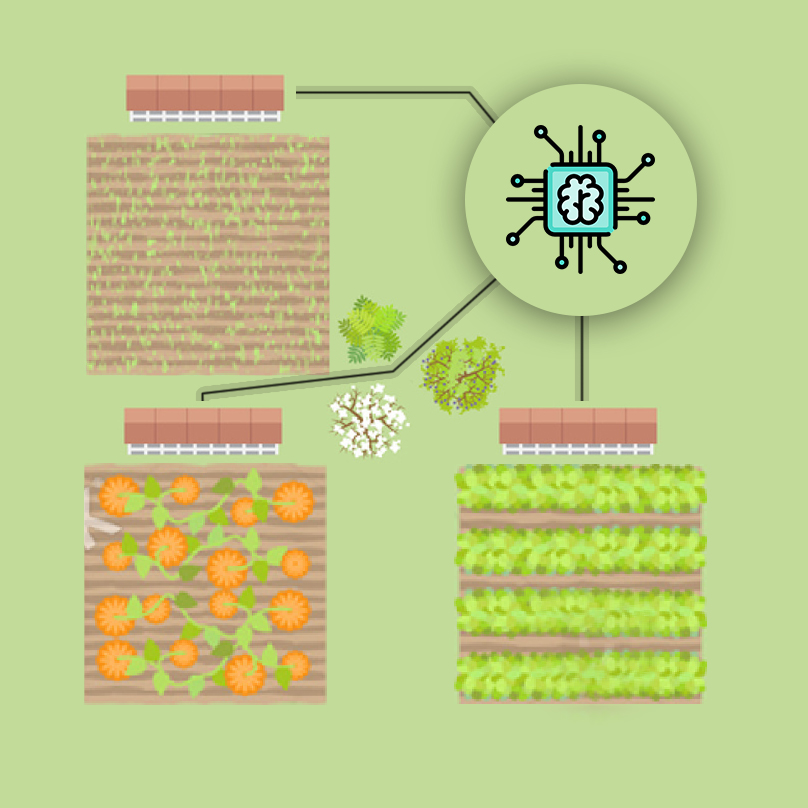
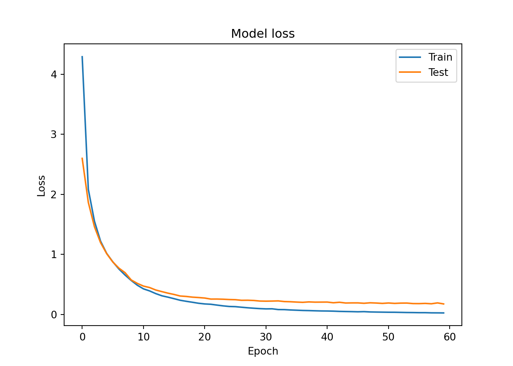

<!DOCTYPE html>
<html xmlns="http://www.w3.org/1999/xhtml" lang="en" xml:lang="en"><head>

<meta charset="utf-8">
<meta name="generator" content="quarto-1.4.549">

<meta name="viewport" content="width=device-width, initial-scale=1.0, user-scalable=yes">

<meta name="author" content="Mburu">
<meta name="dcterms.date" content="2024-03-04">

<title>Personal Blog - Introduction to Deep Learning with Keras</title>
<style>
code{white-space: pre-wrap;}
span.smallcaps{font-variant: small-caps;}
div.columns{display: flex; gap: min(4vw, 1.5em);}
div.column{flex: auto; overflow-x: auto;}
div.hanging-indent{margin-left: 1.5em; text-indent: -1.5em;}
ul.task-list{list-style: none;}
ul.task-list li input[type="checkbox"] {
  width: 0.8em;
  margin: 0 0.8em 0.2em -1em; /* quarto-specific, see https://github.com/quarto-dev/quarto-cli/issues/4556 */ 
  vertical-align: middle;
}
/* CSS for syntax highlighting */
pre > code.sourceCode { white-space: pre; position: relative; }
pre > code.sourceCode > span { line-height: 1.25; }
pre > code.sourceCode > span:empty { height: 1.2em; }
.sourceCode { overflow: visible; }
code.sourceCode > span { color: inherit; text-decoration: inherit; }
div.sourceCode { margin: 1em 0; }
pre.sourceCode { margin: 0; }
@media screen {
div.sourceCode { overflow: auto; }
}
@media print {
pre > code.sourceCode { white-space: pre-wrap; }
pre > code.sourceCode > span { text-indent: -5em; padding-left: 5em; }
}
pre.numberSource code
  { counter-reset: source-line 0; }
pre.numberSource code > span
  { position: relative; left: -4em; counter-increment: source-line; }
pre.numberSource code > span > a:first-child::before
  { content: counter(source-line);
    position: relative; left: -1em; text-align: right; vertical-align: baseline;
    border: none; display: inline-block;
    -webkit-touch-callout: none; -webkit-user-select: none;
    -khtml-user-select: none; -moz-user-select: none;
    -ms-user-select: none; user-select: none;
    padding: 0 4px; width: 4em;
  }
pre.numberSource { margin-left: 3em;  padding-left: 4px; }
div.sourceCode
  {   }
@media screen {
pre > code.sourceCode > span > a:first-child::before { text-decoration: underline; }
}
</style>


<script src="../../site_libs/quarto-nav/quarto-nav.js"></script>
<script src="../../site_libs/quarto-nav/headroom.min.js"></script>
<script src="../../site_libs/clipboard/clipboard.min.js"></script>
<script src="../../site_libs/quarto-search/autocomplete.umd.js"></script>
<script src="../../site_libs/quarto-search/fuse.min.js"></script>
<script src="../../site_libs/quarto-search/quarto-search.js"></script>
<meta name="quarto:offset" content="../../">
<link href="../../milkyway.jpeg" rel="icon" type="image/jpeg">
<script src="../../site_libs/quarto-html/quarto.js"></script>
<script src="../../site_libs/quarto-html/popper.min.js"></script>
<script src="../../site_libs/quarto-html/tippy.umd.min.js"></script>
<script src="../../site_libs/quarto-html/anchor.min.js"></script>
<link href="../../site_libs/quarto-html/tippy.css" rel="stylesheet">
<link href="../../site_libs/quarto-html/quarto-syntax-highlighting.css" rel="stylesheet" id="quarto-text-highlighting-styles">
<script src="../../site_libs/bootstrap/bootstrap.min.js"></script>
<link href="../../site_libs/bootstrap/bootstrap-icons.css" rel="stylesheet">
<link href="../../site_libs/bootstrap/bootstrap.min.css" rel="stylesheet" id="quarto-bootstrap" data-mode="light">
<script id="quarto-search-options" type="application/json">{
  "location": "navbar",
  "copy-button": false,
  "collapse-after": 3,
  "panel-placement": "end",
  "type": "overlay",
  "limit": 50,
  "keyboard-shortcut": [
    "f",
    "/",
    "s"
  ],
  "show-item-context": false,
  "language": {
    "search-no-results-text": "No results",
    "search-matching-documents-text": "matching documents",
    "search-copy-link-title": "Copy link to search",
    "search-hide-matches-text": "Hide additional matches",
    "search-more-match-text": "more match in this document",
    "search-more-matches-text": "more matches in this document",
    "search-clear-button-title": "Clear",
    "search-text-placeholder": "",
    "search-detached-cancel-button-title": "Cancel",
    "search-submit-button-title": "Submit",
    "search-label": "Search"
  }
}</script>
<script async="" src="https://www.googletagmanager.com/gtag/js?id=G-BFNZ97VTLJ"></script>

<script type="text/javascript">

window.dataLayer = window.dataLayer || [];
function gtag(){dataLayer.push(arguments);}
gtag('js', new Date());
gtag('config', 'G-BFNZ97VTLJ', { 'anonymize_ip': true});
</script>
<style>html{ scroll-behavior: smooth; }</style>


<link rel="stylesheet" href="../../style.css">
<meta property="og:title" content="Personal Blog - Introduction to Deep Learning with Keras">
<meta property="og:site_name" content="Personal Blog">
<meta name="twitter:title" content="Personal Blog - Introduction to Deep Learning with Keras">
<meta name="twitter:card" content="summary">
</head>

<body class="nav-fixed">

<div id="quarto-search-results"></div>
  <header id="quarto-header" class="headroom fixed-top">
    <nav class="navbar navbar-expand-lg " data-bs-theme="dark">
      <div class="navbar-container container-fluid">
      <div class="navbar-brand-container mx-auto">
    <a class="navbar-brand" href="../../index.html">
    <span class="navbar-title">Personal Blog</span>
    </a>
  </div>
            <div id="quarto-search" class="" title="Search"></div>
          <button class="navbar-toggler" type="button" data-bs-toggle="collapse" data-bs-target="#navbarCollapse" aria-controls="navbarCollapse" aria-expanded="false" aria-label="Toggle navigation" onclick="if (window.quartoToggleHeadroom) { window.quartoToggleHeadroom(); }">
  <span class="navbar-toggler-icon"></span>
</button>
          <div class="collapse navbar-collapse" id="navbarCollapse">
            <ul class="navbar-nav navbar-nav-scroll me-auto">
  <li class="nav-item">
    <a class="nav-link" href="../../index.html"> 
<span class="menu-text">Home</span></a>
  </li>  
  <li class="nav-item">
    <a class="nav-link" href="../../datacamp.html"> 
<span class="menu-text">Data Camp Courses</span></a>
  </li>  
</ul>
            <ul class="navbar-nav navbar-nav-scroll ms-auto">
  <li class="nav-item">
    <a class="nav-link" href="../../about.html"> 
<span class="menu-text">About</span></a>
  </li>  
  <li class="nav-item compact">
    <a class="nav-link" href="https://github.com/m-mburu"> <i class="bi bi-github" role="img">
</i> 
<span class="menu-text"></span></a>
  </li>  
  <li class="nav-item compact">
    <a class="nav-link" href="https://twitter.com/mmburu_w"> <i class="bi bi-twitter" role="img">
</i> 
<span class="menu-text"></span></a>
  </li>  
</ul>
          </div> <!-- /navcollapse -->
          <div class="quarto-navbar-tools">
  <a href="" class="quarto-reader-toggle quarto-navigation-tool px-1" onclick="window.quartoToggleReader(); return false;" title="Toggle reader mode">
  <div class="quarto-reader-toggle-btn">
  <i class="bi"></i>
  </div>
</a>
</div>
      </div> <!-- /container-fluid -->
    </nav>
</header>
<!-- content -->
<div id="quarto-content" class="quarto-container page-columns page-rows-contents page-layout-article page-navbar">
<!-- sidebar -->
<!-- margin-sidebar -->
    <div id="quarto-margin-sidebar" class="sidebar margin-sidebar">
        <nav id="TOC" role="doc-toc" class="toc-active">
    <h2 id="toc-title">On this page</h2>
   
  <ul>
  <li><a href="#introducing-keras" id="toc-introducing-keras" class="nav-link active" data-scroll-target="#introducing-keras">Introducing Keras</a>
  <ul>
  <li><a href="#hello-nets" id="toc-hello-nets" class="nav-link" data-scroll-target="#hello-nets">Hello nets!</a></li>
  <li><a href="#counting-parameters" id="toc-counting-parameters" class="nav-link" data-scroll-target="#counting-parameters">Counting parameters</a>
  <ul class="collapse">
  <li><a href="#question" id="toc-question" class="nav-link" data-scroll-target="#question">Question</a></li>
  </ul></li>
  <li><a href="#build-as-shown" id="toc-build-as-shown" class="nav-link" data-scroll-target="#build-as-shown">Build as shown!</a></li>
  <li><a href="#specifying-a-model" id="toc-specifying-a-model" class="nav-link" data-scroll-target="#specifying-a-model">Specifying a model</a></li>
  <li><a href="#training" id="toc-training" class="nav-link" data-scroll-target="#training">Training</a></li>
  <li><a href="#predicting-the-orbit" id="toc-predicting-the-orbit" class="nav-link" data-scroll-target="#predicting-the-orbit">Predicting the orbit!</a></li>
  </ul></li>
  <li><a href="#going-deeper" id="toc-going-deeper" class="nav-link" data-scroll-target="#going-deeper">Going Deeper</a>
  <ul>
  <li><a href="#exploring-dollar-bills" id="toc-exploring-dollar-bills" class="nav-link" data-scroll-target="#exploring-dollar-bills">Exploring dollar bills</a></li>
  <li><a href="#a-binary-classification-model" id="toc-a-binary-classification-model" class="nav-link" data-scroll-target="#a-binary-classification-model">A binary classification model</a></li>
  <li><a href="#is-this-dollar-bill-fake" id="toc-is-this-dollar-bill-fake" class="nav-link" data-scroll-target="#is-this-dollar-bill-fake">Is this dollar bill fake ?</a></li>
  <li><a href="#a-multi-class-model" id="toc-a-multi-class-model" class="nav-link" data-scroll-target="#a-multi-class-model">A multi-class model</a></li>
  <li><a href="#prepare-your-dataset" id="toc-prepare-your-dataset" class="nav-link" data-scroll-target="#prepare-your-dataset">Prepare your dataset</a></li>
  <li><a href="#training-on-dart-throwers" id="toc-training-on-dart-throwers" class="nav-link" data-scroll-target="#training-on-dart-throwers">Training on dart throwers</a></li>
  <li><a href="#softmax-predictions" id="toc-softmax-predictions" class="nav-link" data-scroll-target="#softmax-predictions">Softmax predictions</a></li>
  <li><a href="#an-irrigation-machine" id="toc-an-irrigation-machine" class="nav-link" data-scroll-target="#an-irrigation-machine">An irrigation machine</a></li>
  <li><a href="#training-with-multiple-labels" id="toc-training-with-multiple-labels" class="nav-link" data-scroll-target="#training-with-multiple-labels">Training with multiple labels</a></li>
  <li><a href="#the-history-callback" id="toc-the-history-callback" class="nav-link" data-scroll-target="#the-history-callback">The history callback</a></li>
  <li><a href="#early-stopping-your-model" id="toc-early-stopping-your-model" class="nav-link" data-scroll-target="#early-stopping-your-model">Early stopping your model</a></li>
  <li><a href="#a-combination-of-callbacks" id="toc-a-combination-of-callbacks" class="nav-link" data-scroll-target="#a-combination-of-callbacks">A combination of callbacks</a></li>
  </ul></li>
  <li><a href="#improving-your-model-performance" id="toc-improving-your-model-performance" class="nav-link" data-scroll-target="#improving-your-model-performance">Improving Your Model Performance</a>
  <ul>
  <li><a href="#learning-the-digits" id="toc-learning-the-digits" class="nav-link" data-scroll-target="#learning-the-digits">Learning the digits</a></li>
  <li><a href="#is-the-model-overfitting" id="toc-is-the-model-overfitting" class="nav-link" data-scroll-target="#is-the-model-overfitting">Is the model overfitting?</a></li>
  </ul></li>
  </ul>
</nav>
    </div>
<!-- main -->
<main class="content" id="quarto-document-content">

<header id="title-block-header" class="quarto-title-block default">
<div class="quarto-title">
<h1 class="title">Introduction to Deep Learning with Keras</h1>
</div>


<div class="quarto-title-meta">

    <div>
    <div class="quarto-title-meta-heading">Author</div>
    <div class="quarto-title-meta-contents">
             <p>Mburu </p>
          </div>
  </div>
    
    <div>
    <div class="quarto-title-meta-heading">Published</div>
    <div class="quarto-title-meta-contents">
      <p class="date">March 4, 2024</p>
    </div>
  </div>
  
    
  </div>
  


</header>


<section id="introducing-keras" class="level1">
<h1>Introducing Keras</h1>
<section id="hello-nets" class="level2">
<h2 class="anchored" data-anchor-id="hello-nets">Hello nets!</h2>
<p>You’re going to build a simple neural network to get a feeling of how quickly it is to accomplish this in Keras.</p>
<p>You will build a network that takes two numbers as an input, passes them through a hidden layer of 10 neurons, and finally outputs a single non-constrained number.</p>
<p>A non-constrained output can be obtained by avoiding setting an activation function in the output layer. This is useful for problems like regression, when we want our output to be able to take any non-constrained value.</p>
<p>include hello.nets.png </p>
<div class="cell">
<div class="sourceCode cell-code" id="cb1"><pre class="sourceCode python code-with-copy"><code class="sourceCode python"><span id="cb1-1"><a href="#cb1-1" aria-hidden="true" tabindex="-1"></a><span class="co"># Import the Sequential model and Dense layer</span></span>
<span id="cb1-2"><a href="#cb1-2" aria-hidden="true" tabindex="-1"></a><span class="im">from</span> tensorflow.keras.models <span class="im">import</span> Sequential</span>
<span id="cb1-3"><a href="#cb1-3" aria-hidden="true" tabindex="-1"></a><span class="im">from</span> tensorflow.keras.layers <span class="im">import</span> Dense</span>
<span id="cb1-4"><a href="#cb1-4" aria-hidden="true" tabindex="-1"></a></span>
<span id="cb1-5"><a href="#cb1-5" aria-hidden="true" tabindex="-1"></a><span class="co"># Create a Sequential model</span></span>
<span id="cb1-6"><a href="#cb1-6" aria-hidden="true" tabindex="-1"></a>model <span class="op">=</span> Sequential()</span>
<span id="cb1-7"><a href="#cb1-7" aria-hidden="true" tabindex="-1"></a></span>
<span id="cb1-8"><a href="#cb1-8" aria-hidden="true" tabindex="-1"></a><span class="co"># Add an input layer and a hidden layer with 10 neurons</span></span>
<span id="cb1-9"><a href="#cb1-9" aria-hidden="true" tabindex="-1"></a>model.add(Dense(<span class="dv">10</span>, input_shape<span class="op">=</span>(<span class="dv">2</span>,), activation<span class="op">=</span><span class="st">"relu"</span>))</span>
<span id="cb1-10"><a href="#cb1-10" aria-hidden="true" tabindex="-1"></a></span>
<span id="cb1-11"><a href="#cb1-11" aria-hidden="true" tabindex="-1"></a><span class="co"># Add a 1-neuron output layer</span></span>
<span id="cb1-12"><a href="#cb1-12" aria-hidden="true" tabindex="-1"></a>model.add(Dense(<span class="dv">1</span>))</span>
<span id="cb1-13"><a href="#cb1-13" aria-hidden="true" tabindex="-1"></a></span>
<span id="cb1-14"><a href="#cb1-14" aria-hidden="true" tabindex="-1"></a><span class="co"># Summarise your model</span></span>
<span id="cb1-15"><a href="#cb1-15" aria-hidden="true" tabindex="-1"></a>model.summary()</span></code><button title="Copy to Clipboard" class="code-copy-button"><i class="bi"></i></button></pre></div>
<div class="cell-output cell-output-stdout">
<pre><code>Model: "sequential"
_________________________________________________________________
 Layer (type)                Output Shape              Param #   
=================================================================
 dense (Dense)               (None, 10)                30        
                                                                 
 dense_1 (Dense)             (None, 1)                 11        
                                                                 
=================================================================
Total params: 41 (164.00 Byte)
Trainable params: 41 (164.00 Byte)
Non-trainable params: 0 (0.00 Byte)
_________________________________________________________________</code></pre>
</div>
</div>
</section>
<section id="counting-parameters" class="level2">
<h2 class="anchored" data-anchor-id="counting-parameters">Counting parameters</h2>
<p>You’ve just created a neural network. But you’re going to create a new one now, taking some time to think about the weights of each layer. The Keras Dense layer and the Sequential model are already loaded for you to use.</p>
<p>This is the network you will be creating:</p>
<p></p>
<div class="cell">
<div class="sourceCode cell-code" id="cb3"><pre class="sourceCode python code-with-copy"><code class="sourceCode python"><span id="cb3-1"><a href="#cb3-1" aria-hidden="true" tabindex="-1"></a><span class="co"># Instantiate a new Sequential model</span></span>
<span id="cb3-2"><a href="#cb3-2" aria-hidden="true" tabindex="-1"></a>model <span class="op">=</span> Sequential()</span>
<span id="cb3-3"><a href="#cb3-3" aria-hidden="true" tabindex="-1"></a></span>
<span id="cb3-4"><a href="#cb3-4" aria-hidden="true" tabindex="-1"></a><span class="co"># Add a Dense layer with five neurons and three inputs</span></span>
<span id="cb3-5"><a href="#cb3-5" aria-hidden="true" tabindex="-1"></a>model.add(Dense(<span class="dv">5</span>, input_shape<span class="op">=</span>(<span class="dv">3</span>,), activation<span class="op">=</span><span class="st">"relu"</span>))</span>
<span id="cb3-6"><a href="#cb3-6" aria-hidden="true" tabindex="-1"></a></span>
<span id="cb3-7"><a href="#cb3-7" aria-hidden="true" tabindex="-1"></a><span class="co"># Add a final Dense layer with one neuron and no activation</span></span>
<span id="cb3-8"><a href="#cb3-8" aria-hidden="true" tabindex="-1"></a>model.add(Dense(<span class="dv">1</span>))</span>
<span id="cb3-9"><a href="#cb3-9" aria-hidden="true" tabindex="-1"></a></span>
<span id="cb3-10"><a href="#cb3-10" aria-hidden="true" tabindex="-1"></a><span class="co"># Summarize your model</span></span>
<span id="cb3-11"><a href="#cb3-11" aria-hidden="true" tabindex="-1"></a>model.summary()</span></code><button title="Copy to Clipboard" class="code-copy-button"><i class="bi"></i></button></pre></div>
<div class="cell-output cell-output-stdout">
<pre><code>Model: "sequential_1"
_________________________________________________________________
 Layer (type)                Output Shape              Param #   
=================================================================
 dense_2 (Dense)             (None, 5)                 20        
                                                                 
 dense_3 (Dense)             (None, 1)                 6         
                                                                 
=================================================================
Total params: 26 (104.00 Byte)
Trainable params: 26 (104.00 Byte)
Non-trainable params: 0 (0.00 Byte)
_________________________________________________________________</code></pre>
</div>
</div>
<section id="question" class="level3">
<h3 class="anchored" data-anchor-id="question">Question</h3>
<ul>
<li><p>Given the model you just built, which answer is correct regarding the number of weights (parameters) in the hidden layer?</p></li>
<li><p><strong><em>There are 20 parameters, 15 from the connections of our inputs to our hidden layer and 5 from the bias weight of each neuron in the hidden layer.</em></strong></p></li>
</ul>
</section>
</section>
<section id="build-as-shown" class="level2">
<h2 class="anchored" data-anchor-id="build-as-shown">Build as shown!</h2>
<p>You will take on a final challenge before moving on to the next lesson. Build the network shown in the picture below. Prove your mastered Keras basics in no time!</p>
<p></p>
<div class="cell">
<div class="sourceCode cell-code" id="cb5"><pre class="sourceCode python code-with-copy"><code class="sourceCode python"><span id="cb5-1"><a href="#cb5-1" aria-hidden="true" tabindex="-1"></a></span>
<span id="cb5-2"><a href="#cb5-2" aria-hidden="true" tabindex="-1"></a><span class="co"># Instantiate a Sequential model</span></span>
<span id="cb5-3"><a href="#cb5-3" aria-hidden="true" tabindex="-1"></a>model <span class="op">=</span> Sequential()</span>
<span id="cb5-4"><a href="#cb5-4" aria-hidden="true" tabindex="-1"></a></span>
<span id="cb5-5"><a href="#cb5-5" aria-hidden="true" tabindex="-1"></a><span class="co"># Build the input and hidden layer</span></span>
<span id="cb5-6"><a href="#cb5-6" aria-hidden="true" tabindex="-1"></a>model.add(Dense(<span class="dv">3</span>, input_shape <span class="op">=</span> (<span class="dv">2</span>,)))</span>
<span id="cb5-7"><a href="#cb5-7" aria-hidden="true" tabindex="-1"></a></span>
<span id="cb5-8"><a href="#cb5-8" aria-hidden="true" tabindex="-1"></a><span class="co"># Add the ouput layer</span></span>
<span id="cb5-9"><a href="#cb5-9" aria-hidden="true" tabindex="-1"></a>model.add(Dense(<span class="dv">1</span>))</span></code><button title="Copy to Clipboard" class="code-copy-button"><i class="bi"></i></button></pre></div>
</div>
</section>
<section id="specifying-a-model" class="level2">
<h2 class="anchored" data-anchor-id="specifying-a-model">Specifying a model</h2>
<p>You will build a simple regression model to predict the orbit of the meteor!</p>
<p>Your training data consist of measurements taken at time steps from -10 minutes before the impact region to +10 minutes after. Each time step can be viewed as an X coordinate in our graph, which has an associated position Y for the meteor orbit at that time step.</p>
<p>Note that you can view this problem as approximating a quadratic function via the use of neural networks.</p>
<p></p>
<p>This data is stored in two numpy arrays: one called time_steps , what we call features, and another called y_positions, with the labels. Go on and build your model! It should be able to predict the y positions for the meteor orbit at future time steps.</p>
<p>Keras Sequential model and Dense layers are available for you to use.</p>
<div class="cell">
<div class="sourceCode cell-code" id="cb6"><pre class="sourceCode python code-with-copy"><code class="sourceCode python"><span id="cb6-1"><a href="#cb6-1" aria-hidden="true" tabindex="-1"></a><span class="co"># Instantiate a Sequential model</span></span>
<span id="cb6-2"><a href="#cb6-2" aria-hidden="true" tabindex="-1"></a>model <span class="op">=</span> Sequential()</span>
<span id="cb6-3"><a href="#cb6-3" aria-hidden="true" tabindex="-1"></a></span>
<span id="cb6-4"><a href="#cb6-4" aria-hidden="true" tabindex="-1"></a><span class="co"># Add a Dense layer with 50 neurons and an input of 1 neuron</span></span>
<span id="cb6-5"><a href="#cb6-5" aria-hidden="true" tabindex="-1"></a>model.add(Dense(<span class="dv">50</span>, input_shape<span class="op">=</span>(<span class="dv">1</span>,), activation<span class="op">=</span><span class="st">'relu'</span>))</span>
<span id="cb6-6"><a href="#cb6-6" aria-hidden="true" tabindex="-1"></a></span>
<span id="cb6-7"><a href="#cb6-7" aria-hidden="true" tabindex="-1"></a><span class="co"># Add two Dense layers with 50 neurons and relu activation</span></span>
<span id="cb6-8"><a href="#cb6-8" aria-hidden="true" tabindex="-1"></a>model.add(Dense(<span class="dv">50</span>, activation<span class="op">=</span> <span class="st">"relu"</span>))</span>
<span id="cb6-9"><a href="#cb6-9" aria-hidden="true" tabindex="-1"></a>model.add(Dense(<span class="dv">50</span>, activation<span class="op">=</span> <span class="st">"relu"</span>))</span>
<span id="cb6-10"><a href="#cb6-10" aria-hidden="true" tabindex="-1"></a></span>
<span id="cb6-11"><a href="#cb6-11" aria-hidden="true" tabindex="-1"></a><span class="co"># End your model with a Dense layer and no activation</span></span>
<span id="cb6-12"><a href="#cb6-12" aria-hidden="true" tabindex="-1"></a>model.add(Dense(<span class="dv">1</span>))</span></code><button title="Copy to Clipboard" class="code-copy-button"><i class="bi"></i></button></pre></div>
</div>
</section>
<section id="training" class="level2">
<h2 class="anchored" data-anchor-id="training">Training</h2>
<p>You’re going to train your first model in this course, and for a good cause!</p>
<p>Remember that before training your Keras models you need to compile them. This can be done with the .compile() method. The .compile() method takes arguments such as the optimizer, used for weight updating, and the loss function, which is what we want to minimize. Training your model is as easy as calling the .fit() method, passing on the features, labels and a number of epochs to train for.</p>
<p>The regression model you built in the previous exercise is loaded for you to use, along with the time_steps and y_positions data. Train it and evaluate it on this very same data, let’s see if your model can learn the meteor’s trajectory.</p>
<div class="cell">
<div class="sourceCode cell-code" id="cb7"><pre class="sourceCode python code-with-copy"><code class="sourceCode python"><span id="cb7-1"><a href="#cb7-1" aria-hidden="true" tabindex="-1"></a>time_steps_script <span class="op">=</span> <span class="st">"time_steps.py"</span></span>
<span id="cb7-2"><a href="#cb7-2" aria-hidden="true" tabindex="-1"></a></span>
<span id="cb7-3"><a href="#cb7-3" aria-hidden="true" tabindex="-1"></a>filename <span class="op">=</span> <span class="st">'path_to_your_script.py'</span></span>
<span id="cb7-4"><a href="#cb7-4" aria-hidden="true" tabindex="-1"></a></span>
<span id="cb7-5"><a href="#cb7-5" aria-hidden="true" tabindex="-1"></a><span class="cf">with</span> <span class="bu">open</span>(time_steps_script, <span class="st">'r'</span>) <span class="im">as</span> <span class="bu">file</span>:</span>
<span id="cb7-6"><a href="#cb7-6" aria-hidden="true" tabindex="-1"></a>    script_content <span class="op">=</span> <span class="bu">file</span>.read()</span>
<span id="cb7-7"><a href="#cb7-7" aria-hidden="true" tabindex="-1"></a></span>
<span id="cb7-8"><a href="#cb7-8" aria-hidden="true" tabindex="-1"></a><span class="bu">exec</span>(script_content)</span>
<span id="cb7-9"><a href="#cb7-9" aria-hidden="true" tabindex="-1"></a></span>
<span id="cb7-10"><a href="#cb7-10" aria-hidden="true" tabindex="-1"></a><span class="co"># Compile your model</span></span>
<span id="cb7-11"><a href="#cb7-11" aria-hidden="true" tabindex="-1"></a>model.<span class="bu">compile</span>(optimizer <span class="op">=</span> <span class="st">"adam"</span>, loss <span class="op">=</span> <span class="st">"mse"</span>)</span>
<span id="cb7-12"><a href="#cb7-12" aria-hidden="true" tabindex="-1"></a></span>
<span id="cb7-13"><a href="#cb7-13" aria-hidden="true" tabindex="-1"></a><span class="bu">print</span>(<span class="st">"Training started..., this can take a while:"</span>)</span></code><button title="Copy to Clipboard" class="code-copy-button"><i class="bi"></i></button></pre></div>
<div class="cell-output cell-output-stdout">
<pre><code>Training started..., this can take a while:</code></pre>
</div>
<div class="sourceCode cell-code" id="cb9"><pre class="sourceCode python code-with-copy"><code class="sourceCode python"><span id="cb9-1"><a href="#cb9-1" aria-hidden="true" tabindex="-1"></a><span class="co"># Fit your model on your data for 30 epochs</span></span>
<span id="cb9-2"><a href="#cb9-2" aria-hidden="true" tabindex="-1"></a>model.fit(time_steps,y_positions, epochs <span class="op">=</span> <span class="dv">30</span>)</span></code><button title="Copy to Clipboard" class="code-copy-button"><i class="bi"></i></button></pre></div>
<div class="cell-output cell-output-stdout">
<pre><code>Epoch 1/30

 1/63 [..............................] - ETA: 31s - loss: 2527.2012
63/63 [==============================] - 1s 830us/step - loss: 1530.8639
Epoch 2/30

 1/63 [..............................] - ETA: 0s - loss: 448.6926
63/63 [==============================] - 0s 766us/step - loss: 284.6430
Epoch 3/30

 1/63 [..............................] - ETA: 0s - loss: 126.1932
63/63 [==============================] - 0s 713us/step - loss: 138.4171
Epoch 4/30

 1/63 [..............................] - ETA: 0s - loss: 119.9998
63/63 [==============================] - 0s 734us/step - loss: 120.4368
Epoch 5/30

 1/63 [..............................] - ETA: 0s - loss: 107.8604
63/63 [==============================] - 0s 754us/step - loss: 101.8582
Epoch 6/30

 1/63 [..............................] - ETA: 0s - loss: 90.4659
63/63 [==============================] - 0s 731us/step - loss: 82.4226
Epoch 7/30

 1/63 [..............................] - ETA: 0s - loss: 66.8087
63/63 [==============================] - 0s 727us/step - loss: 61.0108
Epoch 8/30

 1/63 [..............................] - ETA: 0s - loss: 39.1746
63/63 [==============================] - 0s 753us/step - loss: 40.8566
Epoch 9/30

 1/63 [..............................] - ETA: 0s - loss: 28.5904
63/63 [==============================] - 0s 702us/step - loss: 26.4967
Epoch 10/30

 1/63 [..............................] - ETA: 0s - loss: 28.4148
63/63 [==============================] - 0s 712us/step - loss: 16.2319
Epoch 11/30

 1/63 [..............................] - ETA: 0s - loss: 7.6785
63/63 [==============================] - 0s 711us/step - loss: 10.1127
Epoch 12/30

 1/63 [..............................] - ETA: 0s - loss: 8.5963
63/63 [==============================] - 0s 753us/step - loss: 6.4101
Epoch 13/30

 1/63 [..............................] - ETA: 0s - loss: 4.6141
63/63 [==============================] - 0s 758us/step - loss: 4.7100
Epoch 14/30

 1/63 [..............................] - ETA: 0s - loss: 1.9968
63/63 [==============================] - 0s 772us/step - loss: 3.3886
Epoch 15/30

 1/63 [..............................] - ETA: 0s - loss: 2.1850
63/63 [==============================] - 0s 771us/step - loss: 2.1291
Epoch 16/30

 1/63 [..............................] - ETA: 0s - loss: 1.1860
62/63 [============================&gt;.] - ETA: 0s - loss: 1.7573
63/63 [==============================] - 0s 841us/step - loss: 1.7536
Epoch 17/30

 1/63 [..............................] - ETA: 0s - loss: 1.6610
62/63 [============================&gt;.] - ETA: 0s - loss: 1.1611
63/63 [==============================] - 0s 835us/step - loss: 1.1624
Epoch 18/30

 1/63 [..............................] - ETA: 0s - loss: 1.1917
63/63 [==============================] - 0s 773us/step - loss: 0.9553
Epoch 19/30

 1/63 [..............................] - ETA: 0s - loss: 0.3712
63/63 [==============================] - 0s 682us/step - loss: 0.8234
Epoch 20/30

 1/63 [..............................] - ETA: 0s - loss: 0.9161
63/63 [==============================] - 0s 706us/step - loss: 0.5787
Epoch 21/30

 1/63 [..............................] - ETA: 0s - loss: 0.7005
63/63 [==============================] - 0s 705us/step - loss: 0.4966
Epoch 22/30

 1/63 [..............................] - ETA: 0s - loss: 0.2277
63/63 [==============================] - 0s 691us/step - loss: 0.4249
Epoch 23/30

 1/63 [..............................] - ETA: 0s - loss: 0.2552
63/63 [==============================] - 0s 732us/step - loss: 0.3408
Epoch 24/30

 1/63 [..............................] - ETA: 0s - loss: 0.7835
63/63 [==============================] - 0s 701us/step - loss: 0.2947
Epoch 25/30

 1/63 [..............................] - ETA: 0s - loss: 0.3572
63/63 [==============================] - 0s 694us/step - loss: 0.2354
Epoch 26/30

 1/63 [..............................] - ETA: 0s - loss: 0.2468
63/63 [==============================] - 0s 685us/step - loss: 0.2315
Epoch 27/30

 1/63 [..............................] - ETA: 0s - loss: 0.2303
63/63 [==============================] - 0s 703us/step - loss: 0.1912
Epoch 28/30

 1/63 [..............................] - ETA: 0s - loss: 0.2580
63/63 [==============================] - 0s 710us/step - loss: 0.1675
Epoch 29/30

 1/63 [..............................] - ETA: 0s - loss: 0.3106
63/63 [==============================] - 0s 706us/step - loss: 0.1773
Epoch 30/30

 1/63 [..............................] - ETA: 0s - loss: 0.1133
63/63 [==============================] - 0s 694us/step - loss: 0.1275
&lt;keras.src.callbacks.History object at 0x7efbbc538280&gt;</code></pre>
</div>
<div class="sourceCode cell-code" id="cb11"><pre class="sourceCode python code-with-copy"><code class="sourceCode python"><span id="cb11-1"><a href="#cb11-1" aria-hidden="true" tabindex="-1"></a><span class="co"># Evaluate your model </span></span>
<span id="cb11-2"><a href="#cb11-2" aria-hidden="true" tabindex="-1"></a><span class="bu">print</span>(<span class="st">"Final loss value:"</span>,model.evaluate(time_steps, y_positions))</span></code><button title="Copy to Clipboard" class="code-copy-button"><i class="bi"></i></button></pre></div>
<div class="cell-output cell-output-stdout">
<pre><code>
 1/63 [..............................] - ETA: 4s - loss: 0.8075
63/63 [==============================] - 0s 583us/step - loss: 0.0994
Final loss value: 0.09941485524177551</code></pre>
</div>
</div>
</section>
<section id="predicting-the-orbit" class="level2">
<h2 class="anchored" data-anchor-id="predicting-the-orbit">Predicting the orbit!</h2>
<p>You’ve already trained a model that approximates the orbit of the meteor approaching Earth and it’s loaded for you to use.</p>
<p>Since you trained your model for values between -10 and 10 minutes, your model hasn’t yet seen any other values for different time steps. You will now visualize how your model behaves on unseen data.</p>
<p>If you want to check the source code of plot_orbit, paste show_code(plot_orbit) into the console.</p>
<p>Hurry up, the Earth is running out of time!</p>
<p>Remember np.arange(x,y) produces a range of values from x to y-1. That is the [x, y) interval.</p>
<div class="cell">
<div class="sourceCode cell-code" id="cb13"><pre class="sourceCode python code-with-copy"><code class="sourceCode python"><span id="cb13-1"><a href="#cb13-1" aria-hidden="true" tabindex="-1"></a><span class="im">import</span> numpy <span class="im">as</span> np</span>
<span id="cb13-2"><a href="#cb13-2" aria-hidden="true" tabindex="-1"></a><span class="co"># Predict the twenty minutes orbit</span></span>
<span id="cb13-3"><a href="#cb13-3" aria-hidden="true" tabindex="-1"></a>twenty_min_orbit <span class="op">=</span> model.predict(np.arange(<span class="op">-</span><span class="dv">10</span>, <span class="dv">11</span>))</span></code><button title="Copy to Clipboard" class="code-copy-button"><i class="bi"></i></button></pre></div>
<div class="cell-output cell-output-stdout">
<pre><code>
1/1 [==============================] - ETA: 0s
1/1 [==============================] - 0s 54ms/step</code></pre>
</div>
<div class="sourceCode cell-code" id="cb15"><pre class="sourceCode python code-with-copy"><code class="sourceCode python"><span id="cb15-1"><a href="#cb15-1" aria-hidden="true" tabindex="-1"></a><span class="co"># Plot the twenty minute orbit </span></span>
<span id="cb15-2"><a href="#cb15-2" aria-hidden="true" tabindex="-1"></a>plot_orbit(twenty_min_orbit)</span></code><button title="Copy to Clipboard" class="code-copy-button"><i class="bi"></i></button></pre></div>
<div class="cell-output-display">
<div>
<figure class="figure">
<p></p>
</figure>
</div>
</div>
</div>
<div class="cell">
<div class="sourceCode cell-code" id="cb16"><pre class="sourceCode python code-with-copy"><code class="sourceCode python"><span id="cb16-1"><a href="#cb16-1" aria-hidden="true" tabindex="-1"></a><span class="co"># Predict the eighty minute orbit</span></span>
<span id="cb16-2"><a href="#cb16-2" aria-hidden="true" tabindex="-1"></a>eighty_min_orbit <span class="op">=</span> model.predict(np.arange(<span class="op">-</span><span class="dv">40</span>, <span class="dv">41</span>))</span></code><button title="Copy to Clipboard" class="code-copy-button"><i class="bi"></i></button></pre></div>
<div class="cell-output cell-output-stdout">
<pre><code>
1/3 [=========&gt;....................] - ETA: 0s
3/3 [==============================] - 0s 759us/step</code></pre>
</div>
<div class="sourceCode cell-code" id="cb18"><pre class="sourceCode python code-with-copy"><code class="sourceCode python"><span id="cb18-1"><a href="#cb18-1" aria-hidden="true" tabindex="-1"></a><span class="co"># Plot the eighty minute orbit </span></span>
<span id="cb18-2"><a href="#cb18-2" aria-hidden="true" tabindex="-1"></a>plot_orbit(eighty_min_orbit)</span></code><button title="Copy to Clipboard" class="code-copy-button"><i class="bi"></i></button></pre></div>
<div class="cell-output-display">
<div>
<figure class="figure">
<p></p>
</figure>
</div>
</div>
</div>
</section>
</section>
<section id="going-deeper" class="level1">
<h1>Going Deeper</h1>
<section id="exploring-dollar-bills" class="level2">
<h2 class="anchored" data-anchor-id="exploring-dollar-bills">Exploring dollar bills</h2>
<p>You will practice building classification models in Keras with the Banknote Authentication dataset.</p>
<p>Your goal is to distinguish between real and fake dollar bills. In order to do this, the dataset comes with 4 features: variance,skewness,kurtosis and entropy. These features are calculated by applying mathematical operations over the dollar bill images. The labels are found in the dataframe’s class column.</p>
<p></p>
<div class="cell">
<div class="sourceCode cell-code" id="cb19"><pre class="sourceCode python code-with-copy"><code class="sourceCode python"><span id="cb19-1"><a href="#cb19-1" aria-hidden="true" tabindex="-1"></a><span class="im">import</span> pandas <span class="im">as</span> pd</span>
<span id="cb19-2"><a href="#cb19-2" aria-hidden="true" tabindex="-1"></a>banknotes <span class="op">=</span> pd.read_csv(<span class="st">"data/banknotes.csv"</span>)</span>
<span id="cb19-3"><a href="#cb19-3" aria-hidden="true" tabindex="-1"></a></span>
<span id="cb19-4"><a href="#cb19-4" aria-hidden="true" tabindex="-1"></a><span class="co"># Import seaborn</span></span>
<span id="cb19-5"><a href="#cb19-5" aria-hidden="true" tabindex="-1"></a><span class="im">import</span> seaborn <span class="im">as</span> sns</span>
<span id="cb19-6"><a href="#cb19-6" aria-hidden="true" tabindex="-1"></a><span class="co"># Use pairplot and set the hue to be our class column</span></span>
<span id="cb19-7"><a href="#cb19-7" aria-hidden="true" tabindex="-1"></a>sns.pairplot(banknotes, hue<span class="op">=</span> <span class="st">"class"</span>) </span></code><button title="Copy to Clipboard" class="code-copy-button"><i class="bi"></i></button></pre></div>
<div class="cell-output-display">
<div>
<figure class="figure">
<p></p>
</figure>
</div>
</div>
<div class="sourceCode cell-code" id="cb20"><pre class="sourceCode python code-with-copy"><code class="sourceCode python"><span id="cb20-1"><a href="#cb20-1" aria-hidden="true" tabindex="-1"></a><span class="co"># Describe the data</span></span>
<span id="cb20-2"><a href="#cb20-2" aria-hidden="true" tabindex="-1"></a><span class="bu">print</span>(<span class="st">'Dataset stats: </span><span class="ch">\n</span><span class="st">'</span>,banknotes.describe())</span></code><button title="Copy to Clipboard" class="code-copy-button"><i class="bi"></i></button></pre></div>
<div class="cell-output cell-output-stdout">
<pre><code>Dataset stats: 
            variace     skewness     curtosis      entropy        class
count  1372.000000  1372.000000  1372.000000  1372.000000  1372.000000
mean      0.433735     1.922353     1.397627    -1.191657     0.444606
std       2.842763     5.869047     4.310030     2.101013     0.497103
min      -7.042100   -13.773100    -5.286100    -8.548200     0.000000
25%      -1.773000    -1.708200    -1.574975    -2.413450     0.000000
50%       0.496180     2.319650     0.616630    -0.586650     0.000000
75%       2.821475     6.814625     3.179250     0.394810     1.000000
max       6.824800    12.951600    17.927400     2.449500     1.000000</code></pre>
</div>
<div class="sourceCode cell-code" id="cb22"><pre class="sourceCode python code-with-copy"><code class="sourceCode python"><span id="cb22-1"><a href="#cb22-1" aria-hidden="true" tabindex="-1"></a><span class="co"># Count the number of observations per class</span></span>
<span id="cb22-2"><a href="#cb22-2" aria-hidden="true" tabindex="-1"></a><span class="bu">print</span>(<span class="st">'Observations per class: </span><span class="ch">\n</span><span class="st">'</span>,banknotes[<span class="st">"class"</span>].value_counts())</span></code><button title="Copy to Clipboard" class="code-copy-button"><i class="bi"></i></button></pre></div>
<div class="cell-output cell-output-stdout">
<pre><code>Observations per class: 
 class
0    762
1    610
Name: count, dtype: int64</code></pre>
</div>
<div class="cell-output-display">
<div>
<figure class="figure">
<p></p>
</figure>
</div>
</div>
</div>
</section>
<section id="a-binary-classification-model" class="level2">
<h2 class="anchored" data-anchor-id="a-binary-classification-model">A binary classification model</h2>
<p>Now that you know what the Banknote Authentication dataset looks like, we’ll build a simple model to distinguish between real and fake bills.</p>
<p>You will perform binary classification by using a single neuron as an output. The input layer will have 4 neurons since we have 4 features in our dataset. The model’s output will be a value constrained between 0 and 1.</p>
<p>We will interpret this output number as the probability of our input variables coming from a fake dollar bill, with 1 meaning we are certain it’s a fake bill.</p>
<p></p>
<div class="cell">
<div class="sourceCode cell-code" id="cb24"><pre class="sourceCode python code-with-copy"><code class="sourceCode python"><span id="cb24-1"><a href="#cb24-1" aria-hidden="true" tabindex="-1"></a><span class="co"># Import the sequential model and dense layer</span></span>
<span id="cb24-2"><a href="#cb24-2" aria-hidden="true" tabindex="-1"></a><span class="im">from</span> tensorflow.keras.models <span class="im">import</span> Sequential</span>
<span id="cb24-3"><a href="#cb24-3" aria-hidden="true" tabindex="-1"></a><span class="im">from</span> tensorflow.keras.layers <span class="im">import</span> Dense</span>
<span id="cb24-4"><a href="#cb24-4" aria-hidden="true" tabindex="-1"></a></span>
<span id="cb24-5"><a href="#cb24-5" aria-hidden="true" tabindex="-1"></a><span class="co"># Create a sequential model</span></span>
<span id="cb24-6"><a href="#cb24-6" aria-hidden="true" tabindex="-1"></a>model <span class="op">=</span> Sequential()</span>
<span id="cb24-7"><a href="#cb24-7" aria-hidden="true" tabindex="-1"></a></span>
<span id="cb24-8"><a href="#cb24-8" aria-hidden="true" tabindex="-1"></a><span class="co"># Add a dense layer </span></span>
<span id="cb24-9"><a href="#cb24-9" aria-hidden="true" tabindex="-1"></a>model.add(Dense(<span class="dv">1</span>, input_shape<span class="op">=</span>(<span class="dv">4</span>,), activation<span class="op">=</span> <span class="st">"sigmoid"</span>))</span>
<span id="cb24-10"><a href="#cb24-10" aria-hidden="true" tabindex="-1"></a></span>
<span id="cb24-11"><a href="#cb24-11" aria-hidden="true" tabindex="-1"></a><span class="co"># Compile your model</span></span>
<span id="cb24-12"><a href="#cb24-12" aria-hidden="true" tabindex="-1"></a>model.<span class="bu">compile</span>(loss<span class="op">=</span><span class="st">'binary_crossentropy'</span>, optimizer<span class="op">=</span><span class="st">"sgd"</span>, metrics<span class="op">=</span>[<span class="st">'accuracy'</span>])</span>
<span id="cb24-13"><a href="#cb24-13" aria-hidden="true" tabindex="-1"></a></span>
<span id="cb24-14"><a href="#cb24-14" aria-hidden="true" tabindex="-1"></a><span class="co"># Display a summary of your model</span></span>
<span id="cb24-15"><a href="#cb24-15" aria-hidden="true" tabindex="-1"></a>model.summary()</span></code><button title="Copy to Clipboard" class="code-copy-button"><i class="bi"></i></button></pre></div>
<div class="cell-output cell-output-stdout">
<pre><code>Model: "sequential_4"
_________________________________________________________________
 Layer (type)                Output Shape              Param #   
=================================================================
 dense_10 (Dense)            (None, 1)                 5         
                                                                 
=================================================================
Total params: 5 (20.00 Byte)
Trainable params: 5 (20.00 Byte)
Non-trainable params: 0 (0.00 Byte)
_________________________________________________________________</code></pre>
</div>
</div>
</section>
<section id="is-this-dollar-bill-fake" class="level2">
<h2 class="anchored" data-anchor-id="is-this-dollar-bill-fake">Is this dollar bill fake ?</h2>
<p>You are now ready to train your model and check how well it performs when classifying new bills! The dataset has already been partitioned into features: X_train &amp; X_test, and labels: y_train &amp; y_test.</p>
<div class="cell">
<div class="sourceCode cell-code" id="cb26"><pre class="sourceCode python code-with-copy"><code class="sourceCode python"><span id="cb26-1"><a href="#cb26-1" aria-hidden="true" tabindex="-1"></a><span class="im">from</span> sklearn.model_selection <span class="im">import</span> train_test_split</span>
<span id="cb26-2"><a href="#cb26-2" aria-hidden="true" tabindex="-1"></a><span class="co"># Separate features and labels</span></span>
<span id="cb26-3"><a href="#cb26-3" aria-hidden="true" tabindex="-1"></a>X <span class="op">=</span> banknotes.drop(<span class="st">'class'</span>, axis<span class="op">=</span><span class="dv">1</span>)  <span class="co"># Features</span></span>
<span id="cb26-4"><a href="#cb26-4" aria-hidden="true" tabindex="-1"></a>y <span class="op">=</span> banknotes[<span class="st">'class'</span>]  <span class="co"># Labels</span></span>
<span id="cb26-5"><a href="#cb26-5" aria-hidden="true" tabindex="-1"></a></span>
<span id="cb26-6"><a href="#cb26-6" aria-hidden="true" tabindex="-1"></a><span class="co"># Split the dataset into training and testing sets</span></span>
<span id="cb26-7"><a href="#cb26-7" aria-hidden="true" tabindex="-1"></a>X_train, X_test, y_train, y_test <span class="op">=</span> train_test_split(X, y, test_size<span class="op">=</span><span class="fl">0.2</span>, random_state<span class="op">=</span><span class="dv">42</span>)</span>
<span id="cb26-8"><a href="#cb26-8" aria-hidden="true" tabindex="-1"></a></span>
<span id="cb26-9"><a href="#cb26-9" aria-hidden="true" tabindex="-1"></a><span class="co"># Train your model for 20 epochs</span></span>
<span id="cb26-10"><a href="#cb26-10" aria-hidden="true" tabindex="-1"></a>model.fit(X_train, y_train, epochs <span class="op">=</span> <span class="dv">20</span>)</span></code><button title="Copy to Clipboard" class="code-copy-button"><i class="bi"></i></button></pre></div>
<div class="cell-output cell-output-stdout">
<pre><code>Epoch 1/20

 1/35 [..............................] - ETA: 6s - loss: 1.5555 - accuracy: 0.3438
35/35 [==============================] - 0s 734us/step - loss: 1.0774 - accuracy: 0.4020
Epoch 2/20

 1/35 [..............................] - ETA: 0s - loss: 0.7696 - accuracy: 0.6562
35/35 [==============================] - 0s 649us/step - loss: 0.5534 - accuracy: 0.7046
Epoch 3/20

 1/35 [..............................] - ETA: 0s - loss: 0.4606 - accuracy: 0.8125
35/35 [==============================] - 0s 709us/step - loss: 0.3687 - accuracy: 0.8633
Epoch 4/20

 1/35 [..............................] - ETA: 0s - loss: 0.2738 - accuracy: 0.9688
35/35 [==============================] - 0s 633us/step - loss: 0.2905 - accuracy: 0.9134
Epoch 5/20

 1/35 [..............................] - ETA: 0s - loss: 0.2241 - accuracy: 0.9688
35/35 [==============================] - 0s 628us/step - loss: 0.2500 - accuracy: 0.9335
Epoch 6/20

 1/35 [..............................] - ETA: 0s - loss: 0.2132 - accuracy: 0.9062
35/35 [==============================] - 0s 650us/step - loss: 0.2239 - accuracy: 0.9371
Epoch 7/20

 1/35 [..............................] - ETA: 0s - loss: 0.2674 - accuracy: 0.9375
35/35 [==============================] - 0s 619us/step - loss: 0.2055 - accuracy: 0.9435
Epoch 8/20

 1/35 [..............................] - ETA: 0s - loss: 0.1052 - accuracy: 1.0000
35/35 [==============================] - 0s 653us/step - loss: 0.1913 - accuracy: 0.9453
Epoch 9/20

 1/35 [..............................] - ETA: 0s - loss: 0.1747 - accuracy: 0.9688
35/35 [==============================] - 0s 651us/step - loss: 0.1802 - accuracy: 0.9471
Epoch 10/20

 1/35 [..............................] - ETA: 0s - loss: 0.1621 - accuracy: 0.9688
35/35 [==============================] - 0s 638us/step - loss: 0.1709 - accuracy: 0.9490
Epoch 11/20

 1/35 [..............................] - ETA: 0s - loss: 0.0943 - accuracy: 1.0000
35/35 [==============================] - 0s 647us/step - loss: 0.1633 - accuracy: 0.9490
Epoch 12/20

 1/35 [..............................] - ETA: 0s - loss: 0.1184 - accuracy: 0.9688
35/35 [==============================] - 0s 664us/step - loss: 0.1565 - accuracy: 0.9508
Epoch 13/20

 1/35 [..............................] - ETA: 0s - loss: 0.1141 - accuracy: 0.9688
35/35 [==============================] - 0s 631us/step - loss: 0.1506 - accuracy: 0.9508
Epoch 14/20

 1/35 [..............................] - ETA: 0s - loss: 0.1436 - accuracy: 0.9688
35/35 [==============================] - 0s 666us/step - loss: 0.1456 - accuracy: 0.9526
Epoch 15/20

 1/35 [..............................] - ETA: 0s - loss: 0.1955 - accuracy: 0.9062
35/35 [==============================] - 0s 641us/step - loss: 0.1409 - accuracy: 0.9535
Epoch 16/20

 1/35 [..............................] - ETA: 0s - loss: 0.1328 - accuracy: 0.9375
35/35 [==============================] - 0s 653us/step - loss: 0.1368 - accuracy: 0.9535
Epoch 17/20

 1/35 [..............................] - ETA: 0s - loss: 0.1273 - accuracy: 0.9375
35/35 [==============================] - 0s 594us/step - loss: 0.1329 - accuracy: 0.9562
Epoch 18/20

 1/35 [..............................] - ETA: 0s - loss: 0.1343 - accuracy: 0.9688
35/35 [==============================] - 0s 718us/step - loss: 0.1294 - accuracy: 0.9581
Epoch 19/20

 1/35 [..............................] - ETA: 0s - loss: 0.1505 - accuracy: 0.9062
35/35 [==============================] - 0s 642us/step - loss: 0.1262 - accuracy: 0.9590
Epoch 20/20

 1/35 [..............................] - ETA: 0s - loss: 0.0925 - accuracy: 1.0000
35/35 [==============================] - 0s 607us/step - loss: 0.1232 - accuracy: 0.9617
&lt;keras.src.callbacks.History object at 0x7efb4fd45f90&gt;</code></pre>
</div>
<div class="sourceCode cell-code" id="cb28"><pre class="sourceCode python code-with-copy"><code class="sourceCode python"><span id="cb28-1"><a href="#cb28-1" aria-hidden="true" tabindex="-1"></a><span class="co"># Evaluate your model accuracy on the test set</span></span>
<span id="cb28-2"><a href="#cb28-2" aria-hidden="true" tabindex="-1"></a>accuracy <span class="op">=</span> model.evaluate(X_test, y_test)[<span class="dv">1</span>]</span></code><button title="Copy to Clipboard" class="code-copy-button"><i class="bi"></i></button></pre></div>
<div class="cell-output cell-output-stdout">
<pre><code>
1/9 [==&gt;...........................] - ETA: 0s - loss: 0.1584 - accuracy: 0.9375
9/9 [==============================] - 0s 755us/step - loss: 0.1529 - accuracy: 0.9455</code></pre>
</div>
<div class="sourceCode cell-code" id="cb30"><pre class="sourceCode python code-with-copy"><code class="sourceCode python"><span id="cb30-1"><a href="#cb30-1" aria-hidden="true" tabindex="-1"></a><span class="co"># Print accuracy</span></span>
<span id="cb30-2"><a href="#cb30-2" aria-hidden="true" tabindex="-1"></a><span class="bu">print</span>(<span class="st">'Accuracy:'</span>, accuracy)</span></code><button title="Copy to Clipboard" class="code-copy-button"><i class="bi"></i></button></pre></div>
<div class="cell-output cell-output-stdout">
<pre><code>Accuracy: 0.9454545378684998</code></pre>
</div>
</div>
</section>
<section id="a-multi-class-model" class="level2">
<h2 class="anchored" data-anchor-id="a-multi-class-model">A multi-class model</h2>
<p>You’re going to build a model that predicts who threw which dart only based on where that dart landed! (That is the dart’s x and y coordinates on the board.)</p>
<p>This problem is a multi-class classification problem since each dart can only be thrown by one of 4 competitors. So classes/labels are mutually exclusive, and therefore we can build a neuron with as many output as competitors and use the softmax activation function to achieve a total sum of probabilities of 1 over all competitors.</p>
<p>The Sequential model and Dense layers are already imported for you to use.</p>
<div class="cell">
<div class="sourceCode cell-code" id="cb32"><pre class="sourceCode python code-with-copy"><code class="sourceCode python"><span id="cb32-1"><a href="#cb32-1" aria-hidden="true" tabindex="-1"></a><span class="co"># Instantiate a sequential model</span></span>
<span id="cb32-2"><a href="#cb32-2" aria-hidden="true" tabindex="-1"></a>model <span class="op">=</span> Sequential()</span>
<span id="cb32-3"><a href="#cb32-3" aria-hidden="true" tabindex="-1"></a>  </span>
<span id="cb32-4"><a href="#cb32-4" aria-hidden="true" tabindex="-1"></a><span class="co"># Add 3 dense layers of 128, 64 and 32 neurons each</span></span>
<span id="cb32-5"><a href="#cb32-5" aria-hidden="true" tabindex="-1"></a>model.add(Dense(<span class="dv">128</span>, input_shape<span class="op">=</span>(<span class="dv">2</span>,), activation<span class="op">=</span><span class="st">'relu'</span>))</span>
<span id="cb32-6"><a href="#cb32-6" aria-hidden="true" tabindex="-1"></a>model.add(Dense(<span class="dv">64</span>, activation<span class="op">=</span><span class="st">'relu'</span>))</span>
<span id="cb32-7"><a href="#cb32-7" aria-hidden="true" tabindex="-1"></a>model.add(Dense(<span class="dv">32</span>, activation<span class="op">=</span><span class="st">'relu'</span>))</span>
<span id="cb32-8"><a href="#cb32-8" aria-hidden="true" tabindex="-1"></a>  </span>
<span id="cb32-9"><a href="#cb32-9" aria-hidden="true" tabindex="-1"></a><span class="co"># Add a dense layer with as many neurons as competitors</span></span>
<span id="cb32-10"><a href="#cb32-10" aria-hidden="true" tabindex="-1"></a>model.add(Dense(<span class="dv">4</span>, activation<span class="op">=</span> <span class="st">"softmax"</span>))</span>
<span id="cb32-11"><a href="#cb32-11" aria-hidden="true" tabindex="-1"></a>  </span>
<span id="cb32-12"><a href="#cb32-12" aria-hidden="true" tabindex="-1"></a><span class="co"># Compile your model using categorical_crossentropy loss</span></span>
<span id="cb32-13"><a href="#cb32-13" aria-hidden="true" tabindex="-1"></a>model.<span class="bu">compile</span>(loss<span class="op">=</span> <span class="st">"categorical_crossentropy"</span>,</span>
<span id="cb32-14"><a href="#cb32-14" aria-hidden="true" tabindex="-1"></a>              optimizer<span class="op">=</span><span class="st">'adam'</span>,</span>
<span id="cb32-15"><a href="#cb32-15" aria-hidden="true" tabindex="-1"></a>              metrics<span class="op">=</span>[<span class="st">'accuracy'</span>])</span>
<span id="cb32-16"><a href="#cb32-16" aria-hidden="true" tabindex="-1"></a>              </span></code><button title="Copy to Clipboard" class="code-copy-button"><i class="bi"></i></button></pre></div>
</div>
</section>
<section id="prepare-your-dataset" class="level2">
<h2 class="anchored" data-anchor-id="prepare-your-dataset">Prepare your dataset</h2>
<p>In the console you can check that your labels, darts.competitor are not yet in a format to be understood by your network. They contain the names of the competitors as strings. You will first turn these competitors into unique numbers,then use the to_categorical() function from keras.utils to turn these numbers into their one-hot encoded representation.</p>
<p>This is useful for multi-class classification problems, since there are as many output neurons as classes and for every observation in our dataset we just want one of the neurons to be activated.</p>
<p>The dart’s dataset is loaded as darts. Pandas is imported as pd. Let’s prepare this dataset!</p>
<div class="cell">
<div class="sourceCode cell-code" id="cb33"><pre class="sourceCode python code-with-copy"><code class="sourceCode python"><span id="cb33-1"><a href="#cb33-1" aria-hidden="true" tabindex="-1"></a>darts <span class="op">=</span> pd.read_csv(<span class="st">"data/darts.csv"</span>)</span>
<span id="cb33-2"><a href="#cb33-2" aria-hidden="true" tabindex="-1"></a><span class="co"># Transform into a categorical variable</span></span>
<span id="cb33-3"><a href="#cb33-3" aria-hidden="true" tabindex="-1"></a>darts.competitor <span class="op">=</span> pd.Categorical(darts.competitor)</span>
<span id="cb33-4"><a href="#cb33-4" aria-hidden="true" tabindex="-1"></a></span>
<span id="cb33-5"><a href="#cb33-5" aria-hidden="true" tabindex="-1"></a><span class="co"># Assign a number to each category (label encoding)</span></span>
<span id="cb33-6"><a href="#cb33-6" aria-hidden="true" tabindex="-1"></a>darts.competitor <span class="op">=</span> darts.competitor.cat.codes </span>
<span id="cb33-7"><a href="#cb33-7" aria-hidden="true" tabindex="-1"></a></span>
<span id="cb33-8"><a href="#cb33-8" aria-hidden="true" tabindex="-1"></a><span class="co"># Import to_categorical from keras utils module</span></span>
<span id="cb33-9"><a href="#cb33-9" aria-hidden="true" tabindex="-1"></a><span class="im">from</span> tensorflow.keras.utils <span class="im">import</span> to_categorical</span>
<span id="cb33-10"><a href="#cb33-10" aria-hidden="true" tabindex="-1"></a></span>
<span id="cb33-11"><a href="#cb33-11" aria-hidden="true" tabindex="-1"></a>coordinates <span class="op">=</span> darts.drop([<span class="st">'competitor'</span>], axis<span class="op">=</span><span class="dv">1</span>)</span>
<span id="cb33-12"><a href="#cb33-12" aria-hidden="true" tabindex="-1"></a><span class="co"># Use to_categorical on your labels</span></span>
<span id="cb33-13"><a href="#cb33-13" aria-hidden="true" tabindex="-1"></a>competitors <span class="op">=</span> to_categorical(darts.competitor)</span>
<span id="cb33-14"><a href="#cb33-14" aria-hidden="true" tabindex="-1"></a></span>
<span id="cb33-15"><a href="#cb33-15" aria-hidden="true" tabindex="-1"></a><span class="co"># Now print the one-hot encoded labels</span></span>
<span id="cb33-16"><a href="#cb33-16" aria-hidden="true" tabindex="-1"></a><span class="bu">print</span>(<span class="st">'One-hot encoded competitors: </span><span class="ch">\n</span><span class="st">'</span>,competitors)</span></code><button title="Copy to Clipboard" class="code-copy-button"><i class="bi"></i></button></pre></div>
<div class="cell-output cell-output-stdout">
<pre><code>One-hot encoded competitors: 
 [[0. 0. 1. 0.]
 [0. 0. 0. 1.]
 [0. 1. 0. 0.]
 ...
 [0. 1. 0. 0.]
 [0. 1. 0. 0.]
 [0. 0. 0. 1.]]</code></pre>
</div>
</div>
</section>
<section id="training-on-dart-throwers" class="level2">
<h2 class="anchored" data-anchor-id="training-on-dart-throwers">Training on dart throwers</h2>
<p>Your model is now ready, just as your dataset. It’s time to train!</p>
<p>The coordinates features and competitors labels you just transformed have been partitioned into coord_train,coord_test and competitors_train,competitors_test.</p>
<p>Your model is also loaded. Feel free to visualize your training data or model.summary() in the console.</p>
<p>Let’s find out who threw which dart just by looking at the board!</p>
<div class="cell">
<div class="sourceCode cell-code" id="cb35"><pre class="sourceCode python code-with-copy"><code class="sourceCode python"><span id="cb35-1"><a href="#cb35-1" aria-hidden="true" tabindex="-1"></a><span class="co"># Now, split the datasets into training and testing sets</span></span>
<span id="cb35-2"><a href="#cb35-2" aria-hidden="true" tabindex="-1"></a>coord_train, coord_test, competitors_train, competitors_test <span class="op">=</span> train_test_split(</span>
<span id="cb35-3"><a href="#cb35-3" aria-hidden="true" tabindex="-1"></a>    coordinates,  <span class="co"># features</span></span>
<span id="cb35-4"><a href="#cb35-4" aria-hidden="true" tabindex="-1"></a>    competitors,  <span class="co"># target</span></span>
<span id="cb35-5"><a href="#cb35-5" aria-hidden="true" tabindex="-1"></a>    test_size<span class="op">=</span><span class="fl">0.2</span>,  <span class="co"># proportion of the dataset to include in the test split</span></span>
<span id="cb35-6"><a href="#cb35-6" aria-hidden="true" tabindex="-1"></a>    random_state<span class="op">=</span><span class="dv">42</span>  <span class="co"># seed used by the random number generator for reproducibility</span></span>
<span id="cb35-7"><a href="#cb35-7" aria-hidden="true" tabindex="-1"></a>)</span>
<span id="cb35-8"><a href="#cb35-8" aria-hidden="true" tabindex="-1"></a></span>
<span id="cb35-9"><a href="#cb35-9" aria-hidden="true" tabindex="-1"></a></span>
<span id="cb35-10"><a href="#cb35-10" aria-hidden="true" tabindex="-1"></a><span class="co"># Fit your model to the training data for 200 epochs</span></span>
<span id="cb35-11"><a href="#cb35-11" aria-hidden="true" tabindex="-1"></a>model.fit(coord_train, competitors_train, epochs<span class="op">=</span> <span class="dv">200</span>)</span></code><button title="Copy to Clipboard" class="code-copy-button"><i class="bi"></i></button></pre></div>
<div class="cell-output cell-output-stdout">
<pre><code>Epoch 1/200

 1/20 [&gt;.............................] - ETA: 7s - loss: 1.3861 - accuracy: 0.2500
20/20 [==============================] - 0s 898us/step - loss: 1.3710 - accuracy: 0.2812
Epoch 2/200

 1/20 [&gt;.............................] - ETA: 0s - loss: 1.3498 - accuracy: 0.2188
20/20 [==============================] - 0s 789us/step - loss: 1.3271 - accuracy: 0.3078
Epoch 3/200

 1/20 [&gt;.............................] - ETA: 0s - loss: 1.3110 - accuracy: 0.2812
20/20 [==============================] - 0s 808us/step - loss: 1.2800 - accuracy: 0.4266
Epoch 4/200

 1/20 [&gt;.............................] - ETA: 0s - loss: 1.3301 - accuracy: 0.3125
20/20 [==============================] - 0s 789us/step - loss: 1.2155 - accuracy: 0.4812
Epoch 5/200

 1/20 [&gt;.............................] - ETA: 0s - loss: 1.2044 - accuracy: 0.4375
20/20 [==============================] - 0s 834us/step - loss: 1.1356 - accuracy: 0.5516
Epoch 6/200

 1/20 [&gt;.............................] - ETA: 0s - loss: 1.1323 - accuracy: 0.6250
20/20 [==============================] - 0s 764us/step - loss: 1.0408 - accuracy: 0.5750
Epoch 7/200

 1/20 [&gt;.............................] - ETA: 0s - loss: 0.9722 - accuracy: 0.6562
20/20 [==============================] - 0s 812us/step - loss: 0.9474 - accuracy: 0.5969
Epoch 8/200

 1/20 [&gt;.............................] - ETA: 0s - loss: 1.0542 - accuracy: 0.6250
20/20 [==============================] - 0s 876us/step - loss: 0.8910 - accuracy: 0.6375
Epoch 9/200

 1/20 [&gt;.............................] - ETA: 0s - loss: 0.8613 - accuracy: 0.7812
20/20 [==============================] - 0s 807us/step - loss: 0.8454 - accuracy: 0.6344
Epoch 10/200

 1/20 [&gt;.............................] - ETA: 0s - loss: 0.7482 - accuracy: 0.7812
20/20 [==============================] - 0s 770us/step - loss: 0.8207 - accuracy: 0.6594
Epoch 11/200

 1/20 [&gt;.............................] - ETA: 0s - loss: 0.9575 - accuracy: 0.6875
20/20 [==============================] - 0s 829us/step - loss: 0.7987 - accuracy: 0.6750
Epoch 12/200

 1/20 [&gt;.............................] - ETA: 0s - loss: 0.6571 - accuracy: 0.7812
20/20 [==============================] - 0s 781us/step - loss: 0.7864 - accuracy: 0.6922
Epoch 13/200

 1/20 [&gt;.............................] - ETA: 0s - loss: 0.7001 - accuracy: 0.7188
20/20 [==============================] - 0s 788us/step - loss: 0.7664 - accuracy: 0.7016
Epoch 14/200

 1/20 [&gt;.............................] - ETA: 0s - loss: 0.7422 - accuracy: 0.7188
20/20 [==============================] - 0s 769us/step - loss: 0.7607 - accuracy: 0.7172
Epoch 15/200

 1/20 [&gt;.............................] - ETA: 0s - loss: 0.6423 - accuracy: 0.7812
20/20 [==============================] - 0s 790us/step - loss: 0.7452 - accuracy: 0.7359
Epoch 16/200

 1/20 [&gt;.............................] - ETA: 0s - loss: 0.7427 - accuracy: 0.7500
20/20 [==============================] - 0s 805us/step - loss: 0.7281 - accuracy: 0.7391
Epoch 17/200

 1/20 [&gt;.............................] - ETA: 0s - loss: 0.8610 - accuracy: 0.8125
20/20 [==============================] - 0s 771us/step - loss: 0.7180 - accuracy: 0.7422
Epoch 18/200

 1/20 [&gt;.............................] - ETA: 0s - loss: 0.8736 - accuracy: 0.7188
20/20 [==============================] - 0s 817us/step - loss: 0.7065 - accuracy: 0.7531
Epoch 19/200

 1/20 [&gt;.............................] - ETA: 0s - loss: 0.5055 - accuracy: 0.8125
20/20 [==============================] - 0s 773us/step - loss: 0.7005 - accuracy: 0.7453
Epoch 20/200

 1/20 [&gt;.............................] - ETA: 0s - loss: 0.6323 - accuracy: 0.7812
20/20 [==============================] - 0s 848us/step - loss: 0.7066 - accuracy: 0.7375
Epoch 21/200

 1/20 [&gt;.............................] - ETA: 0s - loss: 0.5660 - accuracy: 0.8438
20/20 [==============================] - 0s 884us/step - loss: 0.6872 - accuracy: 0.7609
Epoch 22/200

 1/20 [&gt;.............................] - ETA: 0s - loss: 0.5193 - accuracy: 0.7812
20/20 [==============================] - 0s 772us/step - loss: 0.6832 - accuracy: 0.7641
Epoch 23/200

 1/20 [&gt;.............................] - ETA: 0s - loss: 0.9913 - accuracy: 0.6562
20/20 [==============================] - 0s 822us/step - loss: 0.6787 - accuracy: 0.7609
Epoch 24/200

 1/20 [&gt;.............................] - ETA: 0s - loss: 0.8480 - accuracy: 0.7812
20/20 [==============================] - 0s 783us/step - loss: 0.6880 - accuracy: 0.7406
Epoch 25/200

 1/20 [&gt;.............................] - ETA: 0s - loss: 0.7033 - accuracy: 0.6875
20/20 [==============================] - 0s 767us/step - loss: 0.6884 - accuracy: 0.7531
Epoch 26/200

 1/20 [&gt;.............................] - ETA: 0s - loss: 0.6676 - accuracy: 0.7500
20/20 [==============================] - 0s 777us/step - loss: 0.6614 - accuracy: 0.7563
Epoch 27/200

 1/20 [&gt;.............................] - ETA: 0s - loss: 0.5504 - accuracy: 0.8125
20/20 [==============================] - 0s 803us/step - loss: 0.6534 - accuracy: 0.7781
Epoch 28/200

 1/20 [&gt;.............................] - ETA: 0s - loss: 0.5015 - accuracy: 0.8125
20/20 [==============================] - 0s 796us/step - loss: 0.6477 - accuracy: 0.7703
Epoch 29/200

 1/20 [&gt;.............................] - ETA: 0s - loss: 0.6397 - accuracy: 0.7812
20/20 [==============================] - 0s 799us/step - loss: 0.6461 - accuracy: 0.7844
Epoch 30/200

 1/20 [&gt;.............................] - ETA: 0s - loss: 0.6062 - accuracy: 0.9062
20/20 [==============================] - 0s 762us/step - loss: 0.6493 - accuracy: 0.7766
Epoch 31/200

 1/20 [&gt;.............................] - ETA: 0s - loss: 0.6494 - accuracy: 0.8438
20/20 [==============================] - 0s 811us/step - loss: 0.6376 - accuracy: 0.7719
Epoch 32/200

 1/20 [&gt;.............................] - ETA: 0s - loss: 0.4273 - accuracy: 0.8438
20/20 [==============================] - 0s 814us/step - loss: 0.6356 - accuracy: 0.7688
Epoch 33/200

 1/20 [&gt;.............................] - ETA: 0s - loss: 0.5702 - accuracy: 0.7188
20/20 [==============================] - 0s 847us/step - loss: 0.6487 - accuracy: 0.7797
Epoch 34/200

 1/20 [&gt;.............................] - ETA: 0s - loss: 0.4601 - accuracy: 0.8438
20/20 [==============================] - 0s 848us/step - loss: 0.6326 - accuracy: 0.7859
Epoch 35/200

 1/20 [&gt;.............................] - ETA: 0s - loss: 0.6728 - accuracy: 0.8438
20/20 [==============================] - 0s 819us/step - loss: 0.6209 - accuracy: 0.7859
Epoch 36/200

 1/20 [&gt;.............................] - ETA: 0s - loss: 0.4816 - accuracy: 0.8438
20/20 [==============================] - 0s 770us/step - loss: 0.6146 - accuracy: 0.7906
Epoch 37/200

 1/20 [&gt;.............................] - ETA: 0s - loss: 0.7184 - accuracy: 0.7500
20/20 [==============================] - 0s 778us/step - loss: 0.6183 - accuracy: 0.7891
Epoch 38/200

 1/20 [&gt;.............................] - ETA: 0s - loss: 0.5908 - accuracy: 0.7812
20/20 [==============================] - 0s 764us/step - loss: 0.6374 - accuracy: 0.7625
Epoch 39/200

 1/20 [&gt;.............................] - ETA: 0s - loss: 0.5945 - accuracy: 0.7812
20/20 [==============================] - 0s 802us/step - loss: 0.6199 - accuracy: 0.7812
Epoch 40/200

 1/20 [&gt;.............................] - ETA: 0s - loss: 0.9021 - accuracy: 0.7188
20/20 [==============================] - 0s 813us/step - loss: 0.6154 - accuracy: 0.7906
Epoch 41/200

 1/20 [&gt;.............................] - ETA: 0s - loss: 0.5242 - accuracy: 0.8750
20/20 [==============================] - 0s 789us/step - loss: 0.6227 - accuracy: 0.7719
Epoch 42/200

 1/20 [&gt;.............................] - ETA: 0s - loss: 0.4932 - accuracy: 0.7812
20/20 [==============================] - 0s 816us/step - loss: 0.6367 - accuracy: 0.7563
Epoch 43/200

 1/20 [&gt;.............................] - ETA: 0s - loss: 0.7882 - accuracy: 0.6875
20/20 [==============================] - 0s 804us/step - loss: 0.6193 - accuracy: 0.7703
Epoch 44/200

 1/20 [&gt;.............................] - ETA: 0s - loss: 0.8128 - accuracy: 0.6250
20/20 [==============================] - 0s 867us/step - loss: 0.6169 - accuracy: 0.7594
Epoch 45/200

 1/20 [&gt;.............................] - ETA: 0s - loss: 0.5034 - accuracy: 0.8438
20/20 [==============================] - 0s 926us/step - loss: 0.6043 - accuracy: 0.7875
Epoch 46/200

 1/20 [&gt;.............................] - ETA: 0s - loss: 0.4796 - accuracy: 0.8125
20/20 [==============================] - 0s 838us/step - loss: 0.5988 - accuracy: 0.7984
Epoch 47/200

 1/20 [&gt;.............................] - ETA: 0s - loss: 0.4738 - accuracy: 0.8750
20/20 [==============================] - 0s 851us/step - loss: 0.5889 - accuracy: 0.7891
Epoch 48/200

 1/20 [&gt;.............................] - ETA: 0s - loss: 0.5334 - accuracy: 0.8438
20/20 [==============================] - 0s 794us/step - loss: 0.5882 - accuracy: 0.7969
Epoch 49/200

 1/20 [&gt;.............................] - ETA: 0s - loss: 0.4506 - accuracy: 0.8125
20/20 [==============================] - 0s 777us/step - loss: 0.5893 - accuracy: 0.7953
Epoch 50/200

 1/20 [&gt;.............................] - ETA: 0s - loss: 0.3894 - accuracy: 0.9062
20/20 [==============================] - 0s 791us/step - loss: 0.5872 - accuracy: 0.7969
Epoch 51/200

 1/20 [&gt;.............................] - ETA: 0s - loss: 0.5180 - accuracy: 0.7812
20/20 [==============================] - 0s 767us/step - loss: 0.5837 - accuracy: 0.7937
Epoch 52/200

 1/20 [&gt;.............................] - ETA: 0s - loss: 0.5055 - accuracy: 0.8438
20/20 [==============================] - 0s 750us/step - loss: 0.5790 - accuracy: 0.8094
Epoch 53/200

 1/20 [&gt;.............................] - ETA: 0s - loss: 0.6969 - accuracy: 0.9062
20/20 [==============================] - 0s 783us/step - loss: 0.5800 - accuracy: 0.8000
Epoch 54/200

 1/20 [&gt;.............................] - ETA: 0s - loss: 0.7725 - accuracy: 0.7812
20/20 [==============================] - 0s 855us/step - loss: 0.5807 - accuracy: 0.7969
Epoch 55/200

 1/20 [&gt;.............................] - ETA: 0s - loss: 0.7738 - accuracy: 0.6875
20/20 [==============================] - 0s 742us/step - loss: 0.5960 - accuracy: 0.7812
Epoch 56/200

 1/20 [&gt;.............................] - ETA: 0s - loss: 0.6730 - accuracy: 0.7188
20/20 [==============================] - 0s 797us/step - loss: 0.5743 - accuracy: 0.8016
Epoch 57/200

 1/20 [&gt;.............................] - ETA: 0s - loss: 0.6349 - accuracy: 0.8125
20/20 [==============================] - 0s 827us/step - loss: 0.5742 - accuracy: 0.7984
Epoch 58/200

 1/20 [&gt;.............................] - ETA: 0s - loss: 0.5305 - accuracy: 0.8438
20/20 [==============================] - 0s 804us/step - loss: 0.5710 - accuracy: 0.7953
Epoch 59/200

 1/20 [&gt;.............................] - ETA: 0s - loss: 0.6135 - accuracy: 0.8125
20/20 [==============================] - 0s 810us/step - loss: 0.5713 - accuracy: 0.7969
Epoch 60/200

 1/20 [&gt;.............................] - ETA: 0s - loss: 0.5112 - accuracy: 0.8438
20/20 [==============================] - 0s 838us/step - loss: 0.5794 - accuracy: 0.7922
Epoch 61/200

 1/20 [&gt;.............................] - ETA: 0s - loss: 0.4848 - accuracy: 0.8438
20/20 [==============================] - 0s 813us/step - loss: 0.5731 - accuracy: 0.7812
Epoch 62/200

 1/20 [&gt;.............................] - ETA: 0s - loss: 0.6512 - accuracy: 0.8125
20/20 [==============================] - 0s 793us/step - loss: 0.5809 - accuracy: 0.7781
Epoch 63/200

 1/20 [&gt;.............................] - ETA: 0s - loss: 0.5189 - accuracy: 0.9062
20/20 [==============================] - 0s 785us/step - loss: 0.5731 - accuracy: 0.7906
Epoch 64/200

 1/20 [&gt;.............................] - ETA: 0s - loss: 0.4311 - accuracy: 0.8750
20/20 [==============================] - 0s 815us/step - loss: 0.5702 - accuracy: 0.8016
Epoch 65/200

 1/20 [&gt;.............................] - ETA: 0s - loss: 0.6207 - accuracy: 0.8438
20/20 [==============================] - 0s 780us/step - loss: 0.5673 - accuracy: 0.8062
Epoch 66/200

 1/20 [&gt;.............................] - ETA: 0s - loss: 0.4406 - accuracy: 0.8750
20/20 [==============================] - 0s 794us/step - loss: 0.5566 - accuracy: 0.8078
Epoch 67/200

 1/20 [&gt;.............................] - ETA: 0s - loss: 0.4094 - accuracy: 0.8125
20/20 [==============================] - 0s 803us/step - loss: 0.5697 - accuracy: 0.7906
Epoch 68/200

 1/20 [&gt;.............................] - ETA: 0s - loss: 0.5766 - accuracy: 0.7812
20/20 [==============================] - 0s 847us/step - loss: 0.5747 - accuracy: 0.7953
Epoch 69/200

 1/20 [&gt;.............................] - ETA: 0s - loss: 0.4713 - accuracy: 0.8125
20/20 [==============================] - 0s 805us/step - loss: 0.5679 - accuracy: 0.7953
Epoch 70/200

 1/20 [&gt;.............................] - ETA: 0s - loss: 0.6901 - accuracy: 0.8125
20/20 [==============================] - 0s 822us/step - loss: 0.5709 - accuracy: 0.7875
Epoch 71/200

 1/20 [&gt;.............................] - ETA: 0s - loss: 0.6683 - accuracy: 0.7500
20/20 [==============================] - 0s 845us/step - loss: 0.5634 - accuracy: 0.7953
Epoch 72/200

 1/20 [&gt;.............................] - ETA: 0s - loss: 0.5644 - accuracy: 0.7812
20/20 [==============================] - 0s 783us/step - loss: 0.5629 - accuracy: 0.7937
Epoch 73/200

 1/20 [&gt;.............................] - ETA: 0s - loss: 0.6468 - accuracy: 0.6875
20/20 [==============================] - 0s 767us/step - loss: 0.5492 - accuracy: 0.7984
Epoch 74/200

 1/20 [&gt;.............................] - ETA: 0s - loss: 0.5263 - accuracy: 0.7188
20/20 [==============================] - 0s 793us/step - loss: 0.5540 - accuracy: 0.8047
Epoch 75/200

 1/20 [&gt;.............................] - ETA: 0s - loss: 0.3633 - accuracy: 0.9375
20/20 [==============================] - 0s 803us/step - loss: 0.6123 - accuracy: 0.7719
Epoch 76/200

 1/20 [&gt;.............................] - ETA: 0s - loss: 0.4928 - accuracy: 0.7188
20/20 [==============================] - 0s 801us/step - loss: 0.5715 - accuracy: 0.8031
Epoch 77/200

 1/20 [&gt;.............................] - ETA: 0s - loss: 0.6782 - accuracy: 0.7812
20/20 [==============================] - 0s 801us/step - loss: 0.5610 - accuracy: 0.7828
Epoch 78/200

 1/20 [&gt;.............................] - ETA: 0s - loss: 0.6451 - accuracy: 0.6875
20/20 [==============================] - 0s 800us/step - loss: 0.5505 - accuracy: 0.7953
Epoch 79/200

 1/20 [&gt;.............................] - ETA: 0s - loss: 0.4809 - accuracy: 0.8438
20/20 [==============================] - 0s 778us/step - loss: 0.5385 - accuracy: 0.8031
Epoch 80/200

 1/20 [&gt;.............................] - ETA: 0s - loss: 0.6102 - accuracy: 0.8438
20/20 [==============================] - 0s 796us/step - loss: 0.5462 - accuracy: 0.8094
Epoch 81/200

 1/20 [&gt;.............................] - ETA: 0s - loss: 0.4172 - accuracy: 0.8750
20/20 [==============================] - 0s 795us/step - loss: 0.5412 - accuracy: 0.8047
Epoch 82/200

 1/20 [&gt;.............................] - ETA: 0s - loss: 0.6281 - accuracy: 0.8125
20/20 [==============================] - 0s 811us/step - loss: 0.5397 - accuracy: 0.8078
Epoch 83/200

 1/20 [&gt;.............................] - ETA: 0s - loss: 0.8056 - accuracy: 0.7500
20/20 [==============================] - 0s 805us/step - loss: 0.5428 - accuracy: 0.7984
Epoch 84/200

 1/20 [&gt;.............................] - ETA: 0s - loss: 0.7233 - accuracy: 0.7188
20/20 [==============================] - 0s 874us/step - loss: 0.5422 - accuracy: 0.8047
Epoch 85/200

 1/20 [&gt;.............................] - ETA: 0s - loss: 0.4971 - accuracy: 0.7500
20/20 [==============================] - 0s 776us/step - loss: 0.5507 - accuracy: 0.7828
Epoch 86/200

 1/20 [&gt;.............................] - ETA: 0s - loss: 0.4642 - accuracy: 0.7812
20/20 [==============================] - 0s 768us/step - loss: 0.5506 - accuracy: 0.8031
Epoch 87/200

 1/20 [&gt;.............................] - ETA: 0s - loss: 0.5976 - accuracy: 0.7812
20/20 [==============================] - 0s 772us/step - loss: 0.5463 - accuracy: 0.8016
Epoch 88/200

 1/20 [&gt;.............................] - ETA: 0s - loss: 0.6220 - accuracy: 0.8438
20/20 [==============================] - 0s 770us/step - loss: 0.5406 - accuracy: 0.8031
Epoch 89/200

 1/20 [&gt;.............................] - ETA: 0s - loss: 0.4304 - accuracy: 0.8125
20/20 [==============================] - 0s 791us/step - loss: 0.5585 - accuracy: 0.7937
Epoch 90/200

 1/20 [&gt;.............................] - ETA: 0s - loss: 0.4709 - accuracy: 0.8125
20/20 [==============================] - 0s 805us/step - loss: 0.5388 - accuracy: 0.8109
Epoch 91/200

 1/20 [&gt;.............................] - ETA: 0s - loss: 0.5719 - accuracy: 0.8438
20/20 [==============================] - 0s 825us/step - loss: 0.5342 - accuracy: 0.8078
Epoch 92/200

 1/20 [&gt;.............................] - ETA: 0s - loss: 0.4032 - accuracy: 0.8750
20/20 [==============================] - 0s 863us/step - loss: 0.5322 - accuracy: 0.8156
Epoch 93/200

 1/20 [&gt;.............................] - ETA: 0s - loss: 0.5193 - accuracy: 0.8438
20/20 [==============================] - 0s 875us/step - loss: 0.5380 - accuracy: 0.8016
Epoch 94/200

 1/20 [&gt;.............................] - ETA: 0s - loss: 0.4399 - accuracy: 0.9062
20/20 [==============================] - 0s 851us/step - loss: 0.5406 - accuracy: 0.8094
Epoch 95/200

 1/20 [&gt;.............................] - ETA: 0s - loss: 0.5936 - accuracy: 0.8125
20/20 [==============================] - 0s 861us/step - loss: 0.5257 - accuracy: 0.8094
Epoch 96/200

 1/20 [&gt;.............................] - ETA: 0s - loss: 0.5930 - accuracy: 0.7812
20/20 [==============================] - 0s 833us/step - loss: 0.5262 - accuracy: 0.8062
Epoch 97/200

 1/20 [&gt;.............................] - ETA: 0s - loss: 0.7135 - accuracy: 0.7188
20/20 [==============================] - 0s 837us/step - loss: 0.5284 - accuracy: 0.8125
Epoch 98/200

 1/20 [&gt;.............................] - ETA: 0s - loss: 0.3586 - accuracy: 0.9375
20/20 [==============================] - 0s 830us/step - loss: 0.5309 - accuracy: 0.8109
Epoch 99/200

 1/20 [&gt;.............................] - ETA: 0s - loss: 0.6249 - accuracy: 0.6875
20/20 [==============================] - 0s 809us/step - loss: 0.5335 - accuracy: 0.7984
Epoch 100/200

 1/20 [&gt;.............................] - ETA: 0s - loss: 0.5217 - accuracy: 0.8438
20/20 [==============================] - 0s 785us/step - loss: 0.5259 - accuracy: 0.8062
Epoch 101/200

 1/20 [&gt;.............................] - ETA: 0s - loss: 0.4256 - accuracy: 0.8750
20/20 [==============================] - 0s 837us/step - loss: 0.5273 - accuracy: 0.8078
Epoch 102/200

 1/20 [&gt;.............................] - ETA: 0s - loss: 0.4848 - accuracy: 0.8438
20/20 [==============================] - 0s 870us/step - loss: 0.5337 - accuracy: 0.8109
Epoch 103/200

 1/20 [&gt;.............................] - ETA: 0s - loss: 0.3677 - accuracy: 0.8438
20/20 [==============================] - 0s 824us/step - loss: 0.5310 - accuracy: 0.8062
Epoch 104/200

 1/20 [&gt;.............................] - ETA: 0s - loss: 0.4749 - accuracy: 0.8750
20/20 [==============================] - 0s 847us/step - loss: 0.5445 - accuracy: 0.8031
Epoch 105/200

 1/20 [&gt;.............................] - ETA: 0s - loss: 0.5348 - accuracy: 0.7812
20/20 [==============================] - 0s 780us/step - loss: 0.5301 - accuracy: 0.8078
Epoch 106/200

 1/20 [&gt;.............................] - ETA: 0s - loss: 0.4039 - accuracy: 0.8438
20/20 [==============================] - 0s 916us/step - loss: 0.5254 - accuracy: 0.8109
Epoch 107/200

 1/20 [&gt;.............................] - ETA: 0s - loss: 0.5129 - accuracy: 0.7812
20/20 [==============================] - 0s 909us/step - loss: 0.5252 - accuracy: 0.8078
Epoch 108/200

 1/20 [&gt;.............................] - ETA: 0s - loss: 0.3349 - accuracy: 0.9062
20/20 [==============================] - 0s 842us/step - loss: 0.5260 - accuracy: 0.8016
Epoch 109/200

 1/20 [&gt;.............................] - ETA: 0s - loss: 0.3012 - accuracy: 0.8750
20/20 [==============================] - 0s 859us/step - loss: 0.5208 - accuracy: 0.8172
Epoch 110/200

 1/20 [&gt;.............................] - ETA: 0s - loss: 0.4625 - accuracy: 0.8750
20/20 [==============================] - 0s 834us/step - loss: 0.5298 - accuracy: 0.8047
Epoch 111/200

 1/20 [&gt;.............................] - ETA: 0s - loss: 0.5343 - accuracy: 0.8438
20/20 [==============================] - 0s 862us/step - loss: 0.5289 - accuracy: 0.8062
Epoch 112/200

 1/20 [&gt;.............................] - ETA: 0s - loss: 0.3863 - accuracy: 0.9062
20/20 [==============================] - 0s 842us/step - loss: 0.5274 - accuracy: 0.8094
Epoch 113/200

 1/20 [&gt;.............................] - ETA: 0s - loss: 0.4290 - accuracy: 0.8125
20/20 [==============================] - 0s 837us/step - loss: 0.5301 - accuracy: 0.8016
Epoch 114/200

 1/20 [&gt;.............................] - ETA: 0s - loss: 0.4324 - accuracy: 0.8125
20/20 [==============================] - 0s 811us/step - loss: 0.5129 - accuracy: 0.8125
Epoch 115/200

 1/20 [&gt;.............................] - ETA: 0s - loss: 0.6123 - accuracy: 0.7812
20/20 [==============================] - 0s 814us/step - loss: 0.5218 - accuracy: 0.8141
Epoch 116/200

 1/20 [&gt;.............................] - ETA: 0s - loss: 0.5046 - accuracy: 0.9375
20/20 [==============================] - 0s 776us/step - loss: 0.5168 - accuracy: 0.8141
Epoch 117/200

 1/20 [&gt;.............................] - ETA: 0s - loss: 0.6058 - accuracy: 0.7500
20/20 [==============================] - 0s 800us/step - loss: 0.5232 - accuracy: 0.8078
Epoch 118/200

 1/20 [&gt;.............................] - ETA: 0s - loss: 0.6454 - accuracy: 0.7188
20/20 [==============================] - 0s 832us/step - loss: 0.5307 - accuracy: 0.8047
Epoch 119/200

 1/20 [&gt;.............................] - ETA: 0s - loss: 0.4837 - accuracy: 0.8125
20/20 [==============================] - 0s 843us/step - loss: 0.5260 - accuracy: 0.8125
Epoch 120/200

 1/20 [&gt;.............................] - ETA: 0s - loss: 0.4404 - accuracy: 0.7812
20/20 [==============================] - 0s 831us/step - loss: 0.5212 - accuracy: 0.7984
Epoch 121/200

 1/20 [&gt;.............................] - ETA: 0s - loss: 0.4085 - accuracy: 0.8125
20/20 [==============================] - 0s 804us/step - loss: 0.5308 - accuracy: 0.8031
Epoch 122/200

 1/20 [&gt;.............................] - ETA: 0s - loss: 0.5701 - accuracy: 0.7500
20/20 [==============================] - 0s 855us/step - loss: 0.5327 - accuracy: 0.7984
Epoch 123/200

 1/20 [&gt;.............................] - ETA: 0s - loss: 0.6400 - accuracy: 0.7812
20/20 [==============================] - 0s 854us/step - loss: 0.5298 - accuracy: 0.8094
Epoch 124/200

 1/20 [&gt;.............................] - ETA: 0s - loss: 0.3582 - accuracy: 0.9062
20/20 [==============================] - 0s 806us/step - loss: 0.5089 - accuracy: 0.8125
Epoch 125/200

 1/20 [&gt;.............................] - ETA: 0s - loss: 0.6008 - accuracy: 0.8438
20/20 [==============================] - 0s 802us/step - loss: 0.5151 - accuracy: 0.8141
Epoch 126/200

 1/20 [&gt;.............................] - ETA: 0s - loss: 0.4416 - accuracy: 0.8125
20/20 [==============================] - 0s 778us/step - loss: 0.5093 - accuracy: 0.8062
Epoch 127/200

 1/20 [&gt;.............................] - ETA: 0s - loss: 0.6879 - accuracy: 0.7812
20/20 [==============================] - 0s 811us/step - loss: 0.5161 - accuracy: 0.8078
Epoch 128/200

 1/20 [&gt;.............................] - ETA: 0s - loss: 0.3044 - accuracy: 0.9062
20/20 [==============================] - 0s 799us/step - loss: 0.5109 - accuracy: 0.8078
Epoch 129/200

 1/20 [&gt;.............................] - ETA: 0s - loss: 0.3892 - accuracy: 0.8750
20/20 [==============================] - 0s 783us/step - loss: 0.5151 - accuracy: 0.8141
Epoch 130/200

 1/20 [&gt;.............................] - ETA: 0s - loss: 0.3618 - accuracy: 0.8438
20/20 [==============================] - 0s 892us/step - loss: 0.5118 - accuracy: 0.8125
Epoch 131/200

 1/20 [&gt;.............................] - ETA: 0s - loss: 0.6644 - accuracy: 0.6875
20/20 [==============================] - 0s 877us/step - loss: 0.5289 - accuracy: 0.7922
Epoch 132/200

 1/20 [&gt;.............................] - ETA: 0s - loss: 0.6931 - accuracy: 0.7188
20/20 [==============================] - 0s 773us/step - loss: 0.5193 - accuracy: 0.8000
Epoch 133/200

 1/20 [&gt;.............................] - ETA: 0s - loss: 0.5597 - accuracy: 0.8125
20/20 [==============================] - 0s 785us/step - loss: 0.5332 - accuracy: 0.8016
Epoch 134/200

 1/20 [&gt;.............................] - ETA: 0s - loss: 0.3538 - accuracy: 0.8125
20/20 [==============================] - 0s 859us/step - loss: 0.5104 - accuracy: 0.8016
Epoch 135/200

 1/20 [&gt;.............................] - ETA: 0s - loss: 0.5593 - accuracy: 0.8125
20/20 [==============================] - 0s 754us/step - loss: 0.5146 - accuracy: 0.8094
Epoch 136/200

 1/20 [&gt;.............................] - ETA: 0s - loss: 0.6793 - accuracy: 0.7500
20/20 [==============================] - 0s 774us/step - loss: 0.5202 - accuracy: 0.8031
Epoch 137/200

 1/20 [&gt;.............................] - ETA: 0s - loss: 0.6278 - accuracy: 0.8125
20/20 [==============================] - 0s 799us/step - loss: 0.5218 - accuracy: 0.8141
Epoch 138/200

 1/20 [&gt;.............................] - ETA: 0s - loss: 0.4913 - accuracy: 0.7812
20/20 [==============================] - 0s 814us/step - loss: 0.5137 - accuracy: 0.8047
Epoch 139/200

 1/20 [&gt;.............................] - ETA: 0s - loss: 0.4674 - accuracy: 0.8438
20/20 [==============================] - 0s 866us/step - loss: 0.5084 - accuracy: 0.8094
Epoch 140/200

 1/20 [&gt;.............................] - ETA: 0s - loss: 0.5745 - accuracy: 0.7812
20/20 [==============================] - 0s 879us/step - loss: 0.5094 - accuracy: 0.8125
Epoch 141/200

 1/20 [&gt;.............................] - ETA: 0s - loss: 0.3571 - accuracy: 0.8750
20/20 [==============================] - 0s 909us/step - loss: 0.5115 - accuracy: 0.8156
Epoch 142/200

 1/20 [&gt;.............................] - ETA: 0s - loss: 0.6299 - accuracy: 0.6875
20/20 [==============================] - 0s 852us/step - loss: 0.5031 - accuracy: 0.8078
Epoch 143/200

 1/20 [&gt;.............................] - ETA: 0s - loss: 0.3627 - accuracy: 0.8750
20/20 [==============================] - 0s 914us/step - loss: 0.5138 - accuracy: 0.8188
Epoch 144/200

 1/20 [&gt;.............................] - ETA: 0s - loss: 0.6847 - accuracy: 0.8125
20/20 [==============================] - 0s 835us/step - loss: 0.5014 - accuracy: 0.8125
Epoch 145/200

 1/20 [&gt;.............................] - ETA: 0s - loss: 0.6256 - accuracy: 0.7500
20/20 [==============================] - 0s 886us/step - loss: 0.5137 - accuracy: 0.8109
Epoch 146/200

 1/20 [&gt;.............................] - ETA: 0s - loss: 0.6313 - accuracy: 0.8125
20/20 [==============================] - 0s 939us/step - loss: 0.5198 - accuracy: 0.8078
Epoch 147/200

 1/20 [&gt;.............................] - ETA: 0s - loss: 0.7338 - accuracy: 0.6875
20/20 [==============================] - 0s 872us/step - loss: 0.5121 - accuracy: 0.8047
Epoch 148/200

 1/20 [&gt;.............................] - ETA: 0s - loss: 0.4264 - accuracy: 0.8125
20/20 [==============================] - 0s 855us/step - loss: 0.5037 - accuracy: 0.8125
Epoch 149/200

 1/20 [&gt;.............................] - ETA: 0s - loss: 0.4570 - accuracy: 0.8750
20/20 [==============================] - 0s 860us/step - loss: 0.5094 - accuracy: 0.8078
Epoch 150/200

 1/20 [&gt;.............................] - ETA: 0s - loss: 0.2681 - accuracy: 0.9062
20/20 [==============================] - 0s 920us/step - loss: 0.5096 - accuracy: 0.8125
Epoch 151/200

 1/20 [&gt;.............................] - ETA: 0s - loss: 0.5007 - accuracy: 0.8750
20/20 [==============================] - 0s 934us/step - loss: 0.4945 - accuracy: 0.8141
Epoch 152/200

 1/20 [&gt;.............................] - ETA: 0s - loss: 0.3455 - accuracy: 0.9062
20/20 [==============================] - 0s 896us/step - loss: 0.5110 - accuracy: 0.8000
Epoch 153/200

 1/20 [&gt;.............................] - ETA: 0s - loss: 0.3737 - accuracy: 0.8438
20/20 [==============================] - 0s 943us/step - loss: 0.5120 - accuracy: 0.8078
Epoch 154/200

 1/20 [&gt;.............................] - ETA: 0s - loss: 0.5496 - accuracy: 0.7812
20/20 [==============================] - 0s 845us/step - loss: 0.4960 - accuracy: 0.8109
Epoch 155/200

 1/20 [&gt;.............................] - ETA: 0s - loss: 0.4905 - accuracy: 0.8438
20/20 [==============================] - 0s 888us/step - loss: 0.4954 - accuracy: 0.8094
Epoch 156/200

 1/20 [&gt;.............................] - ETA: 0s - loss: 0.5637 - accuracy: 0.7812
20/20 [==============================] - 0s 944us/step - loss: 0.5028 - accuracy: 0.8125
Epoch 157/200

 1/20 [&gt;.............................] - ETA: 0s - loss: 0.4184 - accuracy: 0.8125
20/20 [==============================] - 0s 862us/step - loss: 0.5160 - accuracy: 0.8078
Epoch 158/200

 1/20 [&gt;.............................] - ETA: 0s - loss: 0.4319 - accuracy: 0.8438
20/20 [==============================] - 0s 947us/step - loss: 0.5154 - accuracy: 0.8094
Epoch 159/200

 1/20 [&gt;.............................] - ETA: 0s - loss: 0.4579 - accuracy: 0.8438
20/20 [==============================] - 0s 890us/step - loss: 0.4976 - accuracy: 0.8109
Epoch 160/200

 1/20 [&gt;.............................] - ETA: 0s - loss: 0.6756 - accuracy: 0.7812
20/20 [==============================] - 0s 925us/step - loss: 0.5056 - accuracy: 0.8141
Epoch 161/200

 1/20 [&gt;.............................] - ETA: 0s - loss: 0.6016 - accuracy: 0.7188
20/20 [==============================] - 0s 892us/step - loss: 0.5024 - accuracy: 0.8047
Epoch 162/200

 1/20 [&gt;.............................] - ETA: 0s - loss: 0.5451 - accuracy: 0.7500
20/20 [==============================] - 0s 921us/step - loss: 0.4980 - accuracy: 0.8125
Epoch 163/200

 1/20 [&gt;.............................] - ETA: 0s - loss: 0.6642 - accuracy: 0.7500
20/20 [==============================] - 0s 903us/step - loss: 0.5015 - accuracy: 0.8109
Epoch 164/200

 1/20 [&gt;.............................] - ETA: 0s - loss: 0.4625 - accuracy: 0.8438
20/20 [==============================] - 0s 939us/step - loss: 0.4956 - accuracy: 0.8078
Epoch 165/200

 1/20 [&gt;.............................] - ETA: 0s - loss: 0.4286 - accuracy: 0.8750
20/20 [==============================] - 0s 977us/step - loss: 0.4973 - accuracy: 0.8172
Epoch 166/200

 1/20 [&gt;.............................] - ETA: 0s - loss: 0.4740 - accuracy: 0.8125
20/20 [==============================] - 0s 975us/step - loss: 0.5012 - accuracy: 0.8172
Epoch 167/200

 1/20 [&gt;.............................] - ETA: 0s - loss: 0.4460 - accuracy: 0.8125
20/20 [==============================] - 0s 887us/step - loss: 0.4973 - accuracy: 0.8172
Epoch 168/200

 1/20 [&gt;.............................] - ETA: 0s - loss: 0.5791 - accuracy: 0.7500
20/20 [==============================] - 0s 904us/step - loss: 0.4922 - accuracy: 0.8156
Epoch 169/200

 1/20 [&gt;.............................] - ETA: 0s - loss: 0.7145 - accuracy: 0.7812
20/20 [==============================] - 0s 849us/step - loss: 0.5016 - accuracy: 0.8172
Epoch 170/200

 1/20 [&gt;.............................] - ETA: 0s - loss: 0.5346 - accuracy: 0.7188
20/20 [==============================] - 0s 876us/step - loss: 0.5445 - accuracy: 0.7891
Epoch 171/200

 1/20 [&gt;.............................] - ETA: 0s - loss: 0.4219 - accuracy: 0.8438
20/20 [==============================] - 0s 844us/step - loss: 0.5008 - accuracy: 0.8156
Epoch 172/200

 1/20 [&gt;.............................] - ETA: 0s - loss: 0.4874 - accuracy: 0.8125
20/20 [==============================] - 0s 899us/step - loss: 0.4961 - accuracy: 0.8109
Epoch 173/200

 1/20 [&gt;.............................] - ETA: 0s - loss: 0.4843 - accuracy: 0.7812
20/20 [==============================] - 0s 878us/step - loss: 0.5260 - accuracy: 0.8000
Epoch 174/200

 1/20 [&gt;.............................] - ETA: 0s - loss: 0.3078 - accuracy: 0.9062
20/20 [==============================] - 0s 839us/step - loss: 0.5038 - accuracy: 0.8109
Epoch 175/200

 1/20 [&gt;.............................] - ETA: 0s - loss: 0.4089 - accuracy: 0.8750
20/20 [==============================] - 0s 814us/step - loss: 0.5025 - accuracy: 0.8078
Epoch 176/200

 1/20 [&gt;.............................] - ETA: 0s - loss: 0.5334 - accuracy: 0.8125
20/20 [==============================] - 0s 814us/step - loss: 0.4932 - accuracy: 0.8188
Epoch 177/200

 1/20 [&gt;.............................] - ETA: 0s - loss: 0.7846 - accuracy: 0.7188
20/20 [==============================] - 0s 807us/step - loss: 0.5150 - accuracy: 0.8094
Epoch 178/200

 1/20 [&gt;.............................] - ETA: 0s - loss: 0.3983 - accuracy: 0.8438
20/20 [==============================] - 0s 809us/step - loss: 0.4920 - accuracy: 0.8109
Epoch 179/200

 1/20 [&gt;.............................] - ETA: 0s - loss: 0.7054 - accuracy: 0.7812
20/20 [==============================] - 0s 806us/step - loss: 0.4964 - accuracy: 0.8094
Epoch 180/200

 1/20 [&gt;.............................] - ETA: 0s - loss: 0.4558 - accuracy: 0.8438
20/20 [==============================] - 0s 804us/step - loss: 0.4968 - accuracy: 0.8109
Epoch 181/200

 1/20 [&gt;.............................] - ETA: 0s - loss: 0.2716 - accuracy: 0.9062
20/20 [==============================] - 0s 838us/step - loss: 0.4962 - accuracy: 0.8141
Epoch 182/200

 1/20 [&gt;.............................] - ETA: 0s - loss: 0.7557 - accuracy: 0.7188
20/20 [==============================] - 0s 835us/step - loss: 0.5014 - accuracy: 0.8094
Epoch 183/200

 1/20 [&gt;.............................] - ETA: 0s - loss: 0.2860 - accuracy: 0.8750
20/20 [==============================] - 0s 903us/step - loss: 0.4947 - accuracy: 0.8062
Epoch 184/200

 1/20 [&gt;.............................] - ETA: 0s - loss: 0.3370 - accuracy: 0.8438
20/20 [==============================] - 0s 819us/step - loss: 0.4873 - accuracy: 0.8172
Epoch 185/200

 1/20 [&gt;.............................] - ETA: 0s - loss: 0.5175 - accuracy: 0.8438
20/20 [==============================] - 0s 812us/step - loss: 0.4920 - accuracy: 0.8141
Epoch 186/200

 1/20 [&gt;.............................] - ETA: 0s - loss: 0.5006 - accuracy: 0.8750
20/20 [==============================] - 0s 777us/step - loss: 0.4927 - accuracy: 0.8094
Epoch 187/200

 1/20 [&gt;.............................] - ETA: 0s - loss: 0.5050 - accuracy: 0.8125
20/20 [==============================] - 0s 767us/step - loss: 0.4914 - accuracy: 0.8172
Epoch 188/200

 1/20 [&gt;.............................] - ETA: 0s - loss: 0.3293 - accuracy: 0.9375
20/20 [==============================] - 0s 778us/step - loss: 0.4866 - accuracy: 0.8094
Epoch 189/200

 1/20 [&gt;.............................] - ETA: 0s - loss: 0.3961 - accuracy: 0.8750
20/20 [==============================] - 0s 796us/step - loss: 0.4871 - accuracy: 0.8188
Epoch 190/200

 1/20 [&gt;.............................] - ETA: 0s - loss: 0.4789 - accuracy: 0.8125
20/20 [==============================] - 0s 805us/step - loss: 0.4853 - accuracy: 0.8125
Epoch 191/200

 1/20 [&gt;.............................] - ETA: 0s - loss: 0.2969 - accuracy: 0.9062
20/20 [==============================] - 0s 885us/step - loss: 0.4911 - accuracy: 0.8109
Epoch 192/200

 1/20 [&gt;.............................] - ETA: 0s - loss: 0.4628 - accuracy: 0.8125
20/20 [==============================] - 0s 802us/step - loss: 0.4802 - accuracy: 0.8281
Epoch 193/200

 1/20 [&gt;.............................] - ETA: 0s - loss: 0.8729 - accuracy: 0.7188
20/20 [==============================] - 0s 809us/step - loss: 0.5018 - accuracy: 0.8094
Epoch 194/200

 1/20 [&gt;.............................] - ETA: 0s - loss: 0.6430 - accuracy: 0.8125
20/20 [==============================] - 0s 862us/step - loss: 0.5075 - accuracy: 0.8094
Epoch 195/200

 1/20 [&gt;.............................] - ETA: 0s - loss: 0.6359 - accuracy: 0.7812
20/20 [==============================] - 0s 858us/step - loss: 0.5196 - accuracy: 0.7922
Epoch 196/200

 1/20 [&gt;.............................] - ETA: 0s - loss: 0.5789 - accuracy: 0.7500
20/20 [==============================] - 0s 803us/step - loss: 0.4896 - accuracy: 0.8125
Epoch 197/200

 1/20 [&gt;.............................] - ETA: 0s - loss: 0.5564 - accuracy: 0.8125
20/20 [==============================] - 0s 778us/step - loss: 0.4878 - accuracy: 0.8203
Epoch 198/200

 1/20 [&gt;.............................] - ETA: 0s - loss: 0.6365 - accuracy: 0.7500
20/20 [==============================] - 0s 776us/step - loss: 0.4894 - accuracy: 0.8188
Epoch 199/200

 1/20 [&gt;.............................] - ETA: 0s - loss: 0.5716 - accuracy: 0.6562
20/20 [==============================] - 0s 832us/step - loss: 0.4903 - accuracy: 0.8125
Epoch 200/200

 1/20 [&gt;.............................] - ETA: 0s - loss: 0.5553 - accuracy: 0.7188
20/20 [==============================] - 0s 757us/step - loss: 0.4789 - accuracy: 0.8188
&lt;keras.src.callbacks.History object at 0x7efb8aeed960&gt;</code></pre>
</div>
<div class="sourceCode cell-code" id="cb37"><pre class="sourceCode python code-with-copy"><code class="sourceCode python"><span id="cb37-1"><a href="#cb37-1" aria-hidden="true" tabindex="-1"></a><span class="co"># Evaluate your model accuracy on the test data</span></span>
<span id="cb37-2"><a href="#cb37-2" aria-hidden="true" tabindex="-1"></a>accuracy <span class="op">=</span> model.evaluate(coord_test, competitors_test)[<span class="dv">1</span>]</span></code><button title="Copy to Clipboard" class="code-copy-button"><i class="bi"></i></button></pre></div>
<div class="cell-output cell-output-stdout">
<pre><code>
1/5 [=====&gt;........................] - ETA: 0s - loss: 1.0010 - accuracy: 0.6875
5/5 [==============================] - 0s 1ms/step - loss: 0.6771 - accuracy: 0.7688</code></pre>
</div>
<div class="sourceCode cell-code" id="cb39"><pre class="sourceCode python code-with-copy"><code class="sourceCode python"><span id="cb39-1"><a href="#cb39-1" aria-hidden="true" tabindex="-1"></a><span class="co"># Print accuracy</span></span>
<span id="cb39-2"><a href="#cb39-2" aria-hidden="true" tabindex="-1"></a><span class="bu">print</span>(<span class="st">'Accuracy:'</span>, accuracy)</span></code><button title="Copy to Clipboard" class="code-copy-button"><i class="bi"></i></button></pre></div>
<div class="cell-output cell-output-stdout">
<pre><code>Accuracy: 0.768750011920929</code></pre>
</div>
</div>
</section>
<section id="softmax-predictions" class="level2">
<h2 class="anchored" data-anchor-id="softmax-predictions">Softmax predictions</h2>
<p>Your recently trained model is loaded for you. This model is generalizing well!, that’s why you got a high accuracy on the test set.</p>
<p>Since you used the softmax activation function, for every input of 2 coordinates provided to your model there’s an output vector of 4 numbers. Each of these numbers encodes the probability of a given dart being thrown by one of the 4 possible competitors.</p>
<p>When computing accuracy with the model’s .evaluate() method, your model takes the class with the highest probability as the prediction. np.argmax() can help you do this since it returns the index with the highest value in an array.</p>
<p>Use the collection of test throws stored in coords_small_test and np.argmax()to check this out!</p>
<div class="cell">
<div class="sourceCode cell-code" id="cb41"><pre class="sourceCode python code-with-copy"><code class="sourceCode python"><span id="cb41-1"><a href="#cb41-1" aria-hidden="true" tabindex="-1"></a><span class="im">import</span> numpy <span class="im">as</span> np</span>
<span id="cb41-2"><a href="#cb41-2" aria-hidden="true" tabindex="-1"></a><span class="co"># Predict on coords_small_test</span></span>
<span id="cb41-3"><a href="#cb41-3" aria-hidden="true" tabindex="-1"></a>coords_small_test <span class="op">=</span> coord_test.iloc[:<span class="dv">5</span>, :]</span>
<span id="cb41-4"><a href="#cb41-4" aria-hidden="true" tabindex="-1"></a>competitors_small_test <span class="op">=</span> competitors_test[:<span class="dv">5</span>, :]</span>
<span id="cb41-5"><a href="#cb41-5" aria-hidden="true" tabindex="-1"></a>preds <span class="op">=</span> model.predict(coords_small_test)</span></code><button title="Copy to Clipboard" class="code-copy-button"><i class="bi"></i></button></pre></div>
<div class="cell-output cell-output-stdout">
<pre><code>
1/1 [==============================] - ETA: 0s
1/1 [==============================] - 0s 35ms/step</code></pre>
</div>
<div class="sourceCode cell-code" id="cb43"><pre class="sourceCode python code-with-copy"><code class="sourceCode python"><span id="cb43-1"><a href="#cb43-1" aria-hidden="true" tabindex="-1"></a><span class="co"># Print preds vs true values</span></span>
<span id="cb43-2"><a href="#cb43-2" aria-hidden="true" tabindex="-1"></a><span class="bu">print</span>(<span class="st">"</span><span class="sc">{:45}</span><span class="st"> | </span><span class="sc">{}</span><span class="st">"</span>.<span class="bu">format</span>(<span class="st">'Raw Model Predictions'</span>,<span class="st">'True labels'</span>))</span></code><button title="Copy to Clipboard" class="code-copy-button"><i class="bi"></i></button></pre></div>
<div class="cell-output cell-output-stdout">
<pre><code>Raw Model Predictions                         | True labels</code></pre>
</div>
<div class="sourceCode cell-code" id="cb45"><pre class="sourceCode python code-with-copy"><code class="sourceCode python"><span id="cb45-1"><a href="#cb45-1" aria-hidden="true" tabindex="-1"></a><span class="cf">for</span> i,pred <span class="kw">in</span> <span class="bu">enumerate</span>(preds):</span>
<span id="cb45-2"><a href="#cb45-2" aria-hidden="true" tabindex="-1"></a>  <span class="bu">print</span>(<span class="st">"</span><span class="sc">{}</span><span class="st"> | </span><span class="sc">{}</span><span class="st">"</span>.<span class="bu">format</span>(pred,competitors_small_test[i]))</span></code><button title="Copy to Clipboard" class="code-copy-button"><i class="bi"></i></button></pre></div>
<div class="cell-output cell-output-stdout">
<pre><code>[0.26714107 0.02921623 0.6907434  0.01289934] | [0. 0. 1. 0.]
[2.3777525e-04 9.9734867e-01 2.3890843e-03 2.4498064e-05] | [0. 1. 0. 0.]
[0.7078108  0.02123593 0.26635227 0.00460099] | [1. 0. 0. 0.]
[0.11775277 0.02262776 0.8480405  0.01157904] | [1. 0. 0. 0.]
[0.29875708 0.01470487 0.6830084  0.00352966] | [0. 0. 0. 1.]</code></pre>
</div>
<div class="sourceCode cell-code" id="cb47"><pre class="sourceCode python code-with-copy"><code class="sourceCode python"><span id="cb47-1"><a href="#cb47-1" aria-hidden="true" tabindex="-1"></a><span class="co"># Extract the position of highest probability from each pred vector</span></span>
<span id="cb47-2"><a href="#cb47-2" aria-hidden="true" tabindex="-1"></a>preds_chosen <span class="op">=</span> [np.argmax(pred) <span class="cf">for</span> pred <span class="kw">in</span> preds]</span>
<span id="cb47-3"><a href="#cb47-3" aria-hidden="true" tabindex="-1"></a></span>
<span id="cb47-4"><a href="#cb47-4" aria-hidden="true" tabindex="-1"></a><span class="co"># Print preds vs true values</span></span>
<span id="cb47-5"><a href="#cb47-5" aria-hidden="true" tabindex="-1"></a><span class="bu">print</span>(<span class="st">"</span><span class="sc">{:10}</span><span class="st"> | </span><span class="sc">{}</span><span class="st">"</span>.<span class="bu">format</span>(<span class="st">'Rounded Model Predictions'</span>,<span class="st">'True labels'</span>))</span></code><button title="Copy to Clipboard" class="code-copy-button"><i class="bi"></i></button></pre></div>
<div class="cell-output cell-output-stdout">
<pre><code>Rounded Model Predictions | True labels</code></pre>
</div>
<div class="sourceCode cell-code" id="cb49"><pre class="sourceCode python code-with-copy"><code class="sourceCode python"><span id="cb49-1"><a href="#cb49-1" aria-hidden="true" tabindex="-1"></a><span class="cf">for</span> i,pred <span class="kw">in</span> <span class="bu">enumerate</span>(preds_chosen):</span>
<span id="cb49-2"><a href="#cb49-2" aria-hidden="true" tabindex="-1"></a>  <span class="bu">print</span>(<span class="st">"</span><span class="sc">{:25}</span><span class="st"> | </span><span class="sc">{}</span><span class="st">"</span>.<span class="bu">format</span>(pred,competitors_small_test[i]))</span></code><button title="Copy to Clipboard" class="code-copy-button"><i class="bi"></i></button></pre></div>
<div class="cell-output cell-output-stdout">
<pre><code>                        2 | [0. 0. 1. 0.]
                        1 | [0. 1. 0. 0.]
                        0 | [1. 0. 0. 0.]
                        2 | [1. 0. 0. 0.]
                        2 | [0. 0. 0. 1.]</code></pre>
</div>
</div>
</section>
<section id="an-irrigation-machine" class="level2">
<h2 class="anchored" data-anchor-id="an-irrigation-machine">An irrigation machine</h2>
<p>You’re going to automate the watering of farm parcels by making an intelligent irrigation machine. Multi-label classification problems differ from multi-class problems in that each observation can be labeled with zero or more classes. So classes/labels are not mutually exclusive, you could water all, none or any combination of farm parcels based on the inputs.</p>
<p>To account for this behavior what we do is have an output layer with as many neurons as classes but this time, unlike in multi-class problems, each output neuron has a sigmoid activation function. This makes each neuron in the output layer able to output a number between 0 and 1 independently.</p>
<p>The Sequential() model and Dense() layers are ready to be used. It’s time to build an intelligent irrigation machine!</p>
<p></p>
<div class="cell">
<div class="sourceCode cell-code" id="cb51"><pre class="sourceCode python code-with-copy"><code class="sourceCode python"><span id="cb51-1"><a href="#cb51-1" aria-hidden="true" tabindex="-1"></a><span class="co"># Instantiate a Sequential model</span></span>
<span id="cb51-2"><a href="#cb51-2" aria-hidden="true" tabindex="-1"></a>model <span class="op">=</span> Sequential()</span>
<span id="cb51-3"><a href="#cb51-3" aria-hidden="true" tabindex="-1"></a></span>
<span id="cb51-4"><a href="#cb51-4" aria-hidden="true" tabindex="-1"></a><span class="co"># Add a hidden layer of 64 neurons and a 20 neuron's input</span></span>
<span id="cb51-5"><a href="#cb51-5" aria-hidden="true" tabindex="-1"></a>model.add(Dense(<span class="dv">64</span>, input_shape <span class="op">=</span>(<span class="dv">20</span>,),  activation<span class="op">=</span><span class="st">'relu'</span>))</span>
<span id="cb51-6"><a href="#cb51-6" aria-hidden="true" tabindex="-1"></a></span>
<span id="cb51-7"><a href="#cb51-7" aria-hidden="true" tabindex="-1"></a><span class="co"># Add an output layer of 3 neurons with sigmoid activation</span></span>
<span id="cb51-8"><a href="#cb51-8" aria-hidden="true" tabindex="-1"></a></span>
<span id="cb51-9"><a href="#cb51-9" aria-hidden="true" tabindex="-1"></a>model.add(Dense(<span class="dv">3</span>,   activation<span class="op">=</span><span class="st">'sigmoid'</span>))</span>
<span id="cb51-10"><a href="#cb51-10" aria-hidden="true" tabindex="-1"></a></span>
<span id="cb51-11"><a href="#cb51-11" aria-hidden="true" tabindex="-1"></a><span class="co"># Compile your model with binary crossentropy loss</span></span>
<span id="cb51-12"><a href="#cb51-12" aria-hidden="true" tabindex="-1"></a>model.<span class="bu">compile</span>(optimizer<span class="op">=</span><span class="st">'adam'</span>,</span>
<span id="cb51-13"><a href="#cb51-13" aria-hidden="true" tabindex="-1"></a>           loss <span class="op">=</span> <span class="st">"binary_crossentropy"</span> ,</span>
<span id="cb51-14"><a href="#cb51-14" aria-hidden="true" tabindex="-1"></a>           metrics<span class="op">=</span>[<span class="st">'accuracy'</span>])</span>
<span id="cb51-15"><a href="#cb51-15" aria-hidden="true" tabindex="-1"></a></span>
<span id="cb51-16"><a href="#cb51-16" aria-hidden="true" tabindex="-1"></a>model.summary()</span></code><button title="Copy to Clipboard" class="code-copy-button"><i class="bi"></i></button></pre></div>
<div class="cell-output cell-output-stdout">
<pre><code>Model: "sequential_6"
_________________________________________________________________
 Layer (type)                Output Shape              Param #   
=================================================================
 dense_15 (Dense)            (None, 64)                1344      
                                                                 
 dense_16 (Dense)            (None, 3)                 195       
                                                                 
=================================================================
Total params: 1539 (6.01 KB)
Trainable params: 1539 (6.01 KB)
Non-trainable params: 0 (0.00 Byte)
_________________________________________________________________</code></pre>
</div>
</div>
</section>
<section id="training-with-multiple-labels" class="level2">
<h2 class="anchored" data-anchor-id="training-with-multiple-labels">Training with multiple labels</h2>
<p>An output of your multi-label model could look like this: [0.76 , 0.99 , 0.66 ]. If we round up probabilities higher than 0.5, this observation will be classified as containing all 3 possible labels [1,1,1]. For this particular problem, this would mean watering all 3 parcels in your farm is the right thing to do, according to the network, given the input sensor measurements.</p>
<p>You will now train and predict with the model you just built. sensors_train, parcels_train, sensors_test and parcels_test are already loaded for you to use.</p>
<p>Let’s see how well your intelligent machine performs!</p>
<div class="cell">
<div class="sourceCode cell-code" id="cb53"><pre class="sourceCode python code-with-copy"><code class="sourceCode python"><span id="cb53-1"><a href="#cb53-1" aria-hidden="true" tabindex="-1"></a>irrigation_df <span class="op">=</span> pd.read_csv(<span class="st">'data/irrigation_machine.csv'</span>, index_col<span class="op">=</span><span class="dv">0</span>)</span>
<span id="cb53-2"><a href="#cb53-2" aria-hidden="true" tabindex="-1"></a></span>
<span id="cb53-3"><a href="#cb53-3" aria-hidden="true" tabindex="-1"></a><span class="co"># Define lists of column names for sensors and parcels</span></span>
<span id="cb53-4"><a href="#cb53-4" aria-hidden="true" tabindex="-1"></a>sensor_columns <span class="op">=</span> [col <span class="cf">for</span> col <span class="kw">in</span> irrigation_df.columns <span class="cf">if</span> <span class="st">'sensor_'</span> <span class="kw">in</span> col]</span>
<span id="cb53-5"><a href="#cb53-5" aria-hidden="true" tabindex="-1"></a>parcel_columns <span class="op">=</span> [col <span class="cf">for</span> col <span class="kw">in</span> irrigation_df .columns <span class="cf">if</span> <span class="st">'parcel_'</span> <span class="kw">in</span> col]</span>
<span id="cb53-6"><a href="#cb53-6" aria-hidden="true" tabindex="-1"></a></span>
<span id="cb53-7"><a href="#cb53-7" aria-hidden="true" tabindex="-1"></a><span class="co"># Separate sensor readings and parcel indicators</span></span>
<span id="cb53-8"><a href="#cb53-8" aria-hidden="true" tabindex="-1"></a>sensors <span class="op">=</span> irrigation_df[sensor_columns] <span class="co"># Sensor readings columns</span></span>
<span id="cb53-9"><a href="#cb53-9" aria-hidden="true" tabindex="-1"></a>parcels <span class="op">=</span> irrigation_df[parcel_columns]  <span class="co"># Parcel indicators columns</span></span>
<span id="cb53-10"><a href="#cb53-10" aria-hidden="true" tabindex="-1"></a></span>
<span id="cb53-11"><a href="#cb53-11" aria-hidden="true" tabindex="-1"></a><span class="co"># Split the datasets into training and testing sets</span></span>
<span id="cb53-12"><a href="#cb53-12" aria-hidden="true" tabindex="-1"></a>sensors_train, sensors_test, parcels_train, parcels_test <span class="op">=</span> train_test_split(</span>
<span id="cb53-13"><a href="#cb53-13" aria-hidden="true" tabindex="-1"></a>    sensors, parcels, test_size<span class="op">=</span><span class="fl">0.2</span>, random_state<span class="op">=</span><span class="dv">42</span></span>
<span id="cb53-14"><a href="#cb53-14" aria-hidden="true" tabindex="-1"></a>)</span>
<span id="cb53-15"><a href="#cb53-15" aria-hidden="true" tabindex="-1"></a></span>
<span id="cb53-16"><a href="#cb53-16" aria-hidden="true" tabindex="-1"></a><span class="co"># Checking the shapes of the resulting datasets to confirm successful split</span></span>
<span id="cb53-17"><a href="#cb53-17" aria-hidden="true" tabindex="-1"></a>sensors_train.shape, sensors_test.shape, parcels_train.shape, parcels_test.shape</span></code><button title="Copy to Clipboard" class="code-copy-button"><i class="bi"></i></button></pre></div>
<div class="cell-output cell-output-stdout">
<pre><code>((1600, 20), (400, 20), (1600, 3), (400, 3))</code></pre>
</div>
<div class="sourceCode cell-code" id="cb55"><pre class="sourceCode python code-with-copy"><code class="sourceCode python"><span id="cb55-1"><a href="#cb55-1" aria-hidden="true" tabindex="-1"></a><span class="co"># Train for 100 epochs using a validation split of 0.2</span></span>
<span id="cb55-2"><a href="#cb55-2" aria-hidden="true" tabindex="-1"></a>model.fit(sensors_train, parcels_train, epochs <span class="op">=</span> <span class="dv">100</span>, validation_split <span class="op">=</span> <span class="fl">0.2</span>)</span></code><button title="Copy to Clipboard" class="code-copy-button"><i class="bi"></i></button></pre></div>
<div class="cell-output cell-output-stdout">
<pre><code>Epoch 1/100

 1/40 [..............................] - ETA: 9s - loss: 1.1967 - accuracy: 0.0000e+00
40/40 [==============================] - 0s 3ms/step - loss: 0.7838 - accuracy: 0.3742 - val_loss: 0.5838 - val_accuracy: 0.5437
Epoch 2/100

 1/40 [..............................] - ETA: 0s - loss: 0.5103 - accuracy: 0.5312
40/40 [==============================] - 0s 1ms/step - loss: 0.5298 - accuracy: 0.5813 - val_loss: 0.4545 - val_accuracy: 0.6062
Epoch 3/100

 1/40 [..............................] - ETA: 0s - loss: 0.3411 - accuracy: 0.5000
40/40 [==============================] - 0s 1ms/step - loss: 0.4257 - accuracy: 0.6133 - val_loss: 0.3873 - val_accuracy: 0.6031
Epoch 4/100

 1/40 [..............................] - ETA: 0s - loss: 0.3902 - accuracy: 0.5312
40/40 [==============================] - 0s 1ms/step - loss: 0.3724 - accuracy: 0.6062 - val_loss: 0.3491 - val_accuracy: 0.5656
Epoch 5/100

 1/40 [..............................] - ETA: 0s - loss: 0.4139 - accuracy: 0.6250
40/40 [==============================] - 0s 1ms/step - loss: 0.3390 - accuracy: 0.6172 - val_loss: 0.3205 - val_accuracy: 0.5938
Epoch 6/100

 1/40 [..............................] - ETA: 0s - loss: 0.3429 - accuracy: 0.6875
40/40 [==============================] - 0s 1ms/step - loss: 0.3208 - accuracy: 0.6031 - val_loss: 0.3040 - val_accuracy: 0.6031
Epoch 7/100

 1/40 [..............................] - ETA: 0s - loss: 0.3887 - accuracy: 0.5625
40/40 [==============================] - 0s 1ms/step - loss: 0.3046 - accuracy: 0.6156 - val_loss: 0.3079 - val_accuracy: 0.5938
Epoch 8/100

 1/40 [..............................] - ETA: 0s - loss: 0.2964 - accuracy: 0.5938
40/40 [==============================] - 0s 1ms/step - loss: 0.2939 - accuracy: 0.6086 - val_loss: 0.2794 - val_accuracy: 0.5938
Epoch 9/100

 1/40 [..............................] - ETA: 0s - loss: 0.2654 - accuracy: 0.6250
40/40 [==============================] - 0s 1ms/step - loss: 0.2821 - accuracy: 0.6117 - val_loss: 0.2711 - val_accuracy: 0.5813
Epoch 10/100

 1/40 [..............................] - ETA: 0s - loss: 0.2588 - accuracy: 0.5625
40/40 [==============================] - 0s 1ms/step - loss: 0.2765 - accuracy: 0.6203 - val_loss: 0.2687 - val_accuracy: 0.5500
Epoch 11/100

 1/40 [..............................] - ETA: 0s - loss: 0.1937 - accuracy: 0.6562
40/40 [==============================] - 0s 1ms/step - loss: 0.2671 - accuracy: 0.6086 - val_loss: 0.2595 - val_accuracy: 0.5875
Epoch 12/100

 1/40 [..............................] - ETA: 0s - loss: 0.3248 - accuracy: 0.5625
40/40 [==============================] - 0s 1ms/step - loss: 0.2602 - accuracy: 0.6023 - val_loss: 0.2546 - val_accuracy: 0.5656
Epoch 13/100

 1/40 [..............................] - ETA: 0s - loss: 0.2299 - accuracy: 0.6250
40/40 [==============================] - 0s 1ms/step - loss: 0.2549 - accuracy: 0.6141 - val_loss: 0.2472 - val_accuracy: 0.5656
Epoch 14/100

 1/40 [..............................] - ETA: 0s - loss: 0.4273 - accuracy: 0.5938
40/40 [==============================] - 0s 1ms/step - loss: 0.2496 - accuracy: 0.6008 - val_loss: 0.2490 - val_accuracy: 0.5625
Epoch 15/100

 1/40 [..............................] - ETA: 0s - loss: 0.2452 - accuracy: 0.5312
40/40 [==============================] - 0s 1ms/step - loss: 0.2448 - accuracy: 0.5984 - val_loss: 0.2498 - val_accuracy: 0.6125
Epoch 16/100

 1/40 [..............................] - ETA: 0s - loss: 0.2689 - accuracy: 0.5938
40/40 [==============================] - 0s 1ms/step - loss: 0.2410 - accuracy: 0.6164 - val_loss: 0.2402 - val_accuracy: 0.5844
Epoch 17/100

 1/40 [..............................] - ETA: 0s - loss: 0.3171 - accuracy: 0.6250
40/40 [==============================] - 0s 1ms/step - loss: 0.2371 - accuracy: 0.6008 - val_loss: 0.2317 - val_accuracy: 0.5750
Epoch 18/100

 1/40 [..............................] - ETA: 0s - loss: 0.1883 - accuracy: 0.7188
40/40 [==============================] - 0s 1ms/step - loss: 0.2335 - accuracy: 0.6031 - val_loss: 0.2278 - val_accuracy: 0.5625
Epoch 19/100

 1/40 [..............................] - ETA: 0s - loss: 0.2721 - accuracy: 0.5312
40/40 [==============================] - 0s 1ms/step - loss: 0.2292 - accuracy: 0.5898 - val_loss: 0.2232 - val_accuracy: 0.5750
Epoch 20/100

 1/40 [..............................] - ETA: 0s - loss: 0.2783 - accuracy: 0.5625
40/40 [==============================] - 0s 1ms/step - loss: 0.2263 - accuracy: 0.5969 - val_loss: 0.2218 - val_accuracy: 0.5719
Epoch 21/100

 1/40 [..............................] - ETA: 0s - loss: 0.1958 - accuracy: 0.7500
40/40 [==============================] - 0s 1ms/step - loss: 0.2231 - accuracy: 0.5969 - val_loss: 0.2199 - val_accuracy: 0.5594
Epoch 22/100

 1/40 [..............................] - ETA: 0s - loss: 0.2521 - accuracy: 0.5000
40/40 [==============================] - 0s 1ms/step - loss: 0.2218 - accuracy: 0.5961 - val_loss: 0.2222 - val_accuracy: 0.5375
Epoch 23/100

 1/40 [..............................] - ETA: 0s - loss: 0.2203 - accuracy: 0.5625
40/40 [==============================] - 0s 1ms/step - loss: 0.2173 - accuracy: 0.6031 - val_loss: 0.2162 - val_accuracy: 0.5063
Epoch 24/100

 1/40 [..............................] - ETA: 0s - loss: 0.1954 - accuracy: 0.5312
40/40 [==============================] - 0s 1ms/step - loss: 0.2169 - accuracy: 0.5789 - val_loss: 0.2119 - val_accuracy: 0.5625
Epoch 25/100

 1/40 [..............................] - ETA: 0s - loss: 0.1958 - accuracy: 0.6562
40/40 [==============================] - 0s 1ms/step - loss: 0.2145 - accuracy: 0.6055 - val_loss: 0.2108 - val_accuracy: 0.5594
Epoch 26/100

 1/40 [..............................] - ETA: 0s - loss: 0.1718 - accuracy: 0.6875
40/40 [==============================] - 0s 1ms/step - loss: 0.2118 - accuracy: 0.5867 - val_loss: 0.2093 - val_accuracy: 0.5875
Epoch 27/100

 1/40 [..............................] - ETA: 0s - loss: 0.1334 - accuracy: 0.5938
40/40 [==============================] - 0s 1ms/step - loss: 0.2129 - accuracy: 0.5836 - val_loss: 0.2091 - val_accuracy: 0.6094
Epoch 28/100

 1/40 [..............................] - ETA: 0s - loss: 0.3594 - accuracy: 0.6562
40/40 [==============================] - 0s 1ms/step - loss: 0.2088 - accuracy: 0.5852 - val_loss: 0.2117 - val_accuracy: 0.6000
Epoch 29/100

 1/40 [..............................] - ETA: 0s - loss: 0.3551 - accuracy: 0.5312
40/40 [==============================] - 0s 1ms/step - loss: 0.2074 - accuracy: 0.6016 - val_loss: 0.2125 - val_accuracy: 0.5688
Epoch 30/100

 1/40 [..............................] - ETA: 0s - loss: 0.2784 - accuracy: 0.6562
40/40 [==============================] - 0s 1ms/step - loss: 0.2065 - accuracy: 0.5797 - val_loss: 0.2049 - val_accuracy: 0.5656
Epoch 31/100

 1/40 [..............................] - ETA: 0s - loss: 0.1826 - accuracy: 0.5625
40/40 [==============================] - 0s 1ms/step - loss: 0.2036 - accuracy: 0.5922 - val_loss: 0.2052 - val_accuracy: 0.5656
Epoch 32/100

 1/40 [..............................] - ETA: 0s - loss: 0.0971 - accuracy: 0.6250
40/40 [==============================] - 0s 1ms/step - loss: 0.2023 - accuracy: 0.5883 - val_loss: 0.2015 - val_accuracy: 0.5844
Epoch 33/100

 1/40 [..............................] - ETA: 0s - loss: 0.2292 - accuracy: 0.6250
40/40 [==============================] - 0s 1ms/step - loss: 0.2026 - accuracy: 0.6094 - val_loss: 0.2019 - val_accuracy: 0.5875
Epoch 34/100

 1/40 [..............................] - ETA: 0s - loss: 0.2266 - accuracy: 0.7188
40/40 [==============================] - 0s 1ms/step - loss: 0.2010 - accuracy: 0.5750 - val_loss: 0.2026 - val_accuracy: 0.5906
Epoch 35/100

 1/40 [..............................] - ETA: 0s - loss: 0.2012 - accuracy: 0.6875
40/40 [==============================] - 0s 1ms/step - loss: 0.2005 - accuracy: 0.5961 - val_loss: 0.2013 - val_accuracy: 0.6031
Epoch 36/100

 1/40 [..............................] - ETA: 0s - loss: 0.1774 - accuracy: 0.6250
40/40 [==============================] - 0s 1ms/step - loss: 0.1971 - accuracy: 0.5789 - val_loss: 0.2041 - val_accuracy: 0.6187
Epoch 37/100

 1/40 [..............................] - ETA: 0s - loss: 0.1948 - accuracy: 0.6562
40/40 [==============================] - 0s 1ms/step - loss: 0.1981 - accuracy: 0.6008 - val_loss: 0.1988 - val_accuracy: 0.5312
Epoch 38/100

 1/40 [..............................] - ETA: 0s - loss: 0.1621 - accuracy: 0.5000
40/40 [==============================] - 0s 1ms/step - loss: 0.2029 - accuracy: 0.5883 - val_loss: 0.2086 - val_accuracy: 0.5656
Epoch 39/100

 1/40 [..............................] - ETA: 0s - loss: 0.2175 - accuracy: 0.6875
40/40 [==============================] - 0s 1ms/step - loss: 0.1943 - accuracy: 0.5789 - val_loss: 0.2030 - val_accuracy: 0.5844
Epoch 40/100

 1/40 [..............................] - ETA: 0s - loss: 0.2043 - accuracy: 0.5625
40/40 [==============================] - 0s 1ms/step - loss: 0.1924 - accuracy: 0.6062 - val_loss: 0.2101 - val_accuracy: 0.5437
Epoch 41/100

 1/40 [..............................] - ETA: 0s - loss: 0.1682 - accuracy: 0.5625
40/40 [==============================] - 0s 1ms/step - loss: 0.1957 - accuracy: 0.5969 - val_loss: 0.1976 - val_accuracy: 0.6219
Epoch 42/100

 1/40 [..............................] - ETA: 0s - loss: 0.2622 - accuracy: 0.6562
40/40 [==============================] - 0s 1ms/step - loss: 0.1906 - accuracy: 0.5984 - val_loss: 0.1997 - val_accuracy: 0.5344
Epoch 43/100

 1/40 [..............................] - ETA: 0s - loss: 0.3570 - accuracy: 0.3750
40/40 [==============================] - 0s 1ms/step - loss: 0.1902 - accuracy: 0.5984 - val_loss: 0.1992 - val_accuracy: 0.5469
Epoch 44/100

 1/40 [..............................] - ETA: 0s - loss: 0.2174 - accuracy: 0.4688
40/40 [==============================] - 0s 1ms/step - loss: 0.1885 - accuracy: 0.5922 - val_loss: 0.2000 - val_accuracy: 0.5156
Epoch 45/100

 1/40 [..............................] - ETA: 0s - loss: 0.1656 - accuracy: 0.5625
40/40 [==============================] - 0s 1ms/step - loss: 0.1886 - accuracy: 0.5977 - val_loss: 0.2012 - val_accuracy: 0.5594
Epoch 46/100

 1/40 [..............................] - ETA: 0s - loss: 0.2048 - accuracy: 0.5938
40/40 [==============================] - 0s 1ms/step - loss: 0.1883 - accuracy: 0.5891 - val_loss: 0.1977 - val_accuracy: 0.5906
Epoch 47/100

 1/40 [..............................] - ETA: 0s - loss: 0.2386 - accuracy: 0.5625
40/40 [==============================] - 0s 1ms/step - loss: 0.1862 - accuracy: 0.6125 - val_loss: 0.1977 - val_accuracy: 0.5781
Epoch 48/100

 1/40 [..............................] - ETA: 0s - loss: 0.2155 - accuracy: 0.5312
40/40 [==============================] - 0s 1ms/step - loss: 0.1844 - accuracy: 0.6008 - val_loss: 0.2013 - val_accuracy: 0.5500
Epoch 49/100

 1/40 [..............................] - ETA: 0s - loss: 0.1545 - accuracy: 0.4688
40/40 [==============================] - 0s 1ms/step - loss: 0.1835 - accuracy: 0.5898 - val_loss: 0.1949 - val_accuracy: 0.5719
Epoch 50/100

 1/40 [..............................] - ETA: 0s - loss: 0.1063 - accuracy: 0.6562
40/40 [==============================] - 0s 1ms/step - loss: 0.1824 - accuracy: 0.5969 - val_loss: 0.1963 - val_accuracy: 0.5562
Epoch 51/100

 1/40 [..............................] - ETA: 0s - loss: 0.1761 - accuracy: 0.5938
40/40 [==============================] - 0s 1ms/step - loss: 0.1819 - accuracy: 0.5938 - val_loss: 0.1959 - val_accuracy: 0.6094
Epoch 52/100

 1/40 [..............................] - ETA: 0s - loss: 0.1620 - accuracy: 0.6562
40/40 [==============================] - 0s 1ms/step - loss: 0.1817 - accuracy: 0.6062 - val_loss: 0.1987 - val_accuracy: 0.5594
Epoch 53/100

 1/40 [..............................] - ETA: 0s - loss: 0.1661 - accuracy: 0.5938
40/40 [==============================] - 0s 1ms/step - loss: 0.1818 - accuracy: 0.5844 - val_loss: 0.1960 - val_accuracy: 0.5781
Epoch 54/100

 1/40 [..............................] - ETA: 0s - loss: 0.1621 - accuracy: 0.6562
40/40 [==============================] - 0s 1ms/step - loss: 0.1786 - accuracy: 0.6117 - val_loss: 0.1964 - val_accuracy: 0.6031
Epoch 55/100

 1/40 [..............................] - ETA: 0s - loss: 0.2149 - accuracy: 0.6875
40/40 [==============================] - 0s 1ms/step - loss: 0.1822 - accuracy: 0.6031 - val_loss: 0.1949 - val_accuracy: 0.6094
Epoch 56/100

 1/40 [..............................] - ETA: 0s - loss: 0.1448 - accuracy: 0.6250
40/40 [==============================] - 0s 1ms/step - loss: 0.1793 - accuracy: 0.5813 - val_loss: 0.1961 - val_accuracy: 0.5750
Epoch 57/100

 1/40 [..............................] - ETA: 0s - loss: 0.1605 - accuracy: 0.6562
40/40 [==============================] - 0s 1ms/step - loss: 0.1770 - accuracy: 0.6086 - val_loss: 0.1969 - val_accuracy: 0.5375
Epoch 58/100

 1/40 [..............................] - ETA: 0s - loss: 0.2637 - accuracy: 0.6250
40/40 [==============================] - 0s 1ms/step - loss: 0.1753 - accuracy: 0.5945 - val_loss: 0.1998 - val_accuracy: 0.5500
Epoch 59/100

 1/40 [..............................] - ETA: 0s - loss: 0.2235 - accuracy: 0.6250
40/40 [==============================] - 0s 1ms/step - loss: 0.1755 - accuracy: 0.5992 - val_loss: 0.1973 - val_accuracy: 0.5688
Epoch 60/100

 1/40 [..............................] - ETA: 0s - loss: 0.1763 - accuracy: 0.6250
40/40 [==============================] - 0s 1ms/step - loss: 0.1739 - accuracy: 0.5992 - val_loss: 0.2036 - val_accuracy: 0.5750
Epoch 61/100

 1/40 [..............................] - ETA: 0s - loss: 0.1392 - accuracy: 0.4688
40/40 [==============================] - 0s 1ms/step - loss: 0.1750 - accuracy: 0.5906 - val_loss: 0.1989 - val_accuracy: 0.5312
Epoch 62/100

 1/40 [..............................] - ETA: 0s - loss: 0.1756 - accuracy: 0.6562
40/40 [==============================] - 0s 1ms/step - loss: 0.1717 - accuracy: 0.6320 - val_loss: 0.1992 - val_accuracy: 0.5594
Epoch 63/100

 1/40 [..............................] - ETA: 0s - loss: 0.1079 - accuracy: 0.4688
40/40 [==============================] - 0s 1ms/step - loss: 0.1716 - accuracy: 0.5891 - val_loss: 0.1954 - val_accuracy: 0.5938
Epoch 64/100

 1/40 [..............................] - ETA: 0s - loss: 0.1412 - accuracy: 0.6562
40/40 [==============================] - 0s 1ms/step - loss: 0.1716 - accuracy: 0.6062 - val_loss: 0.1965 - val_accuracy: 0.5625
Epoch 65/100

 1/40 [..............................] - ETA: 0s - loss: 0.1196 - accuracy: 0.7188
40/40 [==============================] - 0s 1ms/step - loss: 0.1715 - accuracy: 0.5789 - val_loss: 0.1966 - val_accuracy: 0.6156
Epoch 66/100

 1/40 [..............................] - ETA: 0s - loss: 0.2334 - accuracy: 0.7188
40/40 [==============================] - 0s 1ms/step - loss: 0.1715 - accuracy: 0.6109 - val_loss: 0.1993 - val_accuracy: 0.5844
Epoch 67/100

 1/40 [..............................] - ETA: 0s - loss: 0.2305 - accuracy: 0.5938
40/40 [==============================] - 0s 1ms/step - loss: 0.1680 - accuracy: 0.6094 - val_loss: 0.2086 - val_accuracy: 0.5281
Epoch 68/100

 1/40 [..............................] - ETA: 0s - loss: 0.1162 - accuracy: 0.6250
40/40 [==============================] - 0s 1ms/step - loss: 0.1671 - accuracy: 0.6180 - val_loss: 0.2019 - val_accuracy: 0.5063
Epoch 69/100

 1/40 [..............................] - ETA: 0s - loss: 0.0732 - accuracy: 0.6250
40/40 [==============================] - 0s 1ms/step - loss: 0.1671 - accuracy: 0.5977 - val_loss: 0.2060 - val_accuracy: 0.5469
Epoch 70/100

 1/40 [..............................] - ETA: 0s - loss: 0.1263 - accuracy: 0.6250
40/40 [==============================] - 0s 1ms/step - loss: 0.1661 - accuracy: 0.5898 - val_loss: 0.2010 - val_accuracy: 0.5625
Epoch 71/100

 1/40 [..............................] - ETA: 0s - loss: 0.1368 - accuracy: 0.6250
40/40 [==============================] - 0s 1ms/step - loss: 0.1643 - accuracy: 0.6047 - val_loss: 0.2029 - val_accuracy: 0.5625
Epoch 72/100

 1/40 [..............................] - ETA: 0s - loss: 0.1520 - accuracy: 0.6562
40/40 [==============================] - 0s 1ms/step - loss: 0.1652 - accuracy: 0.5992 - val_loss: 0.1976 - val_accuracy: 0.5813
Epoch 73/100

 1/40 [..............................] - ETA: 0s - loss: 0.0941 - accuracy: 0.6562
40/40 [==============================] - 0s 1ms/step - loss: 0.1635 - accuracy: 0.6023 - val_loss: 0.1983 - val_accuracy: 0.5781
Epoch 74/100

 1/40 [..............................] - ETA: 0s - loss: 0.1880 - accuracy: 0.5625
40/40 [==============================] - 0s 1ms/step - loss: 0.1620 - accuracy: 0.6117 - val_loss: 0.2028 - val_accuracy: 0.5344
Epoch 75/100

 1/40 [..............................] - ETA: 0s - loss: 0.1927 - accuracy: 0.4375
40/40 [==============================] - 0s 1ms/step - loss: 0.1617 - accuracy: 0.5961 - val_loss: 0.2054 - val_accuracy: 0.5688
Epoch 76/100

 1/40 [..............................] - ETA: 0s - loss: 0.1052 - accuracy: 0.5625
40/40 [==============================] - 0s 1ms/step - loss: 0.1626 - accuracy: 0.6109 - val_loss: 0.2018 - val_accuracy: 0.6125
Epoch 77/100

 1/40 [..............................] - ETA: 0s - loss: 0.2104 - accuracy: 0.4688
40/40 [==============================] - 0s 1ms/step - loss: 0.1602 - accuracy: 0.6047 - val_loss: 0.2016 - val_accuracy: 0.5250
Epoch 78/100

 1/40 [..............................] - ETA: 0s - loss: 0.0828 - accuracy: 0.4688
40/40 [==============================] - 0s 1ms/step - loss: 0.1598 - accuracy: 0.6023 - val_loss: 0.2030 - val_accuracy: 0.5344
Epoch 79/100

 1/40 [..............................] - ETA: 0s - loss: 0.2068 - accuracy: 0.5312
40/40 [==============================] - 0s 1ms/step - loss: 0.1590 - accuracy: 0.5891 - val_loss: 0.2007 - val_accuracy: 0.6062
Epoch 80/100

 1/40 [..............................] - ETA: 0s - loss: 0.3029 - accuracy: 0.5625
40/40 [==============================] - 0s 1ms/step - loss: 0.1580 - accuracy: 0.6117 - val_loss: 0.1998 - val_accuracy: 0.5813
Epoch 81/100

 1/40 [..............................] - ETA: 0s - loss: 0.2618 - accuracy: 0.5000
40/40 [==============================] - 0s 1ms/step - loss: 0.1576 - accuracy: 0.5906 - val_loss: 0.2019 - val_accuracy: 0.6281
Epoch 82/100

 1/40 [..............................] - ETA: 0s - loss: 0.1160 - accuracy: 0.7188
40/40 [==============================] - 0s 1ms/step - loss: 0.1562 - accuracy: 0.6164 - val_loss: 0.2103 - val_accuracy: 0.5938
Epoch 83/100

 1/40 [..............................] - ETA: 0s - loss: 0.1246 - accuracy: 0.6875
40/40 [==============================] - 0s 1ms/step - loss: 0.1576 - accuracy: 0.6055 - val_loss: 0.2067 - val_accuracy: 0.4906
Epoch 84/100

 1/40 [..............................] - ETA: 0s - loss: 0.2096 - accuracy: 0.5625
40/40 [==============================] - 0s 1ms/step - loss: 0.1542 - accuracy: 0.5898 - val_loss: 0.2056 - val_accuracy: 0.5844
Epoch 85/100

 1/40 [..............................] - ETA: 0s - loss: 0.1112 - accuracy: 0.7188
40/40 [==============================] - 0s 1ms/step - loss: 0.1560 - accuracy: 0.5961 - val_loss: 0.2090 - val_accuracy: 0.5344
Epoch 86/100

 1/40 [..............................] - ETA: 0s - loss: 0.1025 - accuracy: 0.5312
40/40 [==============================] - 0s 1ms/step - loss: 0.1523 - accuracy: 0.6273 - val_loss: 0.2107 - val_accuracy: 0.5375
Epoch 87/100

 1/40 [..............................] - ETA: 0s - loss: 0.1837 - accuracy: 0.6562
40/40 [==============================] - 0s 1ms/step - loss: 0.1524 - accuracy: 0.6008 - val_loss: 0.2073 - val_accuracy: 0.6062
Epoch 88/100

 1/40 [..............................] - ETA: 0s - loss: 0.2002 - accuracy: 0.5000
40/40 [==============================] - 0s 1ms/step - loss: 0.1531 - accuracy: 0.5969 - val_loss: 0.2041 - val_accuracy: 0.6187
Epoch 89/100

 1/40 [..............................] - ETA: 0s - loss: 0.1439 - accuracy: 0.7812
40/40 [==============================] - 0s 1ms/step - loss: 0.1487 - accuracy: 0.5922 - val_loss: 0.2040 - val_accuracy: 0.6031
Epoch 90/100

 1/40 [..............................] - ETA: 0s - loss: 0.0851 - accuracy: 0.5938
40/40 [==============================] - 0s 1ms/step - loss: 0.1507 - accuracy: 0.6227 - val_loss: 0.2058 - val_accuracy: 0.5437
Epoch 91/100

 1/40 [..............................] - ETA: 0s - loss: 0.0711 - accuracy: 0.7812
40/40 [==============================] - 0s 1ms/step - loss: 0.1505 - accuracy: 0.5969 - val_loss: 0.2114 - val_accuracy: 0.5094
Epoch 92/100

 1/40 [..............................] - ETA: 0s - loss: 0.1614 - accuracy: 0.3750
40/40 [==============================] - 0s 1ms/step - loss: 0.1480 - accuracy: 0.5859 - val_loss: 0.2105 - val_accuracy: 0.6125
Epoch 93/100

 1/40 [..............................] - ETA: 0s - loss: 0.0968 - accuracy: 0.5000
40/40 [==============================] - 0s 1ms/step - loss: 0.1478 - accuracy: 0.5961 - val_loss: 0.2076 - val_accuracy: 0.6438
Epoch 94/100

 1/40 [..............................] - ETA: 0s - loss: 0.1620 - accuracy: 0.7188
40/40 [==============================] - 0s 1ms/step - loss: 0.1490 - accuracy: 0.6047 - val_loss: 0.2174 - val_accuracy: 0.6031
Epoch 95/100

 1/40 [..............................] - ETA: 0s - loss: 0.1355 - accuracy: 0.6250
40/40 [==============================] - 0s 1ms/step - loss: 0.1482 - accuracy: 0.5992 - val_loss: 0.2088 - val_accuracy: 0.5969
Epoch 96/100

 1/40 [..............................] - ETA: 0s - loss: 0.0926 - accuracy: 0.4688
40/40 [==============================] - 0s 1ms/step - loss: 0.1446 - accuracy: 0.5883 - val_loss: 0.2104 - val_accuracy: 0.5938
Epoch 97/100

 1/40 [..............................] - ETA: 0s - loss: 0.0935 - accuracy: 0.6562
40/40 [==============================] - 0s 1ms/step - loss: 0.1485 - accuracy: 0.6039 - val_loss: 0.2091 - val_accuracy: 0.6187
Epoch 98/100

 1/40 [..............................] - ETA: 0s - loss: 0.1513 - accuracy: 0.5938
40/40 [==============================] - 0s 1ms/step - loss: 0.1437 - accuracy: 0.6156 - val_loss: 0.2106 - val_accuracy: 0.6219
Epoch 99/100

 1/40 [..............................] - ETA: 0s - loss: 0.1728 - accuracy: 0.4375
40/40 [==============================] - 0s 1ms/step - loss: 0.1436 - accuracy: 0.5922 - val_loss: 0.2172 - val_accuracy: 0.5625
Epoch 100/100

 1/40 [..............................] - ETA: 0s - loss: 0.0751 - accuracy: 0.6250
40/40 [==============================] - 0s 1ms/step - loss: 0.1424 - accuracy: 0.6039 - val_loss: 0.2129 - val_accuracy: 0.5906
&lt;keras.src.callbacks.History object at 0x7efb8abb0820&gt;</code></pre>
</div>
<div class="sourceCode cell-code" id="cb57"><pre class="sourceCode python code-with-copy"><code class="sourceCode python"><span id="cb57-1"><a href="#cb57-1" aria-hidden="true" tabindex="-1"></a><span class="co"># Predict on sensors_test and round up the predictions</span></span>
<span id="cb57-2"><a href="#cb57-2" aria-hidden="true" tabindex="-1"></a>preds <span class="op">=</span> model.predict(sensors_test)</span></code><button title="Copy to Clipboard" class="code-copy-button"><i class="bi"></i></button></pre></div>
<div class="cell-output cell-output-stdout">
<pre><code>
 1/13 [=&gt;............................] - ETA: 0s
13/13 [==============================] - 0s 602us/step</code></pre>
</div>
<div class="sourceCode cell-code" id="cb59"><pre class="sourceCode python code-with-copy"><code class="sourceCode python"><span id="cb59-1"><a href="#cb59-1" aria-hidden="true" tabindex="-1"></a>preds_rounded <span class="op">=</span> np.<span class="bu">round</span>(preds)</span>
<span id="cb59-2"><a href="#cb59-2" aria-hidden="true" tabindex="-1"></a></span>
<span id="cb59-3"><a href="#cb59-3" aria-hidden="true" tabindex="-1"></a><span class="co"># Print rounded preds</span></span>
<span id="cb59-4"><a href="#cb59-4" aria-hidden="true" tabindex="-1"></a><span class="bu">print</span>(<span class="st">'Rounded Predictions: </span><span class="ch">\n</span><span class="st">'</span>, preds_rounded)</span></code><button title="Copy to Clipboard" class="code-copy-button"><i class="bi"></i></button></pre></div>
<div class="cell-output cell-output-stdout">
<pre><code>Rounded Predictions: 
 [[1. 1. 1.]
 [0. 0. 0.]
 [1. 1. 0.]
 ...
 [0. 0. 0.]
 [1. 1. 1.]
 [0. 1. 0.]]</code></pre>
</div>
<div class="sourceCode cell-code" id="cb61"><pre class="sourceCode python code-with-copy"><code class="sourceCode python"><span id="cb61-1"><a href="#cb61-1" aria-hidden="true" tabindex="-1"></a><span class="co"># Evaluate your model's accuracy on the test data</span></span>
<span id="cb61-2"><a href="#cb61-2" aria-hidden="true" tabindex="-1"></a>accuracy <span class="op">=</span> model.evaluate(sensors_test, parcels_test)[<span class="dv">1</span>]</span></code><button title="Copy to Clipboard" class="code-copy-button"><i class="bi"></i></button></pre></div>
<div class="cell-output cell-output-stdout">
<pre><code>
 1/13 [=&gt;............................] - ETA: 0s - loss: 0.2867 - accuracy: 0.4375
13/13 [==============================] - 0s 750us/step - loss: 0.2329 - accuracy: 0.5775</code></pre>
</div>
<div class="sourceCode cell-code" id="cb63"><pre class="sourceCode python code-with-copy"><code class="sourceCode python"><span id="cb63-1"><a href="#cb63-1" aria-hidden="true" tabindex="-1"></a><span class="co"># Print accuracy</span></span>
<span id="cb63-2"><a href="#cb63-2" aria-hidden="true" tabindex="-1"></a><span class="bu">print</span>(<span class="st">'Accuracy:'</span>, accuracy)</span></code><button title="Copy to Clipboard" class="code-copy-button"><i class="bi"></i></button></pre></div>
<div class="cell-output cell-output-stdout">
<pre><code>Accuracy: 0.5774999856948853</code></pre>
</div>
</div>
</section>
<section id="the-history-callback" class="level2">
<h2 class="anchored" data-anchor-id="the-history-callback">The history callback</h2>
<p>The history callback is returned by default every time you train a model with the .fit() method. To access these metrics you can access the history dictionary parameter inside the returned h_callback object with the corresponding keys.</p>
<p>The irrigation machine model you built in the previous lesson is loaded for you to train, along with its features and labels now loaded as X_train, y_train, X_test, y_test. This time you will store the model’s historycallback and use the validation_data parameter as it trains.</p>
<p>You will plot the results stored in history with plot_accuracy() and plot_loss(), two simple matplotlib functions. You can check their code in the console by pasting show_code(plot_loss).</p>
<p>Let’s see the behind the scenes of our training!</p>
<div class="cell">
<div class="sourceCode cell-code" id="cb65"><pre class="sourceCode python code-with-copy"><code class="sourceCode python"><span id="cb65-1"><a href="#cb65-1" aria-hidden="true" tabindex="-1"></a><span class="co"># Create a sequential model</span></span>
<span id="cb65-2"><a href="#cb65-2" aria-hidden="true" tabindex="-1"></a>model <span class="op">=</span> Sequential()</span>
<span id="cb65-3"><a href="#cb65-3" aria-hidden="true" tabindex="-1"></a></span>
<span id="cb65-4"><a href="#cb65-4" aria-hidden="true" tabindex="-1"></a><span class="co"># Add a dense layer </span></span>
<span id="cb65-5"><a href="#cb65-5" aria-hidden="true" tabindex="-1"></a>model.add(Dense(<span class="dv">1</span>, input_shape<span class="op">=</span>(<span class="dv">4</span>,), activation<span class="op">=</span> <span class="st">"sigmoid"</span>))</span>
<span id="cb65-6"><a href="#cb65-6" aria-hidden="true" tabindex="-1"></a></span>
<span id="cb65-7"><a href="#cb65-7" aria-hidden="true" tabindex="-1"></a><span class="co"># Compile your model</span></span>
<span id="cb65-8"><a href="#cb65-8" aria-hidden="true" tabindex="-1"></a>model.<span class="bu">compile</span>(loss<span class="op">=</span><span class="st">'binary_crossentropy'</span>, optimizer<span class="op">=</span><span class="st">"sgd"</span>, metrics<span class="op">=</span>[<span class="st">'accuracy'</span>])</span>
<span id="cb65-9"><a href="#cb65-9" aria-hidden="true" tabindex="-1"></a></span>
<span id="cb65-10"><a href="#cb65-10" aria-hidden="true" tabindex="-1"></a></span>
<span id="cb65-11"><a href="#cb65-11" aria-hidden="true" tabindex="-1"></a><span class="co"># Train your model and save its history</span></span>
<span id="cb65-12"><a href="#cb65-12" aria-hidden="true" tabindex="-1"></a>h_callback <span class="op">=</span> model.fit(X_train, y_train, epochs <span class="op">=</span> <span class="dv">100</span>,</span>
<span id="cb65-13"><a href="#cb65-13" aria-hidden="true" tabindex="-1"></a>               validation_data<span class="op">=</span>(X_test, y_test))</span></code><button title="Copy to Clipboard" class="code-copy-button"><i class="bi"></i></button></pre></div>
<div class="cell-output cell-output-stdout">
<pre><code>Epoch 1/100

 1/35 [..............................] - ETA: 6s - loss: 0.7911 - accuracy: 0.7812
35/35 [==============================] - 0s 3ms/step - loss: 0.6160 - accuracy: 0.7748 - val_loss: 0.5395 - val_accuracy: 0.7964
Epoch 2/100

 1/35 [..............................] - ETA: 0s - loss: 0.2759 - accuracy: 0.8750
35/35 [==============================] - 0s 1ms/step - loss: 0.3195 - accuracy: 0.8633 - val_loss: 0.3250 - val_accuracy: 0.8473
Epoch 3/100

 1/35 [..............................] - ETA: 0s - loss: 0.3321 - accuracy: 0.8125
35/35 [==============================] - 0s 1ms/step - loss: 0.2003 - accuracy: 0.9098 - val_loss: 0.2364 - val_accuracy: 0.8764
Epoch 4/100

 1/35 [..............................] - ETA: 0s - loss: 0.2151 - accuracy: 0.8750
35/35 [==============================] - 0s 1ms/step - loss: 0.1567 - accuracy: 0.9316 - val_loss: 0.1976 - val_accuracy: 0.9164
Epoch 5/100

 1/35 [..............................] - ETA: 0s - loss: 0.1237 - accuracy: 1.0000
35/35 [==============================] - 0s 1ms/step - loss: 0.1394 - accuracy: 0.9435 - val_loss: 0.1830 - val_accuracy: 0.9164
Epoch 6/100

 1/35 [..............................] - ETA: 0s - loss: 0.0876 - accuracy: 0.9688
35/35 [==============================] - 0s 1ms/step - loss: 0.1325 - accuracy: 0.9535 - val_loss: 0.1750 - val_accuracy: 0.9236
Epoch 7/100

 1/35 [..............................] - ETA: 0s - loss: 0.0755 - accuracy: 1.0000
35/35 [==============================] - 0s 1ms/step - loss: 0.1280 - accuracy: 0.9572 - val_loss: 0.1690 - val_accuracy: 0.9382
Epoch 8/100

 1/35 [..............................] - ETA: 0s - loss: 0.0643 - accuracy: 1.0000
35/35 [==============================] - 0s 1ms/step - loss: 0.1245 - accuracy: 0.9608 - val_loss: 0.1650 - val_accuracy: 0.9382
Epoch 9/100

 1/35 [..............................] - ETA: 0s - loss: 0.1918 - accuracy: 0.9375
35/35 [==============================] - 0s 1ms/step - loss: 0.1216 - accuracy: 0.9608 - val_loss: 0.1612 - val_accuracy: 0.9418
Epoch 10/100

 1/35 [..............................] - ETA: 0s - loss: 0.1297 - accuracy: 0.9688
35/35 [==============================] - 0s 1ms/step - loss: 0.1188 - accuracy: 0.9617 - val_loss: 0.1582 - val_accuracy: 0.9491
Epoch 11/100

 1/35 [..............................] - ETA: 0s - loss: 0.1262 - accuracy: 0.9688
35/35 [==============================] - 0s 1ms/step - loss: 0.1163 - accuracy: 0.9626 - val_loss: 0.1551 - val_accuracy: 0.9491
Epoch 12/100

 1/35 [..............................] - ETA: 0s - loss: 0.1259 - accuracy: 0.9688
35/35 [==============================] - 0s 1ms/step - loss: 0.1140 - accuracy: 0.9663 - val_loss: 0.1523 - val_accuracy: 0.9491
Epoch 13/100

 1/35 [..............................] - ETA: 0s - loss: 0.1178 - accuracy: 0.9688
35/35 [==============================] - 0s 1ms/step - loss: 0.1119 - accuracy: 0.9681 - val_loss: 0.1491 - val_accuracy: 0.9491
Epoch 14/100

 1/35 [..............................] - ETA: 0s - loss: 0.1115 - accuracy: 0.9688
35/35 [==============================] - 0s 1ms/step - loss: 0.1099 - accuracy: 0.9681 - val_loss: 0.1467 - val_accuracy: 0.9491
Epoch 15/100

 1/35 [..............................] - ETA: 0s - loss: 0.1080 - accuracy: 0.9688
35/35 [==============================] - 0s 1ms/step - loss: 0.1078 - accuracy: 0.9690 - val_loss: 0.1443 - val_accuracy: 0.9527
Epoch 16/100

 1/35 [..............................] - ETA: 0s - loss: 0.0999 - accuracy: 0.9688
35/35 [==============================] - 0s 1ms/step - loss: 0.1060 - accuracy: 0.9708 - val_loss: 0.1419 - val_accuracy: 0.9527
Epoch 17/100

 1/35 [..............................] - ETA: 0s - loss: 0.1078 - accuracy: 1.0000
35/35 [==============================] - 0s 1ms/step - loss: 0.1043 - accuracy: 0.9717 - val_loss: 0.1398 - val_accuracy: 0.9527
Epoch 18/100

 1/35 [..............................] - ETA: 0s - loss: 0.1700 - accuracy: 0.9375
35/35 [==============================] - 0s 1ms/step - loss: 0.1026 - accuracy: 0.9717 - val_loss: 0.1377 - val_accuracy: 0.9527
Epoch 19/100

 1/35 [..............................] - ETA: 0s - loss: 0.1067 - accuracy: 0.9688
35/35 [==============================] - 0s 1ms/step - loss: 0.1010 - accuracy: 0.9727 - val_loss: 0.1355 - val_accuracy: 0.9527
Epoch 20/100

 1/35 [..............................] - ETA: 0s - loss: 0.0687 - accuracy: 1.0000
35/35 [==============================] - 0s 1ms/step - loss: 0.0995 - accuracy: 0.9745 - val_loss: 0.1337 - val_accuracy: 0.9527
Epoch 21/100

 1/35 [..............................] - ETA: 0s - loss: 0.1060 - accuracy: 0.9375
35/35 [==============================] - 0s 1ms/step - loss: 0.0980 - accuracy: 0.9745 - val_loss: 0.1317 - val_accuracy: 0.9564
Epoch 22/100

 1/35 [..............................] - ETA: 0s - loss: 0.1091 - accuracy: 1.0000
35/35 [==============================] - 0s 1ms/step - loss: 0.0966 - accuracy: 0.9763 - val_loss: 0.1299 - val_accuracy: 0.9564
Epoch 23/100

 1/35 [..............................] - ETA: 0s - loss: 0.0491 - accuracy: 1.0000
35/35 [==============================] - 0s 1ms/step - loss: 0.0953 - accuracy: 0.9781 - val_loss: 0.1281 - val_accuracy: 0.9600
Epoch 24/100

 1/35 [..............................] - ETA: 0s - loss: 0.1207 - accuracy: 0.9375
35/35 [==============================] - 0s 1ms/step - loss: 0.0940 - accuracy: 0.9781 - val_loss: 0.1266 - val_accuracy: 0.9600
Epoch 25/100

 1/35 [..............................] - ETA: 0s - loss: 0.0674 - accuracy: 1.0000
35/35 [==============================] - 0s 1ms/step - loss: 0.0928 - accuracy: 0.9781 - val_loss: 0.1248 - val_accuracy: 0.9600
Epoch 26/100

 1/35 [..............................] - ETA: 0s - loss: 0.0789 - accuracy: 1.0000
35/35 [==============================] - 0s 1ms/step - loss: 0.0916 - accuracy: 0.9781 - val_loss: 0.1234 - val_accuracy: 0.9600
Epoch 27/100

 1/35 [..............................] - ETA: 0s - loss: 0.1066 - accuracy: 1.0000
35/35 [==============================] - 0s 1ms/step - loss: 0.0904 - accuracy: 0.9781 - val_loss: 0.1221 - val_accuracy: 0.9636
Epoch 28/100

 1/35 [..............................] - ETA: 0s - loss: 0.0659 - accuracy: 1.0000
35/35 [==============================] - 0s 1ms/step - loss: 0.0893 - accuracy: 0.9781 - val_loss: 0.1208 - val_accuracy: 0.9636
Epoch 29/100

 1/35 [..............................] - ETA: 0s - loss: 0.0754 - accuracy: 1.0000
35/35 [==============================] - 0s 1ms/step - loss: 0.0882 - accuracy: 0.9772 - val_loss: 0.1192 - val_accuracy: 0.9709
Epoch 30/100

 1/35 [..............................] - ETA: 0s - loss: 0.1072 - accuracy: 0.9688
35/35 [==============================] - 0s 1ms/step - loss: 0.0872 - accuracy: 0.9799 - val_loss: 0.1180 - val_accuracy: 0.9709
Epoch 31/100

 1/35 [..............................] - ETA: 0s - loss: 0.0703 - accuracy: 1.0000
35/35 [==============================] - 0s 1ms/step - loss: 0.0862 - accuracy: 0.9781 - val_loss: 0.1166 - val_accuracy: 0.9709
Epoch 32/100

 1/35 [..............................] - ETA: 0s - loss: 0.1201 - accuracy: 0.9375
35/35 [==============================] - 0s 1ms/step - loss: 0.0852 - accuracy: 0.9727 - val_loss: 0.1153 - val_accuracy: 0.9636
Epoch 33/100

 1/35 [..............................] - ETA: 0s - loss: 0.0893 - accuracy: 1.0000
35/35 [==============================] - 0s 1ms/step - loss: 0.0843 - accuracy: 0.9809 - val_loss: 0.1141 - val_accuracy: 0.9636
Epoch 34/100

 1/35 [..............................] - ETA: 0s - loss: 0.0352 - accuracy: 1.0000
35/35 [==============================] - 0s 1ms/step - loss: 0.0834 - accuracy: 0.9781 - val_loss: 0.1131 - val_accuracy: 0.9636
Epoch 35/100

 1/35 [..............................] - ETA: 0s - loss: 0.0989 - accuracy: 0.9375
35/35 [==============================] - 0s 1ms/step - loss: 0.0825 - accuracy: 0.9772 - val_loss: 0.1119 - val_accuracy: 0.9636
Epoch 36/100

 1/35 [..............................] - ETA: 0s - loss: 0.0560 - accuracy: 1.0000
35/35 [==============================] - 0s 1ms/step - loss: 0.0817 - accuracy: 0.9754 - val_loss: 0.1108 - val_accuracy: 0.9636
Epoch 37/100

 1/35 [..............................] - ETA: 0s - loss: 0.0937 - accuracy: 0.9688
35/35 [==============================] - 0s 1ms/step - loss: 0.0809 - accuracy: 0.9763 - val_loss: 0.1096 - val_accuracy: 0.9636
Epoch 38/100

 1/35 [..............................] - ETA: 0s - loss: 0.0708 - accuracy: 1.0000
35/35 [==============================] - 0s 1ms/step - loss: 0.0800 - accuracy: 0.9772 - val_loss: 0.1086 - val_accuracy: 0.9636
Epoch 39/100

 1/35 [..............................] - ETA: 0s - loss: 0.0367 - accuracy: 0.9688
35/35 [==============================] - 0s 1ms/step - loss: 0.0792 - accuracy: 0.9772 - val_loss: 0.1073 - val_accuracy: 0.9636
Epoch 40/100

 1/35 [..............................] - ETA: 0s - loss: 0.1026 - accuracy: 0.9375
35/35 [==============================] - 0s 1ms/step - loss: 0.0785 - accuracy: 0.9772 - val_loss: 0.1064 - val_accuracy: 0.9636
Epoch 41/100

 1/35 [..............................] - ETA: 0s - loss: 0.0894 - accuracy: 0.9375
35/35 [==============================] - 0s 1ms/step - loss: 0.0777 - accuracy: 0.9772 - val_loss: 0.1055 - val_accuracy: 0.9636
Epoch 42/100

 1/35 [..............................] - ETA: 0s - loss: 0.0651 - accuracy: 0.9688
35/35 [==============================] - 0s 1ms/step - loss: 0.0770 - accuracy: 0.9781 - val_loss: 0.1046 - val_accuracy: 0.9636
Epoch 43/100

 1/35 [..............................] - ETA: 0s - loss: 0.1010 - accuracy: 0.9375
35/35 [==============================] - 0s 1ms/step - loss: 0.0763 - accuracy: 0.9781 - val_loss: 0.1037 - val_accuracy: 0.9636
Epoch 44/100

 1/35 [..............................] - ETA: 0s - loss: 0.0946 - accuracy: 0.9375
35/35 [==============================] - 0s 1ms/step - loss: 0.0756 - accuracy: 0.9781 - val_loss: 0.1026 - val_accuracy: 0.9636
Epoch 45/100

 1/35 [..............................] - ETA: 0s - loss: 0.0570 - accuracy: 1.0000
35/35 [==============================] - 0s 1ms/step - loss: 0.0749 - accuracy: 0.9781 - val_loss: 0.1017 - val_accuracy: 0.9636
Epoch 46/100

 1/35 [..............................] - ETA: 0s - loss: 0.0744 - accuracy: 1.0000
35/35 [==============================] - 0s 1ms/step - loss: 0.0743 - accuracy: 0.9781 - val_loss: 0.1009 - val_accuracy: 0.9636
Epoch 47/100

 1/35 [..............................] - ETA: 0s - loss: 0.0658 - accuracy: 1.0000
35/35 [==============================] - 0s 1ms/step - loss: 0.0737 - accuracy: 0.9781 - val_loss: 0.1002 - val_accuracy: 0.9636
Epoch 48/100

 1/35 [..............................] - ETA: 0s - loss: 0.1836 - accuracy: 0.9375
35/35 [==============================] - 0s 1ms/step - loss: 0.0730 - accuracy: 0.9781 - val_loss: 0.0993 - val_accuracy: 0.9636
Epoch 49/100

 1/35 [..............................] - ETA: 0s - loss: 0.0336 - accuracy: 1.0000
35/35 [==============================] - 0s 1ms/step - loss: 0.0725 - accuracy: 0.9781 - val_loss: 0.0984 - val_accuracy: 0.9636
Epoch 50/100

 1/35 [..............................] - ETA: 0s - loss: 0.0577 - accuracy: 0.9688
35/35 [==============================] - 0s 1ms/step - loss: 0.0719 - accuracy: 0.9790 - val_loss: 0.0977 - val_accuracy: 0.9636
Epoch 51/100

 1/35 [..............................] - ETA: 0s - loss: 0.0691 - accuracy: 1.0000
35/35 [==============================] - 0s 1ms/step - loss: 0.0713 - accuracy: 0.9790 - val_loss: 0.0970 - val_accuracy: 0.9636
Epoch 52/100

 1/35 [..............................] - ETA: 0s - loss: 0.0766 - accuracy: 0.9688
35/35 [==============================] - 0s 1ms/step - loss: 0.0707 - accuracy: 0.9790 - val_loss: 0.0964 - val_accuracy: 0.9673
Epoch 53/100

 1/35 [..............................] - ETA: 0s - loss: 0.0886 - accuracy: 1.0000
35/35 [==============================] - 0s 1ms/step - loss: 0.0702 - accuracy: 0.9790 - val_loss: 0.0956 - val_accuracy: 0.9673
Epoch 54/100

 1/35 [..............................] - ETA: 0s - loss: 0.0610 - accuracy: 0.9688
35/35 [==============================] - 0s 1ms/step - loss: 0.0697 - accuracy: 0.9790 - val_loss: 0.0949 - val_accuracy: 0.9673
Epoch 55/100

 1/35 [..............................] - ETA: 0s - loss: 0.0690 - accuracy: 1.0000
35/35 [==============================] - 0s 1ms/step - loss: 0.0691 - accuracy: 0.9790 - val_loss: 0.0943 - val_accuracy: 0.9673
Epoch 56/100

 1/35 [..............................] - ETA: 0s - loss: 0.0298 - accuracy: 1.0000
35/35 [==============================] - 0s 1ms/step - loss: 0.0686 - accuracy: 0.9790 - val_loss: 0.0936 - val_accuracy: 0.9673
Epoch 57/100

 1/35 [..............................] - ETA: 0s - loss: 0.1371 - accuracy: 0.9062
35/35 [==============================] - 0s 1ms/step - loss: 0.0681 - accuracy: 0.9790 - val_loss: 0.0929 - val_accuracy: 0.9673
Epoch 58/100

 1/35 [..............................] - ETA: 0s - loss: 0.0502 - accuracy: 1.0000
35/35 [==============================] - 0s 1ms/step - loss: 0.0676 - accuracy: 0.9790 - val_loss: 0.0922 - val_accuracy: 0.9673
Epoch 59/100

 1/35 [..............................] - ETA: 0s - loss: 0.0510 - accuracy: 1.0000
35/35 [==============================] - 0s 1ms/step - loss: 0.0671 - accuracy: 0.9790 - val_loss: 0.0915 - val_accuracy: 0.9673
Epoch 60/100

 1/35 [..............................] - ETA: 0s - loss: 0.1316 - accuracy: 0.9375
35/35 [==============================] - 0s 1ms/step - loss: 0.0666 - accuracy: 0.9790 - val_loss: 0.0909 - val_accuracy: 0.9673
Epoch 61/100

 1/35 [..............................] - ETA: 0s - loss: 0.0557 - accuracy: 1.0000
35/35 [==============================] - 0s 1ms/step - loss: 0.0662 - accuracy: 0.9790 - val_loss: 0.0903 - val_accuracy: 0.9673
Epoch 62/100

 1/35 [..............................] - ETA: 0s - loss: 0.0558 - accuracy: 1.0000
35/35 [==============================] - 0s 1ms/step - loss: 0.0657 - accuracy: 0.9790 - val_loss: 0.0897 - val_accuracy: 0.9673
Epoch 63/100

 1/35 [..............................] - ETA: 0s - loss: 0.0987 - accuracy: 0.9375
35/35 [==============================] - 0s 1ms/step - loss: 0.0653 - accuracy: 0.9799 - val_loss: 0.0891 - val_accuracy: 0.9673
Epoch 64/100

 1/35 [..............................] - ETA: 0s - loss: 0.1073 - accuracy: 0.9375
35/35 [==============================] - 0s 1ms/step - loss: 0.0649 - accuracy: 0.9809 - val_loss: 0.0886 - val_accuracy: 0.9673
Epoch 65/100

 1/35 [..............................] - ETA: 0s - loss: 0.1024 - accuracy: 0.9375
35/35 [==============================] - 0s 1ms/step - loss: 0.0644 - accuracy: 0.9827 - val_loss: 0.0881 - val_accuracy: 0.9673
Epoch 66/100

 1/35 [..............................] - ETA: 0s - loss: 0.0587 - accuracy: 1.0000
35/35 [==============================] - 0s 1ms/step - loss: 0.0640 - accuracy: 0.9827 - val_loss: 0.0875 - val_accuracy: 0.9673
Epoch 67/100

 1/35 [..............................] - ETA: 0s - loss: 0.0514 - accuracy: 1.0000
35/35 [==============================] - 0s 1ms/step - loss: 0.0636 - accuracy: 0.9827 - val_loss: 0.0869 - val_accuracy: 0.9709
Epoch 68/100

 1/35 [..............................] - ETA: 0s - loss: 0.0677 - accuracy: 1.0000
35/35 [==============================] - 0s 1ms/step - loss: 0.0632 - accuracy: 0.9836 - val_loss: 0.0864 - val_accuracy: 0.9709
Epoch 69/100

 1/35 [..............................] - ETA: 0s - loss: 0.0695 - accuracy: 0.9688
35/35 [==============================] - 0s 1ms/step - loss: 0.0628 - accuracy: 0.9836 - val_loss: 0.0858 - val_accuracy: 0.9709
Epoch 70/100

 1/35 [..............................] - ETA: 0s - loss: 0.0705 - accuracy: 0.9688
35/35 [==============================] - 0s 1ms/step - loss: 0.0624 - accuracy: 0.9836 - val_loss: 0.0853 - val_accuracy: 0.9709
Epoch 71/100

 1/35 [..............................] - ETA: 0s - loss: 0.0530 - accuracy: 1.0000
35/35 [==============================] - 0s 1ms/step - loss: 0.0621 - accuracy: 0.9836 - val_loss: 0.0848 - val_accuracy: 0.9709
Epoch 72/100

 1/35 [..............................] - ETA: 0s - loss: 0.0860 - accuracy: 0.9688
35/35 [==============================] - 0s 1ms/step - loss: 0.0617 - accuracy: 0.9836 - val_loss: 0.0843 - val_accuracy: 0.9709
Epoch 73/100

 1/35 [..............................] - ETA: 0s - loss: 0.0929 - accuracy: 0.9688
35/35 [==============================] - 0s 1ms/step - loss: 0.0613 - accuracy: 0.9836 - val_loss: 0.0837 - val_accuracy: 0.9709
Epoch 74/100

 1/35 [..............................] - ETA: 0s - loss: 0.0852 - accuracy: 0.9375
35/35 [==============================] - 0s 1ms/step - loss: 0.0610 - accuracy: 0.9845 - val_loss: 0.0833 - val_accuracy: 0.9709
Epoch 75/100

 1/35 [..............................] - ETA: 0s - loss: 0.0617 - accuracy: 1.0000
35/35 [==============================] - 0s 1ms/step - loss: 0.0606 - accuracy: 0.9836 - val_loss: 0.0830 - val_accuracy: 0.9709
Epoch 76/100

 1/35 [..............................] - ETA: 0s - loss: 0.1082 - accuracy: 0.9688
35/35 [==============================] - 0s 1ms/step - loss: 0.0602 - accuracy: 0.9836 - val_loss: 0.0825 - val_accuracy: 0.9709
Epoch 77/100

 1/35 [..............................] - ETA: 0s - loss: 0.0816 - accuracy: 1.0000
35/35 [==============================] - 0s 1ms/step - loss: 0.0599 - accuracy: 0.9836 - val_loss: 0.0820 - val_accuracy: 0.9709
Epoch 78/100

 1/35 [..............................] - ETA: 0s - loss: 0.0171 - accuracy: 1.0000
35/35 [==============================] - 0s 1ms/step - loss: 0.0596 - accuracy: 0.9836 - val_loss: 0.0816 - val_accuracy: 0.9709
Epoch 79/100

 1/35 [..............................] - ETA: 0s - loss: 0.0673 - accuracy: 1.0000
35/35 [==============================] - 0s 1ms/step - loss: 0.0593 - accuracy: 0.9836 - val_loss: 0.0810 - val_accuracy: 0.9709
Epoch 80/100

 1/35 [..............................] - ETA: 0s - loss: 0.0706 - accuracy: 0.9688
35/35 [==============================] - 0s 1ms/step - loss: 0.0589 - accuracy: 0.9845 - val_loss: 0.0806 - val_accuracy: 0.9709
Epoch 81/100

 1/35 [..............................] - ETA: 0s - loss: 0.0350 - accuracy: 1.0000
35/35 [==============================] - 0s 1ms/step - loss: 0.0586 - accuracy: 0.9836 - val_loss: 0.0801 - val_accuracy: 0.9709
Epoch 82/100

 1/35 [..............................] - ETA: 0s - loss: 0.0817 - accuracy: 1.0000
35/35 [==============================] - 0s 1ms/step - loss: 0.0583 - accuracy: 0.9845 - val_loss: 0.0798 - val_accuracy: 0.9709
Epoch 83/100

 1/35 [..............................] - ETA: 0s - loss: 0.0814 - accuracy: 0.9688
35/35 [==============================] - 0s 1ms/step - loss: 0.0580 - accuracy: 0.9845 - val_loss: 0.0794 - val_accuracy: 0.9709
Epoch 84/100

 1/35 [..............................] - ETA: 0s - loss: 0.0374 - accuracy: 1.0000
35/35 [==============================] - 0s 1ms/step - loss: 0.0577 - accuracy: 0.9845 - val_loss: 0.0790 - val_accuracy: 0.9709
Epoch 85/100

 1/35 [..............................] - ETA: 0s - loss: 0.0286 - accuracy: 1.0000
35/35 [==============================] - 0s 1ms/step - loss: 0.0574 - accuracy: 0.9845 - val_loss: 0.0787 - val_accuracy: 0.9709
Epoch 86/100

 1/35 [..............................] - ETA: 0s - loss: 0.0891 - accuracy: 1.0000
35/35 [==============================] - 0s 1ms/step - loss: 0.0571 - accuracy: 0.9845 - val_loss: 0.0783 - val_accuracy: 0.9709
Epoch 87/100

 1/35 [..............................] - ETA: 0s - loss: 0.0741 - accuracy: 0.9688
35/35 [==============================] - 0s 1ms/step - loss: 0.0568 - accuracy: 0.9845 - val_loss: 0.0778 - val_accuracy: 0.9709
Epoch 88/100

 1/35 [..............................] - ETA: 0s - loss: 0.0504 - accuracy: 1.0000
35/35 [==============================] - 0s 1ms/step - loss: 0.0566 - accuracy: 0.9845 - val_loss: 0.0774 - val_accuracy: 0.9709
Epoch 89/100

 1/35 [..............................] - ETA: 0s - loss: 0.0851 - accuracy: 1.0000
35/35 [==============================] - 0s 1ms/step - loss: 0.0562 - accuracy: 0.9845 - val_loss: 0.0772 - val_accuracy: 0.9709
Epoch 90/100

 1/35 [..............................] - ETA: 0s - loss: 0.0658 - accuracy: 0.9688
35/35 [==============================] - 0s 1ms/step - loss: 0.0560 - accuracy: 0.9845 - val_loss: 0.0767 - val_accuracy: 0.9709
Epoch 91/100

 1/35 [..............................] - ETA: 0s - loss: 0.0882 - accuracy: 0.9375
35/35 [==============================] - 0s 1ms/step - loss: 0.0557 - accuracy: 0.9845 - val_loss: 0.0764 - val_accuracy: 0.9709
Epoch 92/100

 1/35 [..............................] - ETA: 0s - loss: 0.0277 - accuracy: 1.0000
35/35 [==============================] - 0s 1ms/step - loss: 0.0554 - accuracy: 0.9845 - val_loss: 0.0761 - val_accuracy: 0.9709
Epoch 93/100

 1/35 [..............................] - ETA: 0s - loss: 0.0562 - accuracy: 1.0000
35/35 [==============================] - 0s 1ms/step - loss: 0.0552 - accuracy: 0.9845 - val_loss: 0.0757 - val_accuracy: 0.9709
Epoch 94/100

 1/35 [..............................] - ETA: 0s - loss: 0.0324 - accuracy: 1.0000
35/35 [==============================] - 0s 1ms/step - loss: 0.0549 - accuracy: 0.9845 - val_loss: 0.0753 - val_accuracy: 0.9745
Epoch 95/100

 1/35 [..............................] - ETA: 0s - loss: 0.0731 - accuracy: 0.9688
35/35 [==============================] - 0s 1ms/step - loss: 0.0546 - accuracy: 0.9845 - val_loss: 0.0749 - val_accuracy: 0.9745
Epoch 96/100

 1/35 [..............................] - ETA: 0s - loss: 0.0554 - accuracy: 1.0000
35/35 [==============================] - 0s 1ms/step - loss: 0.0544 - accuracy: 0.9854 - val_loss: 0.0746 - val_accuracy: 0.9745
Epoch 97/100

 1/35 [..............................] - ETA: 0s - loss: 0.0484 - accuracy: 1.0000
35/35 [==============================] - 0s 1ms/step - loss: 0.0541 - accuracy: 0.9854 - val_loss: 0.0742 - val_accuracy: 0.9745
Epoch 98/100

 1/35 [..............................] - ETA: 0s - loss: 0.0214 - accuracy: 1.0000
35/35 [==============================] - 0s 1ms/step - loss: 0.0539 - accuracy: 0.9854 - val_loss: 0.0739 - val_accuracy: 0.9782
Epoch 99/100

 1/35 [..............................] - ETA: 0s - loss: 0.0179 - accuracy: 1.0000
35/35 [==============================] - 0s 1ms/step - loss: 0.0536 - accuracy: 0.9854 - val_loss: 0.0736 - val_accuracy: 0.9782
Epoch 100/100

 1/35 [..............................] - ETA: 0s - loss: 0.0508 - accuracy: 0.9688
35/35 [==============================] - 0s 1ms/step - loss: 0.0534 - accuracy: 0.9863 - val_loss: 0.0733 - val_accuracy: 0.9782</code></pre>
</div>
<div class="sourceCode cell-code" id="cb67"><pre class="sourceCode python code-with-copy"><code class="sourceCode python"><span id="cb67-1"><a href="#cb67-1" aria-hidden="true" tabindex="-1"></a><span class="co"># Plot train vs test loss during training</span></span>
<span id="cb67-2"><a href="#cb67-2" aria-hidden="true" tabindex="-1"></a>plot_loss(h_callback.history[<span class="st">'loss'</span>], h_callback.history[<span class="st">'val_loss'</span>])</span></code><button title="Copy to Clipboard" class="code-copy-button"><i class="bi"></i></button></pre></div>
<div class="cell-output-display">
<div>
<figure class="figure">
<p></p>
</figure>
</div>
</div>
<div class="sourceCode cell-code" id="cb68"><pre class="sourceCode python code-with-copy"><code class="sourceCode python"><span id="cb68-1"><a href="#cb68-1" aria-hidden="true" tabindex="-1"></a><span class="co"># Plot train vs test accuracy during training</span></span>
<span id="cb68-2"><a href="#cb68-2" aria-hidden="true" tabindex="-1"></a>plot_accuracy(h_callback.history[<span class="st">'accuracy'</span>], h_callback.history[<span class="st">'val_accuracy'</span>])</span></code><button title="Copy to Clipboard" class="code-copy-button"><i class="bi"></i></button></pre></div>
<div class="cell-output-display">
<div>
<figure class="figure">
<p></p>
</figure>
</div>
</div>
</div>
</section>
<section id="early-stopping-your-model" class="level2">
<h2 class="anchored" data-anchor-id="early-stopping-your-model">Early stopping your model</h2>
<p>The early stopping callback is useful since it allows for you to stop the model training if it no longer improves after a given number of epochs. To make use of this functionality you need to pass the callback inside a list to the model’s callback parameter in the .fit() method.</p>
<p>The model you built to detect fake dollar bills is loaded for you to train, this time with early stopping. X_train, y_train, X_test and y_test are also available for your use.</p>
<div class="cell">
<div class="sourceCode cell-code" id="cb69"><pre class="sourceCode python code-with-copy"><code class="sourceCode python"><span id="cb69-1"><a href="#cb69-1" aria-hidden="true" tabindex="-1"></a><span class="co"># Create a sequential model</span></span>
<span id="cb69-2"><a href="#cb69-2" aria-hidden="true" tabindex="-1"></a>model <span class="op">=</span> Sequential()</span>
<span id="cb69-3"><a href="#cb69-3" aria-hidden="true" tabindex="-1"></a></span>
<span id="cb69-4"><a href="#cb69-4" aria-hidden="true" tabindex="-1"></a><span class="co"># Add a dense layer </span></span>
<span id="cb69-5"><a href="#cb69-5" aria-hidden="true" tabindex="-1"></a>model.add(Dense(<span class="dv">1</span>, input_shape<span class="op">=</span>(<span class="dv">4</span>,), activation<span class="op">=</span> <span class="st">"sigmoid"</span>))</span>
<span id="cb69-6"><a href="#cb69-6" aria-hidden="true" tabindex="-1"></a></span>
<span id="cb69-7"><a href="#cb69-7" aria-hidden="true" tabindex="-1"></a><span class="co"># Compile your model</span></span>
<span id="cb69-8"><a href="#cb69-8" aria-hidden="true" tabindex="-1"></a>model.<span class="bu">compile</span>(loss<span class="op">=</span><span class="st">'binary_crossentropy'</span>, optimizer<span class="op">=</span><span class="st">"sgd"</span>, metrics<span class="op">=</span>[<span class="st">'accuracy'</span>])</span>
<span id="cb69-9"><a href="#cb69-9" aria-hidden="true" tabindex="-1"></a></span>
<span id="cb69-10"><a href="#cb69-10" aria-hidden="true" tabindex="-1"></a></span>
<span id="cb69-11"><a href="#cb69-11" aria-hidden="true" tabindex="-1"></a><span class="co"># Import the early stopping callback</span></span>
<span id="cb69-12"><a href="#cb69-12" aria-hidden="true" tabindex="-1"></a><span class="im">from</span> tensorflow.keras.callbacks <span class="im">import</span> EarlyStopping</span>
<span id="cb69-13"><a href="#cb69-13" aria-hidden="true" tabindex="-1"></a><span class="co"># Define a callback to monitor val_accuracy</span></span>
<span id="cb69-14"><a href="#cb69-14" aria-hidden="true" tabindex="-1"></a>monitor_val_acc <span class="op">=</span> EarlyStopping(monitor<span class="op">=</span> <span class="st">'val_accuracy'</span>, patience<span class="op">=</span><span class="dv">5</span>)</span>
<span id="cb69-15"><a href="#cb69-15" aria-hidden="true" tabindex="-1"></a></span>
<span id="cb69-16"><a href="#cb69-16" aria-hidden="true" tabindex="-1"></a><span class="co"># Create a sequential model</span></span>
<span id="cb69-17"><a href="#cb69-17" aria-hidden="true" tabindex="-1"></a>model <span class="op">=</span> Sequential()</span>
<span id="cb69-18"><a href="#cb69-18" aria-hidden="true" tabindex="-1"></a></span>
<span id="cb69-19"><a href="#cb69-19" aria-hidden="true" tabindex="-1"></a><span class="co"># Add a dense layer </span></span>
<span id="cb69-20"><a href="#cb69-20" aria-hidden="true" tabindex="-1"></a>model.add(Dense(<span class="dv">1</span>, input_shape<span class="op">=</span>(<span class="dv">4</span>,), activation<span class="op">=</span> <span class="st">"sigmoid"</span>))</span>
<span id="cb69-21"><a href="#cb69-21" aria-hidden="true" tabindex="-1"></a></span>
<span id="cb69-22"><a href="#cb69-22" aria-hidden="true" tabindex="-1"></a><span class="co"># Compile your model</span></span>
<span id="cb69-23"><a href="#cb69-23" aria-hidden="true" tabindex="-1"></a>model.<span class="bu">compile</span>(loss<span class="op">=</span><span class="st">'binary_crossentropy'</span>, optimizer<span class="op">=</span><span class="st">"sgd"</span>, metrics<span class="op">=</span>[<span class="st">'accuracy'</span>])</span>
<span id="cb69-24"><a href="#cb69-24" aria-hidden="true" tabindex="-1"></a></span>
<span id="cb69-25"><a href="#cb69-25" aria-hidden="true" tabindex="-1"></a><span class="co"># Train your model using the early stopping callback</span></span>
<span id="cb69-26"><a href="#cb69-26" aria-hidden="true" tabindex="-1"></a>model.fit(X_train, y_train, epochs <span class="op">=</span> <span class="dv">100</span>, </span>
<span id="cb69-27"><a href="#cb69-27" aria-hidden="true" tabindex="-1"></a>    validation_data<span class="op">=</span>(X_test, y_test),</span>
<span id="cb69-28"><a href="#cb69-28" aria-hidden="true" tabindex="-1"></a>    callbacks <span class="op">=</span> [monitor_val_acc])</span></code><button title="Copy to Clipboard" class="code-copy-button"><i class="bi"></i></button></pre></div>
<div class="cell-output cell-output-stdout">
<pre><code>Epoch 1/100

 1/35 [..............................] - ETA: 6s - loss: 1.1448 - accuracy: 0.7188
35/35 [==============================] - 0s 3ms/step - loss: 0.9793 - accuracy: 0.7302 - val_loss: 0.8698 - val_accuracy: 0.7345
Epoch 2/100

 1/35 [..............................] - ETA: 0s - loss: 0.3216 - accuracy: 0.9375
35/35 [==============================] - 0s 1ms/step - loss: 0.5065 - accuracy: 0.8149 - val_loss: 0.4901 - val_accuracy: 0.8182
Epoch 3/100

 1/35 [..............................] - ETA: 0s - loss: 0.2766 - accuracy: 0.8750
35/35 [==============================] - 0s 1ms/step - loss: 0.2984 - accuracy: 0.8778 - val_loss: 0.3351 - val_accuracy: 0.8764
Epoch 4/100

 1/35 [..............................] - ETA: 0s - loss: 0.1446 - accuracy: 0.9375
35/35 [==============================] - 0s 1ms/step - loss: 0.2266 - accuracy: 0.9170 - val_loss: 0.2818 - val_accuracy: 0.8945
Epoch 5/100

 1/35 [..............................] - ETA: 0s - loss: 0.2804 - accuracy: 0.8750
35/35 [==============================] - 0s 1ms/step - loss: 0.2000 - accuracy: 0.9307 - val_loss: 0.2618 - val_accuracy: 0.8909
Epoch 6/100

 1/35 [..............................] - ETA: 0s - loss: 0.1586 - accuracy: 0.9688
35/35 [==============================] - 0s 1ms/step - loss: 0.1837 - accuracy: 0.9353 - val_loss: 0.2410 - val_accuracy: 0.9018
Epoch 7/100

 1/35 [..............................] - ETA: 0s - loss: 0.2806 - accuracy: 0.9062
35/35 [==============================] - 0s 1ms/step - loss: 0.1702 - accuracy: 0.9435 - val_loss: 0.2273 - val_accuracy: 0.9018
Epoch 8/100

 1/35 [..............................] - ETA: 0s - loss: 0.1746 - accuracy: 0.9375
35/35 [==============================] - 0s 1ms/step - loss: 0.1601 - accuracy: 0.9462 - val_loss: 0.2139 - val_accuracy: 0.9091
Epoch 9/100

 1/35 [..............................] - ETA: 0s - loss: 0.2043 - accuracy: 0.9375
35/35 [==============================] - 0s 1ms/step - loss: 0.1515 - accuracy: 0.9490 - val_loss: 0.2038 - val_accuracy: 0.9127
Epoch 10/100

 1/35 [..............................] - ETA: 0s - loss: 0.1213 - accuracy: 0.9688
35/35 [==============================] - 0s 1ms/step - loss: 0.1440 - accuracy: 0.9517 - val_loss: 0.1942 - val_accuracy: 0.9164
Epoch 11/100

 1/35 [..............................] - ETA: 0s - loss: 0.1491 - accuracy: 0.9375
35/35 [==============================] - 0s 1ms/step - loss: 0.1376 - accuracy: 0.9526 - val_loss: 0.1853 - val_accuracy: 0.9200
Epoch 12/100

 1/35 [..............................] - ETA: 0s - loss: 0.1069 - accuracy: 1.0000
35/35 [==============================] - 0s 1ms/step - loss: 0.1319 - accuracy: 0.9553 - val_loss: 0.1786 - val_accuracy: 0.9200
Epoch 13/100

 1/35 [..............................] - ETA: 0s - loss: 0.1000 - accuracy: 0.9688
35/35 [==============================] - 0s 1ms/step - loss: 0.1268 - accuracy: 0.9562 - val_loss: 0.1716 - val_accuracy: 0.9273
Epoch 14/100

 1/35 [..............................] - ETA: 0s - loss: 0.1400 - accuracy: 0.9375
35/35 [==============================] - 0s 1ms/step - loss: 0.1224 - accuracy: 0.9572 - val_loss: 0.1673 - val_accuracy: 0.9273
Epoch 15/100

 1/35 [..............................] - ETA: 0s - loss: 0.0927 - accuracy: 0.9688
35/35 [==============================] - 0s 1ms/step - loss: 0.1185 - accuracy: 0.9590 - val_loss: 0.1610 - val_accuracy: 0.9382
Epoch 16/100

 1/35 [..............................] - ETA: 0s - loss: 0.1587 - accuracy: 0.9688
35/35 [==============================] - 0s 1ms/step - loss: 0.1148 - accuracy: 0.9635 - val_loss: 0.1563 - val_accuracy: 0.9455
Epoch 17/100

 1/35 [..............................] - ETA: 0s - loss: 0.1020 - accuracy: 0.9688
35/35 [==============================] - 0s 1ms/step - loss: 0.1117 - accuracy: 0.9644 - val_loss: 0.1520 - val_accuracy: 0.9455
Epoch 18/100

 1/35 [..............................] - ETA: 0s - loss: 0.0776 - accuracy: 0.9688
35/35 [==============================] - 0s 1ms/step - loss: 0.1088 - accuracy: 0.9672 - val_loss: 0.1491 - val_accuracy: 0.9455
Epoch 19/100

 1/35 [..............................] - ETA: 0s - loss: 0.1635 - accuracy: 0.9062
35/35 [==============================] - 0s 1ms/step - loss: 0.1062 - accuracy: 0.9699 - val_loss: 0.1455 - val_accuracy: 0.9455
Epoch 20/100

 1/35 [..............................] - ETA: 0s - loss: 0.1015 - accuracy: 0.9688
35/35 [==============================] - 0s 1ms/step - loss: 0.1038 - accuracy: 0.9708 - val_loss: 0.1420 - val_accuracy: 0.9491
Epoch 21/100

 1/35 [..............................] - ETA: 0s - loss: 0.0878 - accuracy: 1.0000
35/35 [==============================] - 0s 1ms/step - loss: 0.1015 - accuracy: 0.9727 - val_loss: 0.1386 - val_accuracy: 0.9491
Epoch 22/100

 1/35 [..............................] - ETA: 0s - loss: 0.1181 - accuracy: 0.9688
35/35 [==============================] - 0s 1ms/step - loss: 0.0993 - accuracy: 0.9745 - val_loss: 0.1360 - val_accuracy: 0.9491
Epoch 23/100

 1/35 [..............................] - ETA: 0s - loss: 0.1242 - accuracy: 0.9375
35/35 [==============================] - 0s 1ms/step - loss: 0.0975 - accuracy: 0.9754 - val_loss: 0.1332 - val_accuracy: 0.9491
Epoch 24/100

 1/35 [..............................] - ETA: 0s - loss: 0.0884 - accuracy: 1.0000
35/35 [==============================] - 0s 1ms/step - loss: 0.0956 - accuracy: 0.9781 - val_loss: 0.1308 - val_accuracy: 0.9564
Epoch 25/100

 1/35 [..............................] - ETA: 0s - loss: 0.0449 - accuracy: 1.0000
35/35 [==============================] - 0s 1ms/step - loss: 0.0940 - accuracy: 0.9781 - val_loss: 0.1277 - val_accuracy: 0.9564
Epoch 26/100

 1/35 [..............................] - ETA: 0s - loss: 0.1190 - accuracy: 0.9375
35/35 [==============================] - 0s 1ms/step - loss: 0.0923 - accuracy: 0.9799 - val_loss: 0.1255 - val_accuracy: 0.9564
Epoch 27/100

 1/35 [..............................] - ETA: 0s - loss: 0.1321 - accuracy: 0.9688
35/35 [==============================] - 0s 1ms/step - loss: 0.0907 - accuracy: 0.9809 - val_loss: 0.1239 - val_accuracy: 0.9564
Epoch 28/100

 1/35 [..............................] - ETA: 0s - loss: 0.0495 - accuracy: 1.0000
35/35 [==============================] - 0s 1ms/step - loss: 0.0893 - accuracy: 0.9809 - val_loss: 0.1220 - val_accuracy: 0.9636
Epoch 29/100

 1/35 [..............................] - ETA: 0s - loss: 0.1243 - accuracy: 0.9688
35/35 [==============================] - 0s 1ms/step - loss: 0.0879 - accuracy: 0.9809 - val_loss: 0.1202 - val_accuracy: 0.9673
Epoch 30/100

 1/35 [..............................] - ETA: 0s - loss: 0.0680 - accuracy: 0.9688
35/35 [==============================] - 0s 1ms/step - loss: 0.0866 - accuracy: 0.9809 - val_loss: 0.1184 - val_accuracy: 0.9673
Epoch 31/100

 1/35 [..............................] - ETA: 0s - loss: 0.0435 - accuracy: 1.0000
35/35 [==============================] - 0s 1ms/step - loss: 0.0854 - accuracy: 0.9827 - val_loss: 0.1168 - val_accuracy: 0.9673
Epoch 32/100

 1/35 [..............................] - ETA: 0s - loss: 0.1725 - accuracy: 0.9375
35/35 [==============================] - 0s 1ms/step - loss: 0.0843 - accuracy: 0.9827 - val_loss: 0.1151 - val_accuracy: 0.9709
Epoch 33/100

 1/35 [..............................] - ETA: 0s - loss: 0.0776 - accuracy: 0.9688
35/35 [==============================] - 0s 1ms/step - loss: 0.0831 - accuracy: 0.9836 - val_loss: 0.1136 - val_accuracy: 0.9709
Epoch 34/100

 1/35 [..............................] - ETA: 0s - loss: 0.0396 - accuracy: 1.0000
35/35 [==============================] - 0s 1ms/step - loss: 0.0821 - accuracy: 0.9845 - val_loss: 0.1122 - val_accuracy: 0.9709
Epoch 35/100

 1/35 [..............................] - ETA: 0s - loss: 0.0335 - accuracy: 1.0000
35/35 [==============================] - 0s 1ms/step - loss: 0.0811 - accuracy: 0.9845 - val_loss: 0.1108 - val_accuracy: 0.9709
Epoch 36/100

 1/35 [..............................] - ETA: 0s - loss: 0.0993 - accuracy: 0.9688
35/35 [==============================] - 0s 1ms/step - loss: 0.0801 - accuracy: 0.9854 - val_loss: 0.1095 - val_accuracy: 0.9709
Epoch 37/100

 1/35 [..............................] - ETA: 0s - loss: 0.1426 - accuracy: 0.9688
35/35 [==============================] - 0s 1ms/step - loss: 0.0792 - accuracy: 0.9854 - val_loss: 0.1083 - val_accuracy: 0.9745
Epoch 38/100

 1/35 [..............................] - ETA: 0s - loss: 0.0825 - accuracy: 1.0000
35/35 [==============================] - 0s 1ms/step - loss: 0.0783 - accuracy: 0.9854 - val_loss: 0.1067 - val_accuracy: 0.9745
Epoch 39/100

 1/35 [..............................] - ETA: 0s - loss: 0.1024 - accuracy: 0.9688
35/35 [==============================] - 0s 1ms/step - loss: 0.0775 - accuracy: 0.9863 - val_loss: 0.1057 - val_accuracy: 0.9745
Epoch 40/100

 1/35 [..............................] - ETA: 0s - loss: 0.0982 - accuracy: 1.0000
35/35 [==============================] - 0s 1ms/step - loss: 0.0766 - accuracy: 0.9863 - val_loss: 0.1047 - val_accuracy: 0.9745
Epoch 41/100

 1/35 [..............................] - ETA: 0s - loss: 0.0507 - accuracy: 1.0000
35/35 [==============================] - 0s 1ms/step - loss: 0.0759 - accuracy: 0.9845 - val_loss: 0.1035 - val_accuracy: 0.9673
Epoch 42/100

 1/35 [..............................] - ETA: 0s - loss: 0.0981 - accuracy: 1.0000
35/35 [==============================] - 0s 1ms/step - loss: 0.0751 - accuracy: 0.9854 - val_loss: 0.1025 - val_accuracy: 0.9673
&lt;keras.src.callbacks.History object at 0x7efb8a1021d0&gt;</code></pre>
</div>
</div>
</section>
<section id="a-combination-of-callbacks" class="level2">
<h2 class="anchored" data-anchor-id="a-combination-of-callbacks">A combination of callbacks</h2>
<div class="cell">
<div class="sourceCode cell-code" id="cb71"><pre class="sourceCode python code-with-copy"><code class="sourceCode python"><span id="cb71-1"><a href="#cb71-1" aria-hidden="true" tabindex="-1"></a><span class="co"># Import the EarlyStopping and ModelCheckpoint callbacks</span></span>
<span id="cb71-2"><a href="#cb71-2" aria-hidden="true" tabindex="-1"></a><span class="im">from</span> tensorflow.keras.callbacks <span class="im">import</span> EarlyStopping, ModelCheckpoint</span>
<span id="cb71-3"><a href="#cb71-3" aria-hidden="true" tabindex="-1"></a></span>
<span id="cb71-4"><a href="#cb71-4" aria-hidden="true" tabindex="-1"></a><span class="co"># Early stop on validation accuracy</span></span>
<span id="cb71-5"><a href="#cb71-5" aria-hidden="true" tabindex="-1"></a>monitor_val_acc <span class="op">=</span> EarlyStopping(monitor <span class="op">=</span> <span class="st">'val_accuracy'</span>, patience <span class="op">=</span> <span class="dv">3</span>)</span>
<span id="cb71-6"><a href="#cb71-6" aria-hidden="true" tabindex="-1"></a></span>
<span id="cb71-7"><a href="#cb71-7" aria-hidden="true" tabindex="-1"></a><span class="co"># Save the best model as best_banknote_model.hdf5</span></span>
<span id="cb71-8"><a href="#cb71-8" aria-hidden="true" tabindex="-1"></a>model_checkpoint <span class="op">=</span> ModelCheckpoint(<span class="st">"best_banknote_model.hdf5"</span>, save_best_only <span class="op">=</span> <span class="va">True</span>)</span>
<span id="cb71-9"><a href="#cb71-9" aria-hidden="true" tabindex="-1"></a></span>
<span id="cb71-10"><a href="#cb71-10" aria-hidden="true" tabindex="-1"></a><span class="co"># Create a sequential model</span></span>
<span id="cb71-11"><a href="#cb71-11" aria-hidden="true" tabindex="-1"></a>model <span class="op">=</span> Sequential()</span>
<span id="cb71-12"><a href="#cb71-12" aria-hidden="true" tabindex="-1"></a></span>
<span id="cb71-13"><a href="#cb71-13" aria-hidden="true" tabindex="-1"></a><span class="co"># Add a dense layer </span></span>
<span id="cb71-14"><a href="#cb71-14" aria-hidden="true" tabindex="-1"></a>model.add(Dense(<span class="dv">1</span>, input_shape<span class="op">=</span>(<span class="dv">4</span>,), activation<span class="op">=</span> <span class="st">"sigmoid"</span>))</span>
<span id="cb71-15"><a href="#cb71-15" aria-hidden="true" tabindex="-1"></a></span>
<span id="cb71-16"><a href="#cb71-16" aria-hidden="true" tabindex="-1"></a><span class="co"># Compile your model</span></span>
<span id="cb71-17"><a href="#cb71-17" aria-hidden="true" tabindex="-1"></a>model.<span class="bu">compile</span>(loss<span class="op">=</span><span class="st">'binary_crossentropy'</span>, optimizer<span class="op">=</span><span class="st">"sgd"</span>, metrics<span class="op">=</span>[<span class="st">'accuracy'</span>])</span>
<span id="cb71-18"><a href="#cb71-18" aria-hidden="true" tabindex="-1"></a></span>
<span id="cb71-19"><a href="#cb71-19" aria-hidden="true" tabindex="-1"></a><span class="co"># Fit your model for a stupid amount of epochs</span></span>
<span id="cb71-20"><a href="#cb71-20" aria-hidden="true" tabindex="-1"></a>h_callback <span class="op">=</span> model.fit(X_train, y_train,</span>
<span id="cb71-21"><a href="#cb71-21" aria-hidden="true" tabindex="-1"></a>                    epochs <span class="op">=</span> <span class="dv">1000000000000</span>,</span>
<span id="cb71-22"><a href="#cb71-22" aria-hidden="true" tabindex="-1"></a>                    callbacks <span class="op">=</span> [monitor_val_acc, model_checkpoint],</span>
<span id="cb71-23"><a href="#cb71-23" aria-hidden="true" tabindex="-1"></a>                    validation_data <span class="op">=</span> (X_test, y_test))</span></code><button title="Copy to Clipboard" class="code-copy-button"><i class="bi"></i></button></pre></div>
<div class="cell-output cell-output-stdout">
<pre><code>Epoch 1/1000000000000

 1/35 [..............................] - ETA: 6s - loss: 0.6025 - accuracy: 0.8125
35/35 [==============================] - 0s 3ms/step - loss: 1.0488 - accuracy: 0.7347 - val_loss: 0.8987 - val_accuracy: 0.7309
Epoch 2/1000000000000

 1/35 [..............................] - ETA: 0s - loss: 0.2785 - accuracy: 0.9062
35/35 [==============================] - 0s 1ms/step - loss: 0.6607 - accuracy: 0.7830 - val_loss: 0.5732 - val_accuracy: 0.7636
Epoch 3/1000000000000

 1/35 [..............................] - ETA: 0s - loss: 0.3111 - accuracy: 0.7812
35/35 [==============================] - 0s 1ms/step - loss: 0.4368 - accuracy: 0.8323 - val_loss: 0.3959 - val_accuracy: 0.8291
Epoch 4/1000000000000

 1/35 [..............................] - ETA: 0s - loss: 0.3253 - accuracy: 0.8438
35/35 [==============================] - 0s 1ms/step - loss: 0.3142 - accuracy: 0.8696 - val_loss: 0.2993 - val_accuracy: 0.8545
Epoch 5/1000000000000

 1/35 [..............................] - ETA: 0s - loss: 0.3195 - accuracy: 0.9375
35/35 [==============================] - 0s 1ms/step - loss: 0.2430 - accuracy: 0.8924 - val_loss: 0.2453 - val_accuracy: 0.8655
Epoch 6/1000000000000

 1/35 [..............................] - ETA: 0s - loss: 0.2365 - accuracy: 0.9062
35/35 [==============================] - 0s 1ms/step - loss: 0.2021 - accuracy: 0.9070 - val_loss: 0.2157 - val_accuracy: 0.8764
Epoch 7/1000000000000

 1/35 [..............................] - ETA: 0s - loss: 0.2150 - accuracy: 0.9062
35/35 [==============================] - 0s 1ms/step - loss: 0.1773 - accuracy: 0.9198 - val_loss: 0.1973 - val_accuracy: 0.8873
Epoch 8/1000000000000

 1/35 [..............................] - ETA: 0s - loss: 0.0945 - accuracy: 0.9688
35/35 [==============================] - 0s 1ms/step - loss: 0.1615 - accuracy: 0.9298 - val_loss: 0.1854 - val_accuracy: 0.8982
Epoch 9/1000000000000

 1/35 [..............................] - ETA: 0s - loss: 0.1810 - accuracy: 0.9062
35/35 [==============================] - 0s 1ms/step - loss: 0.1503 - accuracy: 0.9353 - val_loss: 0.1766 - val_accuracy: 0.9055
Epoch 10/1000000000000

 1/35 [..............................] - ETA: 0s - loss: 0.1801 - accuracy: 0.9062
35/35 [==============================] - 0s 1ms/step - loss: 0.1424 - accuracy: 0.9362 - val_loss: 0.1693 - val_accuracy: 0.9055
Epoch 11/1000000000000

 1/35 [..............................] - ETA: 0s - loss: 0.1206 - accuracy: 0.9375
35/35 [==============================] - 0s 1ms/step - loss: 0.1364 - accuracy: 0.9407 - val_loss: 0.1638 - val_accuracy: 0.9164
Epoch 12/1000000000000

 1/35 [..............................] - ETA: 0s - loss: 0.2570 - accuracy: 0.8438
35/35 [==============================] - 0s 1ms/step - loss: 0.1314 - accuracy: 0.9435 - val_loss: 0.1599 - val_accuracy: 0.9164
Epoch 13/1000000000000

 1/35 [..............................] - ETA: 0s - loss: 0.1969 - accuracy: 0.8750
35/35 [==============================] - 0s 1ms/step - loss: 0.1275 - accuracy: 0.9453 - val_loss: 0.1565 - val_accuracy: 0.9200
Epoch 14/1000000000000

 1/35 [..............................] - ETA: 0s - loss: 0.1741 - accuracy: 0.9375
35/35 [==============================] - 0s 1ms/step - loss: 0.1242 - accuracy: 0.9480 - val_loss: 0.1534 - val_accuracy: 0.9273
Epoch 15/1000000000000

 1/35 [..............................] - ETA: 0s - loss: 0.0947 - accuracy: 0.9688
35/35 [==============================] - 0s 1ms/step - loss: 0.1213 - accuracy: 0.9480 - val_loss: 0.1508 - val_accuracy: 0.9382
Epoch 16/1000000000000

 1/35 [..............................] - ETA: 0s - loss: 0.0775 - accuracy: 0.9375
35/35 [==============================] - 0s 1ms/step - loss: 0.1186 - accuracy: 0.9517 - val_loss: 0.1481 - val_accuracy: 0.9455
Epoch 17/1000000000000

 1/35 [..............................] - ETA: 0s - loss: 0.1762 - accuracy: 0.8750
35/35 [==============================] - 0s 1ms/step - loss: 0.1162 - accuracy: 0.9526 - val_loss: 0.1458 - val_accuracy: 0.9455
Epoch 18/1000000000000

 1/35 [..............................] - ETA: 0s - loss: 0.1116 - accuracy: 0.9375
35/35 [==============================] - 0s 1ms/step - loss: 0.1140 - accuracy: 0.9544 - val_loss: 0.1436 - val_accuracy: 0.9491
Epoch 19/1000000000000

 1/35 [..............................] - ETA: 0s - loss: 0.0988 - accuracy: 0.9688
35/35 [==============================] - 0s 1ms/step - loss: 0.1119 - accuracy: 0.9544 - val_loss: 0.1417 - val_accuracy: 0.9455
Epoch 20/1000000000000

 1/35 [..............................] - ETA: 0s - loss: 0.0641 - accuracy: 1.0000
35/35 [==============================] - 0s 1ms/step - loss: 0.1099 - accuracy: 0.9544 - val_loss: 0.1397 - val_accuracy: 0.9491
Epoch 21/1000000000000

 1/35 [..............................] - ETA: 0s - loss: 0.2322 - accuracy: 0.8750
35/35 [==============================] - 0s 1ms/step - loss: 0.1081 - accuracy: 0.9553 - val_loss: 0.1379 - val_accuracy: 0.9491</code></pre>
</div>
</div>
</section>
</section>
<section id="improving-your-model-performance" class="level1">
<h1>Improving Your Model Performance</h1>
<section id="learning-the-digits" class="level2">
<h2 class="anchored" data-anchor-id="learning-the-digits">Learning the digits</h2>
<p>You’re going to build a model on the digits dataset, a sample dataset that comes pre-loaded with scikit learn. The digits dataset consist of 8x8 pixel handwritten digits from 0 to 9:</p>
<p> You want to distinguish between each of the 10 possible digits given an image, so we are dealing with multi-class classification. The dataset has already been partitioned into X_train, y_train, X_test, and y_test, using 30% of the data as testing data. The labels are already one-hot encoded vectors, so you don’t need to use Keras to_categorical() function.</p>
<p>Let’s build this new model!</p>
<div class="cell">
<div class="sourceCode cell-code" id="cb73"><pre class="sourceCode python code-with-copy"><code class="sourceCode python"><span id="cb73-1"><a href="#cb73-1" aria-hidden="true" tabindex="-1"></a><span class="im">import</span> numpy <span class="im">as</span> np</span>
<span id="cb73-2"><a href="#cb73-2" aria-hidden="true" tabindex="-1"></a><span class="im">from</span> tensorflow.keras.utils <span class="im">import</span> to_categorical</span>
<span id="cb73-3"><a href="#cb73-3" aria-hidden="true" tabindex="-1"></a>digits_pixels <span class="op">=</span>  np.load(<span class="st">"data/Digits/digits_pixels.npy"</span>)</span>
<span id="cb73-4"><a href="#cb73-4" aria-hidden="true" tabindex="-1"></a>digits_target <span class="op">=</span>  np.load(<span class="st">"data/Digits/digits_target.npy"</span>)</span>
<span id="cb73-5"><a href="#cb73-5" aria-hidden="true" tabindex="-1"></a>digits_target_binary <span class="op">=</span> to_categorical(digits_target)</span>
<span id="cb73-6"><a href="#cb73-6" aria-hidden="true" tabindex="-1"></a>X_train, X_test, y_train, y_test <span class="op">=</span> train_test_split(digits_pixels, digits_target_binary, test_size<span class="op">=</span><span class="fl">0.25</span>, random_state<span class="op">=</span><span class="dv">42</span>)</span>
<span id="cb73-7"><a href="#cb73-7" aria-hidden="true" tabindex="-1"></a></span>
<span id="cb73-8"><a href="#cb73-8" aria-hidden="true" tabindex="-1"></a><span class="co">## instantiate the model</span></span>
<span id="cb73-9"><a href="#cb73-9" aria-hidden="true" tabindex="-1"></a>model <span class="op">=</span> Sequential()</span>
<span id="cb73-10"><a href="#cb73-10" aria-hidden="true" tabindex="-1"></a></span>
<span id="cb73-11"><a href="#cb73-11" aria-hidden="true" tabindex="-1"></a><span class="co"># Input and hidden layer with input_shape, 16 neurons, and relu </span></span>
<span id="cb73-12"><a href="#cb73-12" aria-hidden="true" tabindex="-1"></a>model.add(Dense(<span class="dv">16</span>, input_shape <span class="op">=</span> (<span class="dv">64</span>,), activation <span class="op">=</span> <span class="st">"relu"</span>))</span>
<span id="cb73-13"><a href="#cb73-13" aria-hidden="true" tabindex="-1"></a></span>
<span id="cb73-14"><a href="#cb73-14" aria-hidden="true" tabindex="-1"></a><span class="co"># Output layer with 10 neurons (one per digit) and softmax</span></span>
<span id="cb73-15"><a href="#cb73-15" aria-hidden="true" tabindex="-1"></a>model.add(Dense(<span class="dv">10</span>, activation <span class="op">=</span> <span class="st">"softmax"</span>))</span>
<span id="cb73-16"><a href="#cb73-16" aria-hidden="true" tabindex="-1"></a></span>
<span id="cb73-17"><a href="#cb73-17" aria-hidden="true" tabindex="-1"></a><span class="co"># Compile your model</span></span>
<span id="cb73-18"><a href="#cb73-18" aria-hidden="true" tabindex="-1"></a>model.<span class="bu">compile</span>(optimizer <span class="op">=</span> <span class="st">"adam"</span>, loss <span class="op">=</span> <span class="st">"categorical_crossentropy"</span>, metrics <span class="op">=</span> [<span class="st">"accuracy"</span>])</span>
<span id="cb73-19"><a href="#cb73-19" aria-hidden="true" tabindex="-1"></a></span>
<span id="cb73-20"><a href="#cb73-20" aria-hidden="true" tabindex="-1"></a><span class="co"># Test if your model is well assembled by predicting before training</span></span>
<span id="cb73-21"><a href="#cb73-21" aria-hidden="true" tabindex="-1"></a><span class="bu">print</span>(model.predict(X_train))</span></code><button title="Copy to Clipboard" class="code-copy-button"><i class="bi"></i></button></pre></div>
<div class="cell-output cell-output-stdout">
<pre><code>
 1/43 [..............................] - ETA: 1s
43/43 [==============================] - 0s 603us/step
[[2.9787868e-09 1.5319777e-08 2.9710417e-13 ... 7.8478637e-09
  1.5193715e-12 9.0625347e-09]
 [6.6715962e-05 5.7729289e-06 1.4345699e-07 ... 7.2478805e-08
  8.0711885e-08 7.6037441e-06]
 [3.8071247e-04 1.6291188e-02 2.6958535e-06 ... 5.4158296e-05
  2.2909157e-05 2.2105056e-05]
 ...
 [7.2717817e-06 2.7150476e-05 3.4375398e-09 ... 9.8624821e-07
  2.0339199e-08 8.9175373e-06]
 [2.6514867e-08 1.4829418e-06 2.6335939e-12 ... 3.7755177e-07
  2.6639188e-10 3.0742360e-08]
 [7.1559763e-05 2.0122365e-04 1.2201041e-07 ... 1.1568693e-05
  5.2832132e-07 1.2475240e-05]]</code></pre>
</div>
</div>
</section>
<section id="is-the-model-overfitting" class="level2">
<h2 class="anchored" data-anchor-id="is-the-model-overfitting">Is the model overfitting?</h2>
<p>Let’s train the model you just built and plot its learning curve to check out if it’s overfitting! You can make use of the loaded function plot_loss() to plot training loss against validation loss, you can get both from the history callback.</p>
<p>If you want to inspect the plot_loss() function code, paste this in the console: show_code(plot_loss)</p>
<div class="cell">
<div class="sourceCode cell-code" id="cb75"><pre class="sourceCode python code-with-copy"><code class="sourceCode python"><span id="cb75-1"><a href="#cb75-1" aria-hidden="true" tabindex="-1"></a><span class="co"># Train your model for 60 epochs, using X_test and y_test as validation data</span></span>
<span id="cb75-2"><a href="#cb75-2" aria-hidden="true" tabindex="-1"></a>h_callback <span class="op">=</span> model.fit(X_train, y_train, epochs <span class="op">=</span> <span class="dv">60</span>, validation_data <span class="op">=</span> (X_test, y_test), verbose<span class="op">=</span><span class="dv">0</span>)</span>
<span id="cb75-3"><a href="#cb75-3" aria-hidden="true" tabindex="-1"></a></span>
<span id="cb75-4"><a href="#cb75-4" aria-hidden="true" tabindex="-1"></a><span class="co"># Extract from the h_callback object loss and val_loss to plot the learning curve</span></span>
<span id="cb75-5"><a href="#cb75-5" aria-hidden="true" tabindex="-1"></a>plot_loss(h_callback.history[<span class="st">'loss'</span>], h_callback.history[<span class="st">'val_loss'</span>])</span></code><button title="Copy to Clipboard" class="code-copy-button"><i class="bi"></i></button></pre></div>
<div class="cell-output-display">
<div>
<figure class="figure">
<p></p>
</figure>
</div>
</div>
</div>


</section>
</section>

</main> <!-- /main -->
<script id="quarto-html-after-body" type="application/javascript">
window.document.addEventListener("DOMContentLoaded", function (event) {
  const toggleBodyColorMode = (bsSheetEl) => {
    const mode = bsSheetEl.getAttribute("data-mode");
    const bodyEl = window.document.querySelector("body");
    if (mode === "dark") {
      bodyEl.classList.add("quarto-dark");
      bodyEl.classList.remove("quarto-light");
    } else {
      bodyEl.classList.add("quarto-light");
      bodyEl.classList.remove("quarto-dark");
    }
  }
  const toggleBodyColorPrimary = () => {
    const bsSheetEl = window.document.querySelector("link#quarto-bootstrap");
    if (bsSheetEl) {
      toggleBodyColorMode(bsSheetEl);
    }
  }
  toggleBodyColorPrimary();  
  const icon = "";
  const anchorJS = new window.AnchorJS();
  anchorJS.options = {
    placement: 'right',
    icon: icon
  };
  anchorJS.add('.anchored');
  const isCodeAnnotation = (el) => {
    for (const clz of el.classList) {
      if (clz.startsWith('code-annotation-')) {                     
        return true;
      }
    }
    return false;
  }
  const clipboard = new window.ClipboardJS('.code-copy-button', {
    text: function(trigger) {
      const codeEl = trigger.previousElementSibling.cloneNode(true);
      for (const childEl of codeEl.children) {
        if (isCodeAnnotation(childEl)) {
          childEl.remove();
        }
      }
      return codeEl.innerText;
    }
  });
  clipboard.on('success', function(e) {
    // button target
    const button = e.trigger;
    // don't keep focus
    button.blur();
    // flash "checked"
    button.classList.add('code-copy-button-checked');
    var currentTitle = button.getAttribute("title");
    button.setAttribute("title", "Copied!");
    let tooltip;
    if (window.bootstrap) {
      button.setAttribute("data-bs-toggle", "tooltip");
      button.setAttribute("data-bs-placement", "left");
      button.setAttribute("data-bs-title", "Copied!");
      tooltip = new bootstrap.Tooltip(button, 
        { trigger: "manual", 
          customClass: "code-copy-button-tooltip",
          offset: [0, -8]});
      tooltip.show();    
    }
    setTimeout(function() {
      if (tooltip) {
        tooltip.hide();
        button.removeAttribute("data-bs-title");
        button.removeAttribute("data-bs-toggle");
        button.removeAttribute("data-bs-placement");
      }
      button.setAttribute("title", currentTitle);
      button.classList.remove('code-copy-button-checked');
    }, 1000);
    // clear code selection
    e.clearSelection();
  });
  function tippyHover(el, contentFn, onTriggerFn, onUntriggerFn) {
    const config = {
      allowHTML: true,
      maxWidth: 500,
      delay: 100,
      arrow: false,
      appendTo: function(el) {
          return el.parentElement;
      },
      interactive: true,
      interactiveBorder: 10,
      theme: 'quarto',
      placement: 'bottom-start',
    };
    if (contentFn) {
      config.content = contentFn;
    }
    if (onTriggerFn) {
      config.onTrigger = onTriggerFn;
    }
    if (onUntriggerFn) {
      config.onUntrigger = onUntriggerFn;
    }
    window.tippy(el, config); 
  }
  const noterefs = window.document.querySelectorAll('a[role="doc-noteref"]');
  for (var i=0; i<noterefs.length; i++) {
    const ref = noterefs[i];
    tippyHover(ref, function() {
      // use id or data attribute instead here
      let href = ref.getAttribute('data-footnote-href') || ref.getAttribute('href');
      try { href = new URL(href).hash; } catch {}
      const id = href.replace(/^#\/?/, "");
      const note = window.document.getElementById(id);
      return note.innerHTML;
    });
  }
  const xrefs = window.document.querySelectorAll('a.quarto-xref');
  const processXRef = (id, note) => {
    // Strip column container classes
    const stripColumnClz = (el) => {
      el.classList.remove("page-full", "page-columns");
      if (el.children) {
        for (const child of el.children) {
          stripColumnClz(child);
        }
      }
    }
    stripColumnClz(note)
    if (id === null || id.startsWith('sec-')) {
      // Special case sections, only their first couple elements
      const container = document.createElement("div");
      if (note.children && note.children.length > 2) {
        container.appendChild(note.children[0].cloneNode(true));
        for (let i = 1; i < note.children.length; i++) {
          const child = note.children[i];
          if (child.tagName === "P" && child.innerText === "") {
            continue;
          } else {
            container.appendChild(child.cloneNode(true));
            break;
          }
        }
        if (window.Quarto?.typesetMath) {
          window.Quarto.typesetMath(container);
        }
        return container.innerHTML
      } else {
        if (window.Quarto?.typesetMath) {
          window.Quarto.typesetMath(note);
        }
        return note.innerHTML;
      }
    } else {
      // Remove any anchor links if they are present
      const anchorLink = note.querySelector('a.anchorjs-link');
      if (anchorLink) {
        anchorLink.remove();
      }
      if (window.Quarto?.typesetMath) {
        window.Quarto.typesetMath(note);
      }
      // TODO in 1.5, we should make sure this works without a callout special case
      if (note.classList.contains("callout")) {
        return note.outerHTML;
      } else {
        return note.innerHTML;
      }
    }
  }
  for (var i=0; i<xrefs.length; i++) {
    const xref = xrefs[i];
    tippyHover(xref, undefined, function(instance) {
      instance.disable();
      let url = xref.getAttribute('href');
      let hash = undefined; 
      if (url.startsWith('#')) {
        hash = url;
      } else {
        try { hash = new URL(url).hash; } catch {}
      }
      if (hash) {
        const id = hash.replace(/^#\/?/, "");
        const note = window.document.getElementById(id);
        if (note !== null) {
          try {
            const html = processXRef(id, note.cloneNode(true));
            instance.setContent(html);
          } finally {
            instance.enable();
            instance.show();
          }
        } else {
          // See if we can fetch this
          fetch(url.split('#')[0])
          .then(res => res.text())
          .then(html => {
            const parser = new DOMParser();
            const htmlDoc = parser.parseFromString(html, "text/html");
            const note = htmlDoc.getElementById(id);
            if (note !== null) {
              const html = processXRef(id, note);
              instance.setContent(html);
            } 
          }).finally(() => {
            instance.enable();
            instance.show();
          });
        }
      } else {
        // See if we can fetch a full url (with no hash to target)
        // This is a special case and we should probably do some content thinning / targeting
        fetch(url)
        .then(res => res.text())
        .then(html => {
          const parser = new DOMParser();
          const htmlDoc = parser.parseFromString(html, "text/html");
          const note = htmlDoc.querySelector('main.content');
          if (note !== null) {
            // This should only happen for chapter cross references
            // (since there is no id in the URL)
            // remove the first header
            if (note.children.length > 0 && note.children[0].tagName === "HEADER") {
              note.children[0].remove();
            }
            const html = processXRef(null, note);
            instance.setContent(html);
          } 
        }).finally(() => {
          instance.enable();
          instance.show();
        });
      }
    }, function(instance) {
    });
  }
      let selectedAnnoteEl;
      const selectorForAnnotation = ( cell, annotation) => {
        let cellAttr = 'data-code-cell="' + cell + '"';
        let lineAttr = 'data-code-annotation="' +  annotation + '"';
        const selector = 'span[' + cellAttr + '][' + lineAttr + ']';
        return selector;
      }
      const selectCodeLines = (annoteEl) => {
        const doc = window.document;
        const targetCell = annoteEl.getAttribute("data-target-cell");
        const targetAnnotation = annoteEl.getAttribute("data-target-annotation");
        const annoteSpan = window.document.querySelector(selectorForAnnotation(targetCell, targetAnnotation));
        const lines = annoteSpan.getAttribute("data-code-lines").split(",");
        const lineIds = lines.map((line) => {
          return targetCell + "-" + line;
        })
        let top = null;
        let height = null;
        let parent = null;
        if (lineIds.length > 0) {
            //compute the position of the single el (top and bottom and make a div)
            const el = window.document.getElementById(lineIds[0]);
            top = el.offsetTop;
            height = el.offsetHeight;
            parent = el.parentElement.parentElement;
          if (lineIds.length > 1) {
            const lastEl = window.document.getElementById(lineIds[lineIds.length - 1]);
            const bottom = lastEl.offsetTop + lastEl.offsetHeight;
            height = bottom - top;
          }
          if (top !== null && height !== null && parent !== null) {
            // cook up a div (if necessary) and position it 
            let div = window.document.getElementById("code-annotation-line-highlight");
            if (div === null) {
              div = window.document.createElement("div");
              div.setAttribute("id", "code-annotation-line-highlight");
              div.style.position = 'absolute';
              parent.appendChild(div);
            }
            div.style.top = top - 2 + "px";
            div.style.height = height + 4 + "px";
            div.style.left = 0;
            let gutterDiv = window.document.getElementById("code-annotation-line-highlight-gutter");
            if (gutterDiv === null) {
              gutterDiv = window.document.createElement("div");
              gutterDiv.setAttribute("id", "code-annotation-line-highlight-gutter");
              gutterDiv.style.position = 'absolute';
              const codeCell = window.document.getElementById(targetCell);
              const gutter = codeCell.querySelector('.code-annotation-gutter');
              gutter.appendChild(gutterDiv);
            }
            gutterDiv.style.top = top - 2 + "px";
            gutterDiv.style.height = height + 4 + "px";
          }
          selectedAnnoteEl = annoteEl;
        }
      };
      const unselectCodeLines = () => {
        const elementsIds = ["code-annotation-line-highlight", "code-annotation-line-highlight-gutter"];
        elementsIds.forEach((elId) => {
          const div = window.document.getElementById(elId);
          if (div) {
            div.remove();
          }
        });
        selectedAnnoteEl = undefined;
      };
        // Handle positioning of the toggle
    window.addEventListener(
      "resize",
      throttle(() => {
        elRect = undefined;
        if (selectedAnnoteEl) {
          selectCodeLines(selectedAnnoteEl);
        }
      }, 10)
    );
    function throttle(fn, ms) {
    let throttle = false;
    let timer;
      return (...args) => {
        if(!throttle) { // first call gets through
            fn.apply(this, args);
            throttle = true;
        } else { // all the others get throttled
            if(timer) clearTimeout(timer); // cancel #2
            timer = setTimeout(() => {
              fn.apply(this, args);
              timer = throttle = false;
            }, ms);
        }
      };
    }
      // Attach click handler to the DT
      const annoteDls = window.document.querySelectorAll('dt[data-target-cell]');
      for (const annoteDlNode of annoteDls) {
        annoteDlNode.addEventListener('click', (event) => {
          const clickedEl = event.target;
          if (clickedEl !== selectedAnnoteEl) {
            unselectCodeLines();
            const activeEl = window.document.querySelector('dt[data-target-cell].code-annotation-active');
            if (activeEl) {
              activeEl.classList.remove('code-annotation-active');
            }
            selectCodeLines(clickedEl);
            clickedEl.classList.add('code-annotation-active');
          } else {
            // Unselect the line
            unselectCodeLines();
            clickedEl.classList.remove('code-annotation-active');
          }
        });
      }
  const findCites = (el) => {
    const parentEl = el.parentElement;
    if (parentEl) {
      const cites = parentEl.dataset.cites;
      if (cites) {
        return {
          el,
          cites: cites.split(' ')
        };
      } else {
        return findCites(el.parentElement)
      }
    } else {
      return undefined;
    }
  };
  var bibliorefs = window.document.querySelectorAll('a[role="doc-biblioref"]');
  for (var i=0; i<bibliorefs.length; i++) {
    const ref = bibliorefs[i];
    const citeInfo = findCites(ref);
    if (citeInfo) {
      tippyHover(citeInfo.el, function() {
        var popup = window.document.createElement('div');
        citeInfo.cites.forEach(function(cite) {
          var citeDiv = window.document.createElement('div');
          citeDiv.classList.add('hanging-indent');
          citeDiv.classList.add('csl-entry');
          var biblioDiv = window.document.getElementById('ref-' + cite);
          if (biblioDiv) {
            citeDiv.innerHTML = biblioDiv.innerHTML;
          }
          popup.appendChild(citeDiv);
        });
        return popup.innerHTML;
      });
    }
  }
});
</script>
</div> <!-- /content -->


<script src="../../site_libs/quarto-html/zenscroll-min.js"></script>
</body></html>